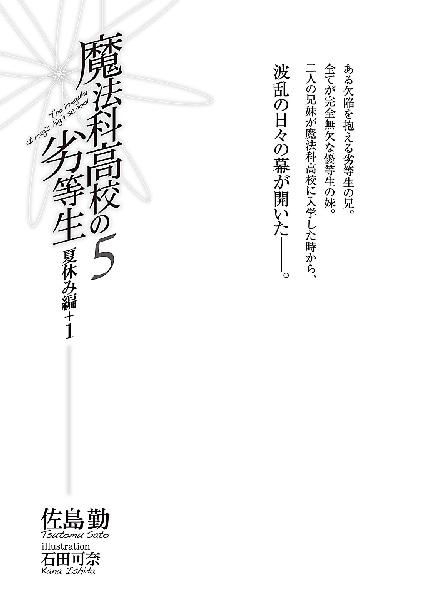

| 魔法科高校の劣等生(5) 夏休み編+1 (電撃文庫) | |
| 佐島 勤 | |
| (2016) | |
本書（電子版）に掲載されているコンテンツ（ソフトウェア／プログラム／データ／情報を含む）の著作権およびその他の権利は、すべて株式会社ＫＡＤＯＫＡＷＡおよび正当な権利を有する第三者に帰属しています。
法律の定めがある場合または権利者の明示的な承諾がある場合を除き、これらのコンテンツを複製・転載、改変・編集、翻案・翻訳、放送・出版、公衆送信（送信可能化を含む）・再配信、販売・頒布、貸与等に使用することはできません。


『海に行かない？』
──発端は雫のそんな一言だった。
「海って、海水浴？」
現代のテレビ電話システムは標準仕様で十人まで同時通話が可能だ。そのシステムを使って雫、ほのかと電話で井戸端会議を楽しんでいた深雪がそう訊ねると、
『うん』
雫から端的な肯定の返事があった。短すぎる回答だが、それでも、小学校入学以来の親友であるほのかにはピンと来るものがあったようだ。
『あっ、もしかして？』
『うん、そう』
しかし、知り合ってまだ四ヶ月にしかならない深雪にとって、このやり取りはレベルの高すぎる「ツー」と「カー」だった。
「もしかして......って、なに？」
そう訊ねられて、ほのかと雫は自分たちが深雪を置き去りにしてしまっていたことに今更ながら気づいたようだ。二人は顔を見合わせて──と言っても深雪の見ているディスプレイの中では二人が目を逸らしたようにしか見えないのだが──ほのかの瞳が先に画面の正面、つまり深雪の方へ向けられた。
『えっと、小笠原にね、雫のお家の別荘があるのよ』
「えっ？ 雫のお家って、プライベートビーチを持っているの？」
『うん......』
深雪の質問に、雫が再び短く、ただし今度は微妙に恥ずかしげな顔で頷いた。
最近、小笠原の無人島に別荘を持つのが資産家の間で流行っており、口汚いことが知性の表現と勘違いしている無知な評論家から僻みを込めて「自然破壊の成金趣味」と誹られている。
別荘を建てられるような無人島は無人化した元有人島ばかりであり、人が住まなくなったことによって土地が荒れているのが実態だ。そこにゼロエミッションを実現している（エネルギー源に太陽光を利用しているからエネルギー面を含めれば完全なゼロエミッションではないが）高級別荘を建てることは、自然破壊どころか国土の有効利用であって恥じる必要は全く無い。当然深雪の質問にも雫（の家）を責めるような意図は存在していない。ただプライベートビーチ付きの別荘を持てるのは資産家と呼べる富裕層の中でもほんの一握りであり、そのことに驚いただけだったのだ。それは多分、雫にも解っていたが、理不尽な非難であっても世間の常識みたいに繰り返されると、無意識に罪悪感を刷り込まれてしまうのだろう。
『父さんが、「お友達をご招待しなさい」って。どうやら深雪と達也さんに会いたいみたい』
気を取り直して（これまた付き合いの浅い者には分からない微妙な変化だった）背景を説明した雫の言葉に、ほのかが少し引き気味に呟いた。
『今年は小父様がご一緒なんだ......』
何かを思い出しているような表情は、以前に雫の父親同伴でバカンスを過ごした時の記憶が蘇っているに違いなかった。それはもしかしたら、今話題になっている別荘でのことかもしれない。
『安心して。顔を見せるのは最初だけ。なんか、仕事が山積みで、数時間空けるだけで精一杯みたいだから』
ほのかの何かに怯えるような表情は、雫の説明で安堵に緩んだ。一体何があったのか、深雪の中で好奇心が頭をもたげたが、質問の優先順位を見失うほどではなかった。
「わたしは構わないけど......何時にするの？」
『決めてない。達也さんの都合の良い時で、って思ってる』
表情で「お兄様のご都合を伺わないと」と付け加えた深雪に、雫は実に良く理解している答えを返した。
◇ ◇ ◇
「......ということなんですが」
達也がこの話を聞いたのは、次の日の朝食の後だった。
まず最初に、「夜中までそんな話で盛り上がっていたのか」と達也は思ったが、口にしたのは当然、別のことだ。
「メンバーは雫とほのかと俺たちだけかい？」
「エリカと美月と西城君と吉田君も誘いたい、と雫は言っていました」
そう言って深雪が少し躊躇うような表情を見せたのは、
「ただ、わたしたちほど親しくないので、エリカたちはわたしから誘ってもらえないか、ということでしたが」
兄に手間を掛けさせるようなことを言いたくなかったのだろう。無論、深雪に達也の手を煩わせるつもりなど無く、自分で声を掛けるつもりだったのだが。
「なるほど。じゃあレオと幹比古には俺の方から連絡しよう。日程は、そうだな......」
逆に、達也がその程度のことを妹に押し付けるはずが無いのも予定調和である。
達也はコーヒーを口に含み、頭の中にスケジュール表を広げた。
「......来週の金、土、日は空いている。それ以降はチョッと難しいな」
魔法科高校の夏休みは八月末まで。（理科高校や文科高校は八月中旬で夏休みが終わるところも多く、芸術科高校や体育科高校は九月の半ばまで夏休みというところが多い）
昨年、一昨年の達也の夏休みは、独立魔装大隊の訓練と、研究所通いでほとんど潰れた。（去年の夏はこれに加えて受験勉強──主に、深雪の家庭教師役──で埋まっていた）
今年は前半に九校戦があった所為で、余計タイトなスケジュールになっている。発売が来月に迫った「飛行魔法専用デバイス」の開発がそれに輪を掛けていた。
彼にとって、夏休みは今年も「休み」では無かった。
「それでは来週の金曜日から日曜日にかけての二泊三日で。雫に連絡して参ります」
だからこそこういう機会を逃してはならないと、深雪は張り切っていた。彼女としては二人きりでないのが少し残念だったが、自分の欲求よりも兄のリフレッシュの方が当然優先されるのだった。
◇ ◇ ◇
雫はどうやら本当に達也の為に予定を空けていたらしく、深雪からの電話に二つ返事で頷いた。ほのかには雫から日程を連絡し、エリカと美月には深雪から、レオと幹比古には達也から誘いを掛けたのだが、誰一人として都合の悪い者がいなかったのは、果たして本当に偶然なのかどうか、達也は眉に唾を付けてみたくなった。
そしてあれよあれよという間に旅行当日。それまでに女性陣の買い物に付き合わせられて、デパートの水着売り場で注目を集めまくったというイベントもあったが、このイベントは達也が記憶の抽斗の奥にしまいこんで、その抽斗を溶接してしまったのでここでは割愛する。
指定された集合場所は何故か、空港ではなく葉山のマリーナだった。
「わぁ......素敵なクルーザーねぇ」
今回は（九校戦の時と違い）場違いでないショートパンツから、すらりと形の良い脚を惜しげもなく露出させたエリカが、目を輝かせて白い船体を見上げている。
「エリカのお家でもクルーザーくらい持ってない？」
微妙に照れた顔で（達也にも大分、雫の表情が解るようになってきた）問い掛けた雫に、エリカは苦笑いを浮かべて首を振った。
「船は持ってるけど、あれは『クルーザー』とは言えないよねぇ......ってか、言いたくない。普段はスタビライザーをオフにしてるから乗り心地最悪だし」
「......もしかして、訓練の為？」
「そうよ」
「徹底してるのね......」
深雪が呆れ顔で呟く隣では、美月がどういう顔をしていいか分からない、とばかり曖昧な笑みを浮かべていた。
他方、
「フレミング推進機関か......エアダクトが見当たらないから電源はガスタービンじゃないな。光触媒水素プラント＋燃料電池か？」
男の子らしく（？）メカニック面に興味を引かれて、推進機関をつぶさに観察していた達也が呟いた独り言に、
「念の為に水素吸蔵タンクも積んであるよ」
予想外の答えが返って来た。（答えが予想外だったのでは無く、答えが返って来ること自体を予想していなかった）
振り返るとそこに、「船長」がいた。
ギリシャ帽を目深に被り飾りボタンの付いたジャケットを着込み、ご丁寧にパイプまで咥えている。
ただ少し、恰幅が足りない気がする。
生活習慣病としての肥満は治療薬の普及によって二十年前に社会から駆逐されているが、船長のコスプレをするならもうチョッと横幅が欲しいところだ。
達也が困惑顔のままそんなことを考えていると、「船長」の方から握手を求めてきた。ちなみに左手は、クラシカルなパイプを如何にもな手つきで握っている。──良く見るとパイプの中は空だった。
「司波達也君だね？ 私は北山潮、雫の父親だ」
予想よりかなり気さくな人柄に戸惑いを禁じ得なかったが、達也は普通の高校生より社会経験が豊富だ。戸惑いを面に出すようなことはせず、そつのない挨拶を返した。
「初めまして、司波達也です。ご高名はかねがね承っております。この度は妹共々、よろしくお願い致します」
「こちらこそよろしく」
雫の父親が差しだした手を、達也は礼儀に反しない程度に浅く握り返した、つもりだったのだが、潮の方がガッシリと達也の手を摑んできた。
手の感触は意外に力強かった。それでも、風間や柳に比べればデスクワークに慣れた指と掌だ。達也を捕まえているのはその手の力よりむしろ、彼に向けられた視線の力だった。相手を値踏みする目つきでありながら、それを不愉快に感じさせない、人の上に立ち、同じように人の上に立つ者と渡り合う指導者の目、百戦錬磨の将の目だった。
「......頭が良いだけの秀才ではないようだな。小手先の技に優れただけの技術屋でもない。実に頼り甲斐のありそうな風貌をしている」
潮の呟きは普通ならば聞き取れない程度の小さなものだった。達也も意識を集中していたから聞き取れたレベルの声量であって、必要最低限以上の配慮はあった。しかし、このセリフが普通のボリュームで放たれていたとしても、達也は非礼と思わなかっただろう。目の前の相手に値をつけることが当たり前と思わせる風格を北山潮は漂わせていた。
──しかし。
「うん、雫の目は確かなようだ。我が娘ながら、中々シッカリしてるじゃないか」
いきなり繰り出された親バカ発言に、達也は表向き神妙な表情を保ちながら「これがあの『北方潮』か......」と心の中でため息をついた。
名前を以前から聞いていた、というのは単なる社交辞令ではない。
企業の経営層がプライバシー防衛の目的で、本名ではなくビジネスネームを使用するのは、今ではむしろ普通のことだ。彼の父親も本名の「司波龍郎」ではなく「椎原辰郎」の名前でＦＬＴ開発本部長の職についている。
雫から父親が会社を経営していると聞いた時にはピンと来なかったが、その後にビジネスネームを教えてもらって、そんな大物が出て来るとは、とその時はかなり驚いたものだ。
晩婚だった所為で（魔法師との結婚に関わる様々な障碍を乗り越えるのに歳月を要したのだ）、もう五十歳を超えているはずだが、この気さくな、というよりむしろ剽軽な雰囲気は四十歳前後にしか見えなかった。
「──深雪！」
目礼で断りを入れて、達也は妹を呼んだ。
小走りで駆けて来た深雪は、すぐに状況を察して、雫の父親に向かい淑やかに一礼した。
「初めまして、司波深雪です。この度はお招きいただきまして、ありがとうございます」
「ご丁寧にありがとう、レディ。北山潮です。貴女のように美しいお嬢さんを迎えられるとは、この船にとっても当家のあばら屋にとっても望外の栄誉と申せましょう」
胸に手を当てて芝居っ気たっぷりに一礼した潮に対し、深雪も付き合いよくニッコリ笑って洋風に膝を折って見せた。
深雪の美貌と立ち居振る舞いの美しさを考慮に入れれば、潮の顔が少しくらい緩んだとしても仕方の無いことだろう。
「あら、小父様。私の時はそんなことは仰らなかったと思いますが？」
「お父さん、みっともないから鼻の下を伸ばさないで」
しかし、非寛容は理屈ではない。そんな潮に向かって、二人の少女からいきなり言葉の矢玉が飛んで来た。
「いやいや、私は鼻の下を伸ばしてなど......」
実の娘といえど相手が一人なら適当に誤魔化すこともできただろうが、小学生の頃からもう一人の娘のように可愛がっているほのかとの二人掛かりは、敏腕実業家にもさばき切れなかったようだ。（ちなみに潮が来ると聞いてほのかが躊躇を見せたのは、本当に娘と勘違いしている節があるのか毎回少なからぬお小遣いを渡されるのが心苦しい所為だったりする）
少し距離を置いてついて来たエリカたちへ潮が大袈裟な身振りを交えて話し掛けたのは、明らかに話を逸らす為だった。
「──おお！ 君たちも娘の新しいお友達だね？ 歓迎するよ。楽しんでいってくれたまえ。残念ながら私はもう行かなければならないが、自分の家と思って寛いで下さい」
取引先相手と娘相手では勝手が違うのだろう。言葉遣いが不統一な辺り、動揺が見え隠れしている。
そそくさと大型乗用車に乗り込んだ雫の父親が、車内で脱いだギリシャ帽子を未練げに眺めているのを見て、達也は「せめて娘と一緒に船旅をした気分になりたかったんだろうな......」と、誰にも聞こえないようひそめた声に納得と同情を込めて呟いた。
◇ ◇ ◇
別荘がある聟島列島まで約九百キロ。実際最高時速百ノットのフレミングシップでおよそ六時間の船旅である。
何を好き好んで飛行機ではなくわざわざ船を使うのか（プロペラのＶＴＯＬは自家用機として今や珍しい物ではないしフレミング推進のクルーザーよりむしろ安い）、達也には今一つ理解できなかったが、レオやエリカに言わせると、「これぞ旅の醍醐味」なのだそうである。目的は旅じゃなくて海水浴だろう、と思わずツッコミを入れそうになったが、「やはりこの二人は息が合う」と心の中で呟くにとどめた。
まあ、連れて行ってもらう立場ではあるし、船酔いをするわけでもない。移動時間を考慮して朝六時などという早い時間に集まったのだ。さっさと出発できるよう達也は船へ乗り込んだ。
外から見ても大きかったが、甲板は外から見た以上に広かった。さすがにプールがあるとかシアターがあるとかいうことは無かったが（「豪華客船」ではなく「クルーザー」なのだ）、八人がデッキチェアを並べて更に釣り糸を垂れても、まだまだたっぷり余裕がある広さだった。──もっとも、空気抵抗を考慮して甲板全体が流線型の透明なドームで覆われているから、実際に釣り糸を垂れることは不可能だが。
「でも、低速航行時は側面を開くんですよ」
そう説明してくれたのはこのクルーザーの操舵手であり、行き先の別荘では彼らの身の回りの世話もしてくれるというマルチなハウスキーパー、黒沢女史だ。
彼女の外見は......ハウスキーパーというより、もっと適切な単語があるような気もする。年齢もせいぜい二十台半ばにしか見えないし。
と言ってもほわほわ、っとしたイメージではなく、テキパキという擬態語が似合いそうなタイプだが、真夏の太陽が照りつける海の上、いくらドームで過剰な光線がカットされているとはいえ、あの格好は暑いのではないだろうか。いや、本人よりも見ている方が。
もっとも、サマージャケットとはいえ長袖の上着を今もシッカリ着込んでいる達也に、そんなことを考える資格は無いかもしれない。
船のデザインは船首上部に操舵室、その下にキャビン、操舵室の天井から透明なドームが伸び、後ろ半分が甲板となっている。
黒沢は全員乗船を確認してすぐ操舵室に引っ込み、間も無く船は岸を離れた。
◇ ◇ ◇
途中嵐にあうこともなく、波はそこそこ荒かったがスタビライザーと揺動吸収システムのお陰で誰一人船酔いに苦しめられることも無く、船は無事、別荘のある媒島へ着いた。
この島の珊瑚礁は野生化した山羊が原因で前世紀後半に死滅の憂き目を見ている。その後、人工的な珊瑚礁回復も図られたが結局上手く行かず、赤土を浚渫した後の海岸は別荘を建てた民間資本により埠頭と砂浜に作り変えられた。いわゆる「知識人」に「自然破壊」と誹られる所以である。
しかし、ここが有人島だった当時に珊瑚礁破壊は起こっていないし、野生化した山羊を駆逐したのも人の手だ。人間がいるから自然破壊が起こるのか、人間がいなくなったから自然破壊が起こったのか。
ついついそんな、皮肉な思考に沈んで行きそうになったが、現実に今、遊ぶ為にここへ来て埠頭と砂浜を使っている自分が偉そうに批評できることではないな、と達也は思い直した。
彼の独白からも分かるとおり、達也たち一行は到着もそこそこにビーチへ来ていた。
白い砂、眩い太陽。
しかしビーチは、それ以上に眩しかった。
「達也く～ん、泳がないの～？」
「お兄様～、冷たくて気持ちいいですよ～」
エリカが、深雪が、波打ち際から呼び掛ける声に、達也は砂に刺したパラソルの日陰から曖昧な笑顔で手を振った。
──それにしても、眩しい。
何が眩しいかというと、波打ち際で戯れる少女たちの水着姿が、である。
まず目を惹くのが、派手な原色のワンピースを着たエリカ。余計な飾りが無いシンプルなデザインは、彼女のスレンダーなプロポーションを更に引き立たせている。
その隣で手を振る深雪は、大きな花のデザインがプリントされたワンピース。日に日に女性らしさを増して行くプロポーションを派手な絵柄が視覚的にぼかし、生々しさの希薄な、妖精的な魅力を強調している。
意外だったのが美月。細かな水玉模様のセパレートでビキニというほど露出は無いが、胸元の深いカットに豊かな胸が強調されて、いつもの大人しいイメージからは想像できない艶かしさだ。ただ、肩幅、腰幅が狭い所為か、ウエストの曲線が足りないのはご愛嬌と言うべきか。
同じくセパレートながら、ワンショルダーにパレオを巻いたアシンメトリーなスタイルで大人っぽく決めているのがほのか。単なる大きさではなく凹凸でいうなら、この中で一番プロポーションが良いかもしれない。
雫は逆に、フリルを多用した少女らしいワンピースだ。こんな時でも表情に乏しい大人びた顔立ちの雫が着ると、何やら倒錯的な、妖しい魅力があった。
何となくこのまま見詰めているのがイケナイことのように感じられて、達也は視線を横にずらした。
結構沖の方で、派手な水飛沫が上がっている。
レオと幹比古が競争（競泳）しているのだ。
達也の見るところ、レオは素ではしゃいでいるのだが、幹比古はかなり煮詰まって自棄になっていた。......訳もなく親近感を覚える姿だった。
達也は更に視線を遠くへ、水平線へ向けて、抜けるような蒼穹にボウッと心を委ねた。
そうして忘我に浸ること暫し。
達也はふと、間近に人の気配を感じた。
そちらに身体ごと目を遣り──声を出さなかった自分を、達也は褒めてやりたかった。
五人が、腰を屈めて彼の顔をのぞき込んでいる。
普段ならともかく、水着姿でこの体勢は、いささかならず問題があった。
「達也さん、考え事？」
腰を深く折り両手を膝についた姿勢で正面からのぞき込むようにして雫が訊ねる。この角度から見ると、雫は思っていたほど子供体型でないのが分かった。が、それは口にも態度にも出せないことだ。もちろん、このまま凝視するなど論外。
「お兄様、せっかく海に来たのですから、泳ぎませんか？」
「そうですよ。パラソルの下にいるだけじゃ、もったいないです」
だからといって左側を深雪が、右側をほのかが、雫と同じような姿勢で彼を囲んでいる今の態勢では、視線を左右に逃がすこともできない。
雫の後ろに立ち無邪気な顔で達也の返事を待っている美月はともかく、その隣で人の悪い微笑を浮かべているエリカをこのまま放置するのは如何にもまずい。明確な根拠はないが、達也はそう感じた。
「そうだな、泳ぐか」
立ち上がり足と海パンについた砂を払う動作でさり気なく五人の艶姿から視線を外し、下を向いたまま七分袖のヨットパーカーを脱ぐ。
パーカーが砂の上に落ちる音と共に、空気が変わった。
しまった、と達也はすぐに思ったが、既に手遅れだった。
「達也くん、それって......」
エリカの声には隠し切れない緊張が滲んでいた。
それ、の意味はすぐに解った。達也だけでなく、ほのかも、雫も、美月も、エリカが何に驚き緊張しているのか理解していた。何故なら彼女たちの目もまた、達也の身体の「それ」に釘付けとなっていたからだ。
パーカーの下には、鍛え上げられた鋼の肉体が隠れていた。筋肉の太さ自体は驚くほどではない。成人の身体ほどのボリュームは無い。だが、少年らしさを残しながらも、腹筋も胸筋もみっしりと重く硬く引き締まり、ルネサンス彫刻のような筋が刻まれている。
ただ彫刻と違って余計なものが──いくつもの傷痕が皮膚に印されていた。
一番多いのが切り傷。
同じくらい多くの刺し傷。
所々に細かな火傷の痕。
不思議なことに骨折の痕は見当たらなかったが、それを差し引いても、尋常な育ち方ででき上がる肉体ではない。
普通に鍛錬しただけでは、こうはならない。
単に血の滲む様な鍛錬を積んだ、というだけでは、こういう風にはならない。
実際に斬られ、刺され、焼かれて、血を流しながら拷問のような、あるいは拷問そのものの鍛錬を積んで、はじめて、こういう身体になる。それを理解していたからこそ、エリカは声を上げずにいられなかったのだ。
「達也くん......貴方、一体......」
「すまない、見ていて気持ちの良いものじゃないよな」
答えられない質問に無関係な答えを返し、達也はエリカから目を逸らして脱ぎ捨てたばかりのパーカーへ手を伸ばした。
だが、彼の手はパーカーを摑むことができなかった。達也が砂の上に落としたはずのそれは、彼の足元に素早くひざまずいた深雪の胸に抱えられていた。
妹といえど女性の胸に手を伸ばすわけにも行かず、達也の左手は所在なく宙をさまよう。ただ幸いにして（？）収める鞘に悩む必要は無かった。何故なら彼の左腕は、立ち上がるや否や身を寄せた深雪の右腕に抱え込まれていたからだ。
「わっ」
驚きの声を上げたのは美月だった。ピッタリと密着した深雪の胸は水着一枚を隔てただけで達也の腕に押し付けられている。しかし深雪に、それを恥ずかしがっている様子は無い。
「お兄様、大丈夫ですよ」
深雪の頰はほんのりと赤く染まっていたが、羞恥は半裸で抱きついていることに対するものではなく、
「わたしは知っています。この傷痕の一つ一つは、お兄様が誰よりも強くあろうと努力された証だということを」
至近距離で見つめ合う眼差しを羞じらってのものだった。
「ですから、お兄様の身体を見苦しいだなんて、わたしは思いません」
深雪の言葉に、達也の表情が微かに緩む。その直後、彼は右腕に柔らかな衝撃を覚えた。
ヒュウ、と短い口笛を吹いたのはエリカだ。ただしそこには冷やかしではなく称賛が込められている。
大体予想はついていたが、達也は首を捻って右腕を包み込む感触の正体を確かめた。
予想に違わず、ほのかが抱きついていた。深雪と張り合うように彼女は両手で達也の右腕を抱え込んでいる。深雪と違ってほのかの水着はセパレートなので、達也の腕が直接彼女の柔肌に触れている。その為なのかどうなのか、ほのかの顔は深雪の三倍ほど赤くなっていた。
「わ、私も気にしません」
最初に一度嚙み、それから早口でまくし立てる。それも多分当然のことで、恋人相手ならともかく恋人でも無い異性に、しかも水着姿でするには大胆すぎる行為だ。当人のほのかが、動揺しない方がおかしい。
もっとも、おかしいといえばほのかのとった行動そのものがおかしかった。
十代の少女にとって、いや、もっと人生経験の豊富な女性であっても、達也の身体に刻印された傷痕は直視しがたいものであるはずだ。数は多いが小さなものばかりだから気持ち悪くは無いかもしれないが、その傷痕の原因となった出来事を連想して怖気を覚えるのが普通だろう。それを解っていながら彼女たちの前でパーカーを脱いだ自分の行動は迂闊だったとしか言えない、自分は南国の陽気に呆けていたらしい、と達也は苦い思いを懐いた。
それはともかくとして、エリカの反応も少女のものとしては珍しいかもしれないが、こちらはまだ達也にとって理解可能だった。自分に向けられるものに関する限り深雪の言行を「普通」の物差しで測ることは少し前から諦めている。だがほのかの行動の背後にあるものは、達也にとって謎だった。これではまるで──
「これってまるで......恋人と妹の板挟みの図ですね」
「こらっ、しっ！ そんなこと言っちゃダメでしょ、美月。せっかく面白くなりそうなんだからさ」
美月のセリフは冷やかしでは無く素直な感想だった。それは達也にも分かったが、「そんなことを言ってはダメ」という点については、エリカに全くの同感だった。後半部分については、達也には全く同意できなかったが。
ただそのセリフの前半も後半も、エリカの声はさっきと明らかに違っていた。隔意が抜けていた。美月の声も全くいつもと変わらないものだった。
美月の声も聞こえただろうに未だ右腕にしがみついているほのかを持て余している（深雪のことは既に気にしていない）達也に、エリカは少しバツの悪そうな笑顔を向けた。
「えーっと、ゴメンね、達也くん。変な態度とっちゃってさ」
「いや、気にしてない。エリカも気にしないでくれ」
「気にするなって言われてもねぇ......あっ、そうだ！」
良いこと考えた、と言いたげな表情で、エリカがニコッと笑った。
「お詫びに、あたしのも見せてあげるから」
そう言いながらエリカは右手の親指を水着の肩紐の下に差し入れ、ウインク付きで指一本分ほど持ち上げて見せた。
エリカの隣で、美月が硬直している。
俯いたまま顔を上げようとしないほのかと、達也の顔を笑顔で見詰めたままの深雪と、達也は自分の両腕に抱きついたままの少女二人へ交互に顔を向けた。
「泳ぐか」
二人の少女を両腕にしがみつかせたまま、達也は波打ち際に向かった。
頰を膨らませたエリカと、困惑込みの気の抜けた笑みを浮かべた美月。
二人の前を横切って達也たちを追いかける雫は、右側の少女の背中に向かって「よくやった」と言いたげに何度も頷いていた。
◇ ◇ ◇
眩しくも青い空が、達也の正面に広がっていた。穏やかな海面に背中を預け（ただしほとんど水没状態で辛うじて顔だけを水の上に出して）、彼はプカプカと有るか無いかの波の間を漂っていた。
少し前までは水の掛け合い、が発展して「ジェット水流？」と言いたくなるような水の撃ち合いなどして遊んでいたのだが（もちろん魔法によるもので、達也は的に徹していた）、やはり少年一人に少女五人は、いくら達也でも精神的に辛かった。レオと幹比古がいれば逃げ出すほどではなかったはずだが、競泳は遠泳になったらしく、二人の姿はまるで見えない。「少し沖に出て来る」と言い残して達也が五人に背を向けた時は深雪が随分と不満げな顔をしていたが、さすがに居心地の悪さは理解したようだった。
女性陣は今、ボートで遊んでいる。場所は達也が漂っている所から少し砂浜側だ。一息入れる邪魔はしないが目の届く距離をキープする、というのが深雪をはじめとする少女たちの妥協ラインらしい。
わずかに吹いている微風が少女たちの楽しそうな声を達也の許へと運んでいた。キャーキャー言っているだけであまり意味のある会話は聞き取れなかったが、彼女たちがどういうポジションで遊んでいるか程度なら、達也は目を向けなくても把握できていた。ボートの上にほのかと雫、その縁に捕まって水の中に深雪とエリカ。美月はパラソルの下で一休みしているはずだ。
そういえば、と達也は小さくゆったりとした波に揺られながら思い出していた。ほのかは泳ぎが苦手だと言っていたはずだ。ボートと言っても喫水の浅い、サーフボードに毛が生えた程度の小さくて不安定な物、こんな沖まで出て来て大丈夫なのだろうか。
得てしてこういう不吉な予感はよく当たるもの。言霊と言ったりフラグと言ったり人によって呼び方は様々だが、都合の悪い展開は言葉にすると本当にそのとおりになる、というのは理屈を超えて間々あることだ。それは口にした言葉だけで無く、頭の中で考えただけの言葉にも適用される。
風の凪いだ夏の空気を突如切り裂く悲鳴。懸念していた転覆事故の発生を目を向けるより早く情報として知覚した達也は、そのまま海面に立ち上がりひっくり返ったボートへ向けて疾走する。他人の目がある所では到底できない移動方法だが、泳ぐよりこちらの方が遥かに速い。裏返ったボートの傍まで駆け寄って、達也は一歩ごとにフラッシュ・キャストで連続発動していた表面張力増幅魔法「水蜘蛛」の効果を切った。
達也の身体が足から海中にダイブする。先に水中へ潜っていた深雪を手振りで制して達也はほのかの腰に背後から手を回した。パニック状態なのだろう、ほのかは手足をばたつかせて抵抗したが、達也はそれをものともせず水を蹴って海面に浮上した。
波の上ではエリカが雫をボートの上へ押し上げているところだった。転覆していたボートを元に戻したのはエリカだろうか、雫だろうか。そもそもどういう経緯でボートがひっくり返るようなことになったのか、それも気になったが詮索は後回しにして、達也はほのかをボートに乗せることにした。
水の上に顔を出して少しは落ち着いたようだが、ほのかの興奮状態は収まっていなかった。無茶苦茶に暴れはしなかったものの、「チョッと待って！」とか「お願いですから！」とか良く分からないことを叫んでボートに上がるのをしきりと嫌がる。しかし、水温の高い夏の海といえど水中にいるだけで体力は削られていく。溺れかけていたのだから、ボートの上で身体を休めるのは必要なことだ。達也はイヤイヤと首を振るほのかの身体を強引にボートの上へ押し上げた。その勢いに半転したほのかの背中を先に上がっていた雫が抱き止める。ほのかの身体が達也から見て正面を向き、達也はようやく、ほのかが何を嫌がっていたのか理解した。
元々ファッション性重視で本当に泳ぐことを考慮していないデザインだったのだろう。
ほのかの水着は、トップが捲れ上がっていた。
達也は目をつぶり、重力に引かれるまま水底へ沈んだ。
ほのかは今更のように悲鳴を上げて、両手で胸を押さえボートの上でうずくまった。
◇ ◇ ◇
「ヒック、ヒック、エグッ......」
「えっと、あの、何が......ほのかさん、大丈夫ですか......？」
砂浜にペタンと座り込み本格的に泣き崩れてしまったほのかに、事情を知らない美月がオロオロと話し掛けていた。他の三人──雫、エリカ、深雪は決まり悪げに二人を取り巻いている。
「ヒック......だから、エグッ......待ってって......グスッ、言ったじゃないですかぁ......」
もちろん、一番いたたまれない気持ちでいるのは達也だった。本音を言えば、逃げ出したい。しかしここは、転進も撤退も許されない場面だった。
「いや、あのさ......達也くんは助けてくれたんだし......」
エリカの定番とも言える口添えもほとんど効果が無い。深雪も一方の当事者が達也なだけに、慰める言葉が見つからない様子だ。
「ほのか、その......すまなかった」
達也にも悪意があったわけでは無く、それどころか責任もほとんど無いとはいえ、いつまでも知らん顔はできない。そう思って頭を下げた達也を前に、雫がほのかの耳元に口を寄せた。
『ほのか、達也さんが悪いわけじゃないの、分かってるよね』
ほのか以外に聞こえない小さな声。
『ウェアを直す時間だってあったんだから』
雫の声はその大きさに関わらず、また事実と一部相反する内容だったにも関わらず、ほのかを落ち着かせる効果があった。
『最初の予定とは違ったけど』
ただ、慰めるにしては何やら焦臭いというか、
『これってチャンスだよ』
陰謀チックなセリフだった。
雫が更に二言三言囁いて、ほのかはようやく顔を上げた。
「達也さん......本当に悪かったって思ってますか？」
「噓偽りなく思っている。本当に悪かった」
再び深く頭を下げた達也に向かって、ほのかは「じゃあ......」と呟いた。
「......今日一日、私の言うことを聞いて下さい」
「えっ......？」
予想外のセリフに、達也の顔に戸惑いが浮かんだ。こういう時にこういう要求をしてくるのは、ほのかのイメージに合わない気がした。そう思ったのは達也だけではなかったようで、深雪とエリカも同じような表情を浮かべている。
「それで、許してあげます。ダメですか......？」
達也は深雪と顔を見合わせた。
深雪は「仕方ないですね」という顔で苦笑している。
「......それで良いのなら」
言うことを聞け、と言われても、何十年も前に流行った「王様ゲーム」のような悪質な要求をしてくる少女でないことは分かっている。達也が躊躇いがちに頷くと、「約束ですよ！」とほのかが満面の笑顔で頷いた。
◇ ◇ ◇
レオが長～い（長距離かつ長時間の）競泳を終えて海から上がって来ると、バルコニーはちょうどティータイムだった。
テーブルの上には冷たい飲み物と彩り豊かなフルーツ。
給仕を務める黒沢はエプロンこそ付けているもののその下はさすがに例の制服ではなく、薄手のミニワンピースだった。肩がむき出しの丈の短いワンピースの上に、ワンピースそれ自体より大きな白いエプロン、そこからのぞく細い手足。ティーンの男の子なら目が釘付けになっても仕方が無い色気を漂わせていたが、今はもっとパワフルな水着姿が四つも並んでいる。成熟度、という点では一歩譲るものの、ルックスそのものは抜群の美少女二人と水準以上の美少女二人。色とりどりの水着姿を前にして「色気より食い気」を実践できるレオにとっては、黒沢の放つ「大人の魅力」もそれほど手強い相手ではなかった。
ただ、全く無関心というわけでもない。水着姿が四つ、と認識したところで、レオは「おやっ？」と首を捻った。
「達也と......光井はどうしたんだ？」
「向こうで、ボートに、乗ってるよ」
答えはテーブルからではなく、背後から返って来た。
全身から疲労を滲ませ海水を滴らせた幹比古が、息も切れ切れに答えて指差した先では。
達也とほのかの二人が、レトロな手漕ぎボートで沖へ向かっていた。
「......どうなってんだ、ありゃ？」
「色々あったのよ、イロイロ」
レオの問い掛けに、エリカがそっぽを向きながら答える。
その表情は素っ気無いというより半分拗ねているような顔で、そっぽを向かれたレオも気分を害するより「おや？」という好奇心が先に立った。
傍で見ていた幹比古も興味深げな表情を見せたが、彼の関心はすぐに海上の二人へ向いた。
麦藁帽子を被った達也の表情は、帽子の作り出す陰に隠れてよく見えない。
日傘を差し、背中を向けているほのかの表情は尚更のこと、こちらからでは分からない。
だがそれでも、浜辺から遠ざかる小さなボートから、和やかで浮き浮きした雰囲気が伝わってきている、と幹比古は感じた。
「......結構良い雰囲気じゃない？」
「こっ、コラッ、」
バカ、というセリフは言えなかった。
焦りまくったエリカのセリフは、向かいの席から伝わって来るヒンヤリとした空気に打った斬られた。
シャリシャリシャリシャリ......という、真冬の深更にでも聞こえてきそうな不吉な音を、幹比古は隣に座る少女の手元から聞き取った。
「吉田君、良く冷えたオレンジは如何かしら？」
愛想良く話しかけられて、幹比古はカクカク頷きながら深雪から冷え過ぎたオレンジを受け取った。
計ったようなタイミングで、黒沢からスプーンが差し出される。
幹比古は機械的に、シャーベット用のスプーンを受け取った。
深雪が新たなフルーツを手にする。再び、シャリシャリシャリシャリ......という音が聞こえ、たちまちの内にマンゴーの生シャーベットができ上がった。冷ややかな目で見詰めていたフルーツから目線を外し、愛想の良い微笑みを浮かべて斜向かいの席へ差し出す。
「西城君も如何？」
「あ......どうも......」
さすがのレオもそう答えるのが精一杯だ。
深雪は再度、フルーツの山に目を向けたが、八つ当たりに飽きたのか、詰まらなさそうに目線を外した。
「雫、悪いけどわたし、少し疲れてしまったみたい。お部屋で休ませてもらえないかしら？」
「良いよ、気にしないで。黒沢さん？」
「はい。深雪お嬢様、ご案内致します」
黒沢の後に続いて、深雪が別荘の中に姿を消した。
縮こまっていた美月のホッとした顔と、常と変わらぬ雫のポーカーフェイスが好対照だった。
◇ ◇ ◇
夕食はバーベキューだった。
八人は和気藹々とバーベキューコンロを囲み、テーブルとコンロを行ったり来たりしていた。
深雪も一休みして落ち着きを取り戻したのか、ほのかが甲斐甲斐しく達也の世話を焼いている姿を前にして、エリカや雫と楽しげにお喋りしている。
美月は昼のティータイムが軽いトラウマになっていたのか、深雪たちと少し離れた席で、幹比古と遠慮がちな会話を交わしている。
レオは専ら食べる方に口を使っていた。黒沢はほとんどレオ専属の給仕係と化している。
無論、ハッキリとグループ分けがされているわけではなく、時に、ほのかは深雪たちの輪に加わり、時に達也は、レオとフードファイトを繰り広げたりした。
ただ、何となく──いつもに比べて何となく、ぎこちない空気が彼らの間に流れていた。
◇ ◇ ◇
嵐の前の静けさ。
何が起こるか分からない、でも何かが起こりそうな気がする──そんな空気を破り、波乱の幕を開けたのは、意外な人物だった。
女の子五人で遊んでいたカードゲームが美月の負けで決着してすぐ、雫が深雪に「少し外に出ない？」と誘いをかけたのだ。
「......いいわよ」
戸惑いは一瞬のこと。
深雪はすぐに、ニコッと笑って頷いた。
「......えっと、お散歩ですか？ じゃあ、私も」
「美月はダメよ。罰ゲーム、あるんだから」
深雪の後を追って立ち上がりかけた美月だったが、そのシャツをエリカがむんずと摑んで引き止めた。
「えぇ!? 聞いてないよ！」
「敗者に罰ゲームはつきものなの。じゃ、そういうことで、二人とも気をつけて」
空気が読めているのか読めていないのか微妙な美月を拘束し、エリカは二人の間に漂う張り詰めた空気に気づかぬフリで、深雪と雫に手を振った。
妙に緊張した空気を感じ取っていたのは女性陣だけではない。レオが夕食後早々にフラッと出て行ったのはこの空気を兆候の段階で嗅ぎ取ってのことだろうし、将棋の傍ら女性陣のやり取りを盗み見て集中力を欠いていた幹比古は、
「王手。あと十手で詰みだ」
「ええっ、もう!?」
達也の無慈悲な宣告に悲鳴を上げることになった。
◇ ◇ ◇
別荘を出て、波打ち際を左へ。
無言で歩む雫の後を、深雪が無言で続く。
そのまま、別荘の灯りが届かなくなる所まで進んで、雫はようやく振り返った。
雫はいつも以上に無表情、というより、緊張に顔が強張っている。
深雪は柔らかな笑みをたたえているが、その笑顔は、感情の読めないアルカイックスマイルだった。
「つき合わせてゴメン」
「いいのよ。何か話があるのでしょう？」
そう深雪に促されても、すぐには話を切り出さなかった。
砂浜を洗う波の音を十、数えたところで、雫はようやく口を開いた。
「教えて欲しいんだ」
「何を？」
「深雪は達也さんのことをどう想ってる？」
歯に衣どころかオブラートにも包んでいない、質問の意図も理由も何の説明もない、端的過ぎる雫の問い掛けに、
「愛しているわ」
わずかな躊躇も動揺も無く、深雪は一言、答えた。
「......それは、男の人として、ということ？」
動揺はむしろ、雫の側に見られた。それでも取り乱したりしなかったのは、彼女のパーソナリティの故か。
「いいえ」
深雪の答えには、一分の揺るぎも見られなかった。
彼女の表情にはむしろ余裕のようなものまで見られた。
「わたしはお兄様を誰よりも尊敬し、誰よりも愛している。でもそれは、女として、ではないの。わたしのお兄様に対するこの想いは、決して、恋愛感情ではないわ。わたしとお兄様の間に、恋愛感情はあり得ない」
雫と視線を合わせて、
「雫が何故そんな質問をするのか、わたしにも分かっているつもりよ」
深雪はニッコリと笑った。
「大丈夫。わたしに、ほのかの邪魔をするつもりは無いから。......ヤキモチは焼くけどね？ だから、安心して、って言っても無理かもしれないけど」
今度は「くすっ」と笑った深雪に、雫は泣きそうな表情を浮かべた。
「......何故」
「何が？」
「何故......そんな風に、割り切れるの？ だって深雪、こんなに達也さんのこと、好きなのに」
深雪は一歩、雫の方へ足を踏み出した。
雫の身体が強張った、が、後退りはしなかった。
深雪はそのまま雫の横を通り過ぎて、背中合わせの位置で止まった。
「......わたしたち兄妹の関係を他人に説明するのは難しいわ。あまりにも沢山の思惑が絡み合っているから。わたしのお兄様に対する想いも本当はそんなに単純なものじゃないのだけど......やっぱり、愛してる、って言葉が一番シックリ来るわね」
「......本当の、兄妹じゃないの？」
振り向いた雫に、
「随分踏み込んだことまで訊くのね？」
振り向いた深雪が問い返した。
「......ゴメン」
「ううん、責めてるわけじゃないのよ？」
首を横に振る深雪は、屈託の無い笑みを浮かべていた。
「いいわね......そんなに一所懸命になれる友達がいるなんて」
「私は......深雪のことも、友達と思ってるよ」
「知ってるわ。だから気になるのでしょう？ 友達同士が、傷つけ合わないように」
優しい眼差しを向けられて、雫が恥ずかしそうに俯いた。
「話を戻すけど......わたしとお兄様は実の兄妹よ。少なくとも記録上はそうなってるし、ＤＮＡ検査でも血縁関係を否定する結果が出たことは無いわね」
「でも......」
「言いたいことは分かるわ」
口ごもる雫の前、深雪は訳知り顔で頷いた。
「わたしがお兄様に向けている感情は、兄妹の関係を超えていると自分でも思うもの」
雫は困惑顔で黙り込んでしまった。
「わたしね......本当は、三年前に死んでいるの」
「えっ？」
しかしさすがに、この告白を前に、声を抑えることはできなかった。
「死んでいるはずだった、って言うべきなのかな？ でもわたしはあの時、自分の命が消えていくのを確かに実感したから、『本当は死んでいた』でもきっと、間違いじゃない」
そう告げた深雪の微笑みがあまりに儚くて、「本当は死んでいた」というセリフが真に迫って感じられて、雫は背筋にゾクッと寒気を覚えた。
「わたしが今、ここでこうしていられるのはお兄様のお陰なの。わたしが泣いたり笑ったりできるのも、こうして雫とお喋りできるのも、全部お兄様のお陰なの。わたしの命はお兄様にいただいたもので、だからわたしの全てはお兄様のものなのよ」
「それって......」
どういう意味？ という言葉にならない質問に、答えは無かった。
「わたしのお兄様に対する想いは、恋愛感情じゃないわ」
深雪の口から返って来たのは「男の人として？」という二番目の質問に対する、確信の込められた、先程と同じ答えだった。
「恋愛って、相手を求めるものでしょう？」
深雪から逆に問い掛けられても、
「わたしのものになって、って求めるのが恋じゃない？」
雫は答えられなかった。知識としての答えは相応しくないと思ったし、
「でも、わたしがお兄様に求めるものなんて、何も無いわ。だって、わたしはもう、わたし自身をお兄様からもらっているのだもの」
深雪も回答を求めて質問したのではないと、雫には何となく分かっていた。
「わたしはこれ以上の何も、お兄様に求めない。わたしの気持ちを受け取ってもらうことさえ求めはしない。この想いを表現する言葉は......やっぱり、愛しています、以外に無いんじゃないかしら」
「......参った」
雫は深雪の告白に、白旗を揚げること以外、何もできなかった。
「深雪って、本当に、大物」
「自分でも、歪んでいると思うんだけどね」
ただただ頭を振る雫に、深雪は悪戯っぽく片目を閉じた。
◇ ◇ ◇
雫たちが出て行ってすぐ、ほのかは鏡に向かっていた。部屋を抜け出す時の「お花を摘みに」というのは口実だ。
鏡を見ながら、ほのかは雫の言葉を思い出していた。夕食後、雫はこっそりほのかにこう告げたのだ。「私が深雪を外に連れ出すから、ほのかは達也さんを誘いなさい」と。
その意味はすぐに解った。相談するまでもなく、ほのかの気持ちは雫に筒抜けだった。昼間の転覆事故も、実を言えば雫がほのかと達也を取り持つ為に企てた「やらせ」だったのだ。あらかじめほのかは泳ぎが苦手だと伝えておいて、達也に助けてもらい、お礼という名目であれやこれやアプローチするというのが雫の計画だった。達也が間に合わなかった場合を考慮して、フォローの準備もしてあった。あの羞恥刑は完全なアクシデントだったが、結果的にあの後、達也を独り占めすることができたのは、ほのかにとって後ろめたくも嬉しいことだった。
そして今、雫は告白のお膳立てを整えてくれている。ほのかは少し迷って、淡いルージュを目立たないように薄く引いた。髪を整え服装をチェックし、「よしっ！」とほのかは自分自身に気合いを入れた。打合せどおり達也を深雪がいない方へ誘い出すべく、ほのかはリビングへ戻った。
自分の足が微かに震えていることに、ほのかは気づいていなかった。
◇ ◇ ◇
隣を歩く達也の顔をチラチラと盗み見ながら、いつ話を切り出そうかとほのかは悩んでいた。
ここまでは彼女の思い描いたとおりに状況が進んでいる。「外に出ませんか」という誘いに達也が二つ返事で承諾してくれたことに、ほのかはむしろ戸惑っていた。
スタートがスムーズすぎた所為で彼女自身が流されてしまっている観がある。
達也は何も言わない。
別荘を出て波打ち際を右へ、寄せ来る波からほのかをかばうように海側を同じ歩調で歩いてくれている。
何となく、自分の意図を察していながらそこへ至るのを避けている、という風にほのかには感じられた。
自分の方から踏み出さなければ有耶無耶にされてしまう、という危機感がほのかの背中を押した。
「達也さん」
何度も口を開け閉めしてほのかがようやく振り絞った声に、達也は足を止め振り向いた。
ここはもう、別荘の灯りが届いていない。
夜の闇の向こう側で交わされている言葉も、波の音にかき消されてここまでは届かない。
潮騒だけが闇を満たす星空の下で、ほのかは達也と正面から向かい合った。
しかし、そこから先が続かない。達也が目線で促してみても、ほのかは目を逸らして俯いてしまう。
「あの......」
時間をおいて顔を上げ、何かを切り出そうとして目を合わせ、緊張した顔で俯いてしまう、ということが何度も繰り返されて、
「うん、なに？」
達也はいつもより柔らかい口調、柔らかい言葉遣いで続きを促した。
彼の言葉よりもその声に勇気づけられたのか、
「あの......その......私、達也さんのこと好きです！」
逡巡の末にほのかが搾り出したセリフは、もしかしたら、闇の向こう側に届いたかもしれなかった。
しかし、そんなことに思いを致す余裕は、ほのかには無かった。
今、彼女にとって世界は、達也と自分の二人だけで形作られるものだった。
「──達也さんは私のこと、どう思ってますか!?」
達也と視線を合わせることができず、瞼をギュッと閉じてしまったほのかに、答えは中々返らなかった。
「......ご迷惑、でしたか？」
恐る恐る目を開け、恐る恐る涙声で問い掛けたほのかに、達也は笑って首を振った。
「迷惑じゃないよ。いつかはそう言われるかもしれないと、思ってもいた。気づいたのは今日の昼だけど」
達也と目を合わせて、哀しげな瞳をしている、とほのかは思った。
押し寄せてくるであろう悲しみに耐えるべく、ほのかはギュッと手を握った。
だが達也の答えは、ほのかにとって良い方の予想にも悪い方の予想にも当てはまらない、予想外のものだった。
「......ほのか、俺はね、精神に欠落を抱えた人間なんだ」
「......えっ？」
「子供の頃、魔法事故に遭ってね......精神の機能の一部を消されちゃったんだよ」
ほのかの顔がサッと蒼褪めた。夜の闇の中でも分かるほど、蒼白に。
大きく目を見開き、のろのろと上げられた両手で口元を覆い、「そんな......」と呟きを漏らした。
「俺はその時、多分、恋愛という感情も無くしてしまっているんだ。閉ざされたのではないから、解き放つこともできない。壊されたのではないから、治す（直す）こともできない。消し去られたものは、取り戻せない」
達也の語り口は、他人事のようだった。
「俺には恋愛という感情が分からない。人を好きになることはできても、恋をすることができない。一応、知識だけはあるからね。自分の心を診断してみて、俺にはそれが欠けていると分かった」
ほのかは自分の口を押さえたまま、「噓だ」とも「信じられない」とも言わなかった。他のどんなフレーズも発することができない、文字通りの絶句状態だった。彼女に自ら紡ぐ言葉は無く、耳から染み込んでくる達也の告白だけがほのかの意識に綴られていた。
「卑怯な言い方かもしれないけど、俺は、ほのかのことも好きだよ。だけどそれは、他の友達と同じように、なんだ。ほのかがどんなに一所懸命になってくれても、俺はきっと、ほのかのことを特別な女性だと想えない。それはきっと、ほのかにとって辛いことで──ほのかを傷つけてしまうことだから」
そう言って、達也は無力感の漂う笑みを浮かべた。
「ほのかの気持ちには、応えられない」
達也が口を閉ざした。
ほのかも、何も言わない。
寄せては返す波の音だけが、夜の闇を満たした。
少しずつ波が近づいてきて、
遂に、二人の足元へ届こうか、というだけの時間が過ぎて、
ほのかが、顔を上げた。
「怒らないで下さいね？ 私、達也さんって、深雪のことが好きなんだと思っていました。妹としてじゃなく、女の子として」
「......それは誤解だ」
「ええ、そうみたいですね。達也さん、頭が良いですから......噓をつくなら、もっと信憑性のある噓をつくはずですから。精神の機能を部分的に消去する魔法なんて聞いたこともありませんけど、だから余計に、信じられます。でも、ということは、達也さんは、私以外の女の子を恋人にすることも無いんですよね？」
何だか思いがけない雲行きに戸惑いながらも、達也は「まあ、そうだけど......」と頷いた。
「......だったら、良いです」
「？」
「これからもずっと、達也さんには恋人がいないんでしょう？ だったら、私が達也さんのことを好きでいても、横恋慕にはなりませんよね？」
「それは......そうかもしれないけど」
「じゃあ、問題ないです。私はこれからも、達也さんのことを好きでいることにします！ 他に好きな人ができるまで、ですけど！」
明るく、乗り換え予告つきの宣言。
「......敵わないな」
達也は苦笑しながら頷いた。
わざわざ「他に好きな人ができるまで」と付け加えたほのかの意図が分からぬほど、達也も鈍くは無かった。
◇ ◇ ◇
次の日も、朝から太陽が激しい自己主張を繰り広げていた。
早朝から、気温は三十度を超えていた。
ただでさえ汗ばむ暑気に覆われた砂浜で──
熱い熱い闘いが繰り広げられていた。
「お兄様、お背中を。日焼け止めを塗りますので」
「達也さん、ジュース、飲みませんか？」
とか、
「雫がジェットスキーを貸してくれるそうです。乗せていただけませんか？」
「少し沖に出るとダイビングスポットがあるそうですよ？」
とか、第三者には鬱陶しい熱気が発散されている。
「深雪、昨日は相当、我慢してたのね......」
「ほのかさん、何だか随分と吹っ切っちゃってる感じ......」
エリカと美月がやや呆れ気味に、
「............」
雫が少し困ったような顔で、
「何というか、大変だな」
レオが同情を湛えてしみじみと、
「......吉田くん、どうしたんですか？」
「え、いや、何でもないよ」
幹比古が──いや、これは本人の名誉の為に言わない方が良いだろう。
とにかく友人たちがそれぞれの思いを乗せた眼差しを向けているその先で、達也は深雪とほのかのリクエストを、時にため息をつきながら順番にさばいていた。
ジェットスキーのタンデムシートに深雪を乗せて海面を駆け抜け（その後ほのかも乗せることになった）。
実はそこそこ泳げることが判明した──昨日は別の意味でパニックになっていたのだ──ほのかと一緒にモーターボートでダイビングスポットに赴き（深雪も一緒についてきた）。
日焼け止めを塗ったり塗られたり（塗り直しだ）、口元に次々と海の幸を押し込まれてフォアグラのガチョウの気分を味わったり（俗に言う「あーん」である）。
そんな、小笠原気団より熱い高気圧（好気圧？）に挟まれて、火傷しそうな熱風の中を散々振り回されている達也は......
何だか昨日よりも、いつもよりも、リラックスして、楽しげに見えた。
夏休み後半に入り、第一高校敷地内は閑散としていた。
夏の一大イベント・九校戦が終了して、スポーツ系各部は自主トレモードに移行している。あと一週間もすれば新学期に向けて各部とも活発な活動を再開することになるが、今はクラブ活動も夏休み状態だった。
もっとも、全くの無人というわけでもない。少数ながら自主トレに出て来ている生徒もいる。特に一年生にとっては、上級生がいると中々順番が回って来ない訓練施設をタップリ利用できる機会。
この閉所戦闘練習場でも、一年生部員の姿が多く見られた。
◇ ◇ ◇
不規則に配置された太い角柱の隙間を縫うように駆け抜ける。
見通しの効かない屋内は、壁は無くとも迷路そのもの。所々で意図的に落とされた照明と、足元に散らばる廃材オブジェクトが、転倒の恐怖を誘う。
しかしそれでも、ペースを落とすわけにはいかない。今はタイムトライアルの最中だ。例え自主トレであっても、無様な記録は残せない。
林立する柱がＹ字型の分岐路を作っている。
瞬時の判断──右を選択。その先には、自動銃座が置かれていた。
ほとんど条件反射で、右手に握るＣＡＤの「銃口」を向け、引き金を引く。
競技用に設定された加重魔法が発動。
重力センサーがスイッチとなって、自動銃座を停止させる。
今更のように、背中を冷たい汗が伝う。だがそれに気を取られている暇は無かった。反射的に足を止めてしまったことによるタイムロスを挽回すべく、攻略のペースを上げる。沈黙した自動銃座の脇をすり抜け、コースを修正すべく左の柱に沿ってターン。
その瞬間──
──横合いから粘着質な衝撃を受け、
──リタイアを告げるブザーが鳴った。
◇ ◇ ◇
照明が回復したコースで、森崎は自分の身体を憮然と見下ろした。コンバット・シューティング部の練習用ユニフォーム、その右脇腹にベットリと貼り付いた赤いペイント弾。
既に乾燥しているゴム質のペイントはこのまま手で剝がせないことも無いが、綺麗に落とす為には準備室に置かれているリムーバーを使う必要がある。次の使用者の邪魔にならないよう、森崎は駆け足で出口へ向かった。
荒っぽく開かれた扉の音に、操弾射撃用ランチャーの手入れしていた女子生徒が、目を丸くして振り向いた。（なお操弾射撃とは炸薬も圧縮空気も使わずに魔法だけで弾丸を飛ばして直径二．五四センチメートル［一インチ］の小さな標的を撃ち抜く魔法競技である。操弾射撃用ランチャーはＣＡＤを内蔵した台座に、四方向から弾を挟み込んでホールドする四本のレールを銃身の代わりに取り付けたライフルの形状をしている）
「......荒れてるね、森崎」
その女子生徒、一年Ｃ組所属、滝川和実はランチャーを整備する手を止めて、気遣わしげな声を森崎に掛けた。
「滝川......お前、操射部（操弾射撃部）だろ。ここで何をしている？」
「うわっ、ご挨拶ね」
だが森崎の返事は、滝川が言うとおり「ご挨拶」な、かなり感じの悪いものだった。
「あたしは内蔵ＣＡＤの部品を分けてもらいに来たのよ。そっちの部長さんにはちゃんと許可をもらってるんだから、『何をしている』扱いされる筋合いは無いと思うけど」
「ふん......在庫管理もできないのか」
「悪かったわね。言っときますけど、お互いに余った部品を融通し合うのは射撃系各部の伝統よ。自分のＣＡＤしか使わない森崎が知らないだけなんだからね」
校内においてＣＡＤの常時携行が認められる生徒会役員や風紀委員は別にして、一般の部員はLocalPositioningSystemにより使用可能エリアの制限が掛けられた各クラブ備品のＣＡＤを自分用に調整して使わなければならない。入学直後から風紀委員会入りした森崎はクラブ活動中もずっと自分のＣＡＤを使用していたので、クラブの所有するＣＡＤのメンテナンスについて知る機会が無かったのだ。
普通ならグウの音も出なくなる反論を鼻先で笑い飛ばして、森崎は彼女に背を向けた。滝川の「感じワル」という声を無視して、壁に並ぶロッカーからスプレー缶を取り出し脇腹に噴霧する。脇腹についたペイントは端からクルリと剝がれ、一塊になって床に落ちた。床には同じような赤い塊がいくつも散乱していた。
「森崎......アンタ、これで何回目なの？ チョッと無理し過ぎてない？ 今日はもう、上がりにした方がいいわよ」
「......心配してくれてるのか？」
「心配にもなるわよ」
額から滴り続けて収まる気配の無い汗を拭いながら、皮肉な口調で問い返した森崎に、滝川は真面目な顔で頷いた。
「くれぐれも言っとくけど、気があるとか惚れてるとか気持ちの悪いジョークは無しよ。あたしは自分の目の前で知り合いがぶっ倒れそうになっているのを、黙って見過ごしにできないだけなんだから」
「──分かっているさ」
なげやりに言い捨てて顔を背けた森崎に、滝川はなおも言葉を重ねた。
「だったら今日はもう止めなさい。これ以上続けても無駄に神経を磨り減らすだけよ。自己満足にもなりゃしないわ」
キッ、と睨みつける森崎の視線を、滝川は目を逸らさずに受け止めた。
「──分かったよ」
先に目を逸らしたのは森崎だった。
それ以上何も言わず、森崎は男子更衣室へ姿を消した。
「焦る気持ちも分かるけど......ううん、あたしじゃ分かんないか。森崎は彼と同じ男の子だもんね」
その背中を見送って、滝川は独り、呟いた。
◇ ◇ ◇
ユニフォームを脱ぎ、シャツと制服のスラックスを身に着けて、夏用のブレザーに袖を通そうとした時、左胸のポケットに刺繡されているエンブレムが森崎の目に入った。
──四ヶ月前は、このエンブレムが誇らしかった。
──だが最近は時々、どうしようもない苛立ちを覚える。
今も森崎は、正体のハッキリしない苛立ちに心を浸食されていた。いや、正体を見極めないままにしている、と表現した方が正確か。
森崎はブレザーに袖を通さず、片手で肩に引っ掛けて更衣室を出た。
目を細めて降り注ぐ強い日差しを仰ぎ見る。
滝川に言われるまでも無く、自分が焦っているということを森崎は自覚していた。
だが彼女があそこまで強く言わなかったら、彼は今も実りの無い自主トレで時間を無駄にしていただろう。そのこともまた、森崎は理解していた。
次に顔を合わせた時にはアイスでも奢ってやらなきゃな、と森崎は思った。
普通ならば一ヶ月以上掛かると診断された九校戦の怪我も、魔法治療のお陰で完治している。だが一週間にわたる入院生活でなまった身体は、まだまだ完全に元通りというわけには行かない。少なくとも、森崎本人の感覚では。
そして、
──自分の魔法技能は大舞台を踏んだ経験で向上するどころか、夏休み前に比べてむしろ後退している様な気がする──
という疑念が、彼の心に巣くっていた。
良くない、と頭で分かっていても、森崎は焦る気持ちを抑え切れなかった。
（先生はいなかったしな......）
一科生の「特権」である指導教官による個別指導も、教官が学校に出て来なければ受けようが無い。森崎に限らず九校戦出場選手が、夏休み期間中に補習の指導を受けることは通常無いので、指導の予約は来週からしか取れなかった。
理論の自習なら図書館で可能だが、今は実践の技術を磨きたかった。実戦経験なんて贅沢は言わないから、とにかく、魔法をもっと上手く使えるようになりたい、という想いに森崎は取り憑かれていた。
◇ ◇ ◇
森崎家といえば「クイック・ドロウ」。
百家の中でも「数字」を持たぬ支流の家柄で魔法力自体は平凡と見られているが、特定分野における実務能力はこの特殊技術を以って「数字付き」の本流に勝るとも劣らぬ高い評価を得ている。
ではクイック・ドロウとは如何なる技術か。
実のところ、この名称には捻りも何も無い。「クイック・ドロウ」即ち「早撃ち」。ＣＡＤを使用して、如何に魔法を素早く発動するか──その為の技術だ。少し詳しく言うなら、ＣＡＤを構えていない状態から素早くＣＡＤを作動させ、素早く起動処理を済ませ、相手の魔法が発動する前に相手を魔法によって無力化することを目指した技術だ。
威力は二の次。
難度は無視。
魔法自体が低威力でも、相手より先に攻撃できれば、相手を無力化できる。
ＣＡＤの実用化によってもたらされた魔法発動のスピードアップを、この発想に立って、更に徹底して追及した技術であり、その本質はＣＡＤの効率的な操作技法の開発と改良にある。
スピードを追求したから、汎用型よりも特化型に力点が置かれた。特化型は拳銃形態が主流だから、まず拳銃形態のＣＡＤで素早く抜き撃ちの体勢を作る技術が産み出された。
クイック・ドロウの名称はここに由来している。
この入り口の技術によって、当初想定していなかった副産物がもたらされた。
ＣＡＤを手に持っていない、謂わば「手ぶら」の状態から襲撃者よりも早く魔法を発動して、襲撃者を撃退する。この技術は武器を隠し持っておく必要がある日本型のボディガードに打ってつけの技術なのだ。
アメリカのシークレット・サービス型ボディガードは、武器をむしろ誇示することにより襲撃者を牽制する。だが日本型のボディガードは護衛対象や関係者にプレッシャーを与えない為、武器を見せずに携行することが求められてきた。
森崎一門は、その技術特性の故に、公権力による護衛を常時受けることはできない民間の資産家階級を主な得意先として、ボディガードを依頼されることが多い。今でも本業は現代魔法の研究だが、副業として始めたボディガード派遣の警備会社の方が社会的に高く認知されている程だった。
森崎本家の（男の兄弟がいないという意味での）一人息子である森崎駿も、二年前からボディガード業務を手伝っている。警戒され難いという少年の利点を活かし、護衛対象の壁となるメインのガードではなく、後方から周囲に目を配り襲撃を阻止するバックアップを務めてきた。
だが、忙しい時には彼の都合にお構い無しで舞い込んでくる家業（本来は副業）の手伝いも、ここの所さっぱりお呼びが掛からない。進歩の実感が得られない練習ではなく、自分の意義を実感できる実践（実戦）の機会を今の森崎は欲していた。しかし今日も、彼に対するオーダーは無かった。
制服を脱ぎ捨てた森崎は、鏡越しに苛立ちを露わにした少年と顔を合わせた。
それは、彼自身の顔に他ならない。
滝川の忠告が脳裏に蘇る。
自分の精神が結構ヤバイ状態になっていることを、森崎は自覚した。
他人の言葉が耳に入る内に気分転換が必要だ──彼はそう自分に言い聞かせることで焦る心を何とか捻じ伏せ、トレーニングウェアから手を放し、カジュアルな街着に着替えた。
◇ ◇ ◇
昼過ぎからの気まぐれな外出だが、アドレス帳を開けば待ち合わせ相手の四、五人程度はすぐに見つかっただろう。
だが森崎は、独りで街をぶらつくことを選んだ。
前開きベスト内側の隠しホルスターに小型のＣＡＤを隠し、シングルストラップのデイバッグに細々とした小物を放り込んで、都心へ向かう電車に乗り込む。
行き先に有明を選んだのは純粋に気まぐれだ。特に目的があったわけでも、お気に入りの場所というわけでもない。あえて言うなら、騒がし過ぎない、そこそこ賑やかな場所をブラブラしたい気分だった、といったところか。
公園の多いこの地域は若者だけのものではないが、平日の昼間はやはり、夏休みというものがある就学年齢の少年少女の姿が目立つ。彼ら、彼女たちの大半は、季節に相応しく露出を競い合うファッションだった。
それが森崎には新鮮に感じられた。
学校では、夏休みであっても、生徒たちは校則に沿った服装をしている。
男子生徒のシャツは長袖だし、女子生徒はスカートの下にレギンスを着用している。もちろん、男女を問わず上着着用が原則だ。トレーニングウェアも長袖、足首丈。スイムウェアも女子生徒は首元まで覆う競技用の物を使用している。
だがここでは、タンクトップ、チューブトップも珍しく無い。素足にサンダルは当たり前だし、必要最小限の面積しか隠していないようなミニスカート、ショートパンツも違和感が無い。
森崎自身も柄物の半袖シャツをボタン二つ外したラフなスタイルで着こなしている。
だがその上に、ＣＡＤを隠し持つ為の前開きベストを羽織っている。
そこが最も強く違和感を覚える点だった。
行き交う若者たちは、ＣＡＤを所持していない。懐を隠すジャケットやベストを着た少年も、幅広のブレスレットを着けている少女も、さっきから全く見ていない。
先程から、魔法師の姿を見ていない。
自分たちが絶対的な少数派だという客観的な事実を、森崎は今更のように実感していた。
そして急に、「渇き」を覚えた。
（......朝から随分汗をかいたからな......）
彼はそれを、喉の渇きと決め付けた。
少し先にカフェのオープンテラスが見える。
何も考えずに、考えること、疑うことを拒絶するように、森崎は目に付いただけのカフェへ足を向けた。
それ程大きくない店内は満席だった。
森崎は仕方なく、パラソルで日除けがしてあるだけのテラス席に座った。屋外用の冷房も今では珍しいものではないが、この店には置かれていない。ログハウス風の外観といい、白木の椅子・テーブルといい、この店の主はナチュラル派なのかもしれない。
こういうスタイルの喫茶店を「お洒落」と見做す一定の需要もあるのだろうが、それも季節によりけりだろう。その証拠に、テラス席の埋まり具合は疎らなものだった。
森崎は端の席に陣取って、アイスコーヒー片手に道行く若者たちをぼんやり眺めた。
彼と同じ年頃の少年少女が一番多い気がする。
そしてその半分はカップル、残り半分の九割超はグループ連れ、彼と同じソリストは一割の半分に満たない。（気分はソリストと言うよりワンマンアーミーだったが）
ジワジワとアウェー感に蝕まれながらヒューマン・ウォッチングを続けていると、ふと、一人の女の子が目に入った。
彼と同じ単独行。いや、女性の場合は稀少性が数倍増しか。
ハイネックのノースリーブシャツに膝丈のプリーツスカート、素足にサンダルのスタイルは、派手とも地味とも言えない中庸なもの。
ただし本人の容姿は、「普通」とは言えない。
十人中八人が、男性であれば十人中九人が「美少女」あるいは「美女」と評価するだろう。
一本に編んで左肩から前に垂らした髪は、解けば腰上に達する長さ。少し吊り上がり気味の大きな目と、無駄のない、しなやかな身のこなしが、猫科の大型獣、それも虎やライオンではなく豹をイメージさせる。
顔立ちは明らかに東洋系だが、肌の色はコーカソイドのように白い。豹というよりむしろ、雪豹のイメージか。（実際には雪豹の毛皮は白というより灰色だが）
年齢は彼より二、三歳上に見える。
確かに目立つ容姿だが、「目立つ」という点ではもっと派手な格好をした少女が大勢いる。森崎が彼女に目をつけたのは外見故だが、彼の目を釘付けにしたのは外見以外の要素だった。
（魔法師......だよな？）
最も普及しているブレスレット形態のＣＡＤはつけていない。
ハンドバッグをぶら下げているから携帯端末タイプを持ち歩いているのかもしれないが、スイッチを入れていない状態では外から見ても分からない。
外見からは魔法師と断定できる要素は無かった。が、森崎はその女性が魔法に関わる者だと直感的に思った。
彼女は森崎の視線に気づくことなく、あるいは気づいていても気に掛けず、彼が座るカフェの前を通り過ぎた。
その後ろ姿を目で追いかけて、同じように彼女をトレースしている視線に気が付いた。
ナンパ狙い、では無い。
家の手伝い──バックアップの仕事で身につけた「勘」が警鐘を鳴らした。
もっと悪質な「害意」を押し隠した視線が彼女に絡み付いている。
卓上の端末を使って勘定を済ませ、森崎は何気なさを装いながら席を立った。
その女の子の後をつけたのは、深い考えがあってのことではなかった。職業病、と言える程のキャリアは無いが、それが一番近い。多少身も蓋もない指摘をすれば、彼女が美（少）女であるという事実も彼の行動に影響を与えていた。
少女（と呼ぶには少々大人っぽいかもしれないが）は何の用事があるのか、公園地区から離れて倉庫街へ向かっている。
距離を置いて慎重に追いかける森崎は、段々と人通りが少なくなってきていることに気づいた。公園やアミューズメント施設とは方向が違うとはいえ、偶然で片付けるには通行人の減り方が急すぎる。
何か不自然な──文字通り「自然ではない」力が働いている、と森崎は思った。
古式魔法には詳しくないが、道術系か陰陽術系に人の無意識に働きかけて特定の場所に近づかせなくする技術があったはずだ、と彼は考えた。
つまりこれは、魔法師の仕業だ。彼が少女に目を留めてから彼女が魔法を使った兆候は無いから、彼女以外の何者かの魔法が人の目を遠ざけているのだ、と森崎は推理した。
では、人目を無くす動機は何か。
まさか、告白をするのに恥ずかしいから、という理由ではあるまい。
誘拐か、強盗か、それとも──強姦か。
さすがにこの昼間から暗殺、という可能性は思い浮かばなかったが、とにかく悪事には違いない、と森崎は判断した。
次の問題は、一体何人か、ということだ。これだけ広範囲に術を展開しているのだから、一人二人ということはない。相手の力量が分からない以上、正面からやり合うのは愚行だ。ならば、相手が行動を起こすのと同時に、側面から奇襲をかけて「敵」を一時的に無力化し、その隙に彼女を連れ去る。
──森崎は方針をそう決めた。
しかし、事態は森崎の予想を超えて急展開した。
賊──と森崎は決め付けていた──が動き出すとすれば、人目につかない倉庫エリアに入ってからだろう、と彼は考えていた。
いくら人気が無くなっても、表通りには街路カメラがある。だから少女が（二代目の）レインボーブリッジへ向かっていることが分かり、賊の思惑は外れた、と思った。
ところが少女に絡み付いていた視線は、車両と通行人が完全に途絶えた瞬間、少女を取り囲む人影となって姿を現した。
「あ、貴方たち、一体何なの!?」
無言で歩み寄ってくる男たちに少女が叫ぶ。
彼女の反応は、気丈なものと言えるだろう。男性でも、得体の知れない恐怖に身を竦ませて満足に声が出なくなっても不思議の無い状況だ。
だが周りに人影が途絶えたことに気づかなかった様子を見ると、彼女も賊の術中にあるようだった。
少女がパニックに陥っていないことを確認して──パニック状態だとプランを変更しなければならない──森崎は街路樹の陰でＣＡＤを構えた。物陰からの不意討ちは一門の得意技から外れているが、バックアップとして護衛業務に携わってきた森崎は、客観的に見れば「クイック・ドロウ」より「サイド・アタック」の方を得意としている。
賊の人数は六人。
少女に危害が及ばぬようにする為にも、一気に片付ける必要がある。
こめかみに冷たい汗が流れた。
いつの間にか浅く、荒くなっていた呼吸を無理矢理調え、街路樹の陰から飛び出す。
少女へ突進しながら、引き金を二度。
男たちの手が懐へ伸びたのを見て、前方へ身を投げ出しながら空中で引き金を一度。
路上を転がりながら一度。立ち上がる途中で一度。
ボディガードという仕事の性質上（副業であっても仕事は仕事だ）、相手を一撃で無力化してかつ大き過ぎるダメージを残さない魔法が森崎一門では開発されている。
後方への加速とそれを相殺する前方への加速、瞬時に切り替えられた二工程の加速魔法により内臓、特に脳を揺さぶられ、五人の男たちが次々と崩れ落ちる。
だが六人目に狙いを定めようとして、森崎の心臓は激しい鼓動を打った。
視線の先にサプレッサーが──銃口があった。
ＣＡＤではない。
実弾銃──オートマチック拳銃だ。
魔法による反撃は予想していたが、銃の出現は想定外だった。
相手が魔法を使う以上、魔法で攻撃してくるものだと思い込んでいた。
魔法に対する防御措置は講じていても、銃弾に対する防御は用意していなかった。
弾を止めるにしても、自分を動かすにしても、魔法では間に合わない。
何とか射線を逃れるべく、足に力を込める。
だが筋肉への命令が跳躍という形を取る前に、気の抜けたサプレッサー装着時特有の銃声が鳴った。
銃口は彼から逸れていた。
少女が横合いから銃を持つ手にしがみついていた。
森崎はＣＡＤの引き金を引いた。
六人目が崩れ落ち、少女は引きずられるように路上へ座り込んだ。
「立てますか」
森崎は少女の元へ駆け寄ると、返事を待たずに彼女の手を取った。
「ここから早く離れた方が良い。取り敢えず、駅へ行きましょう。コイツらも人目を憚るようだから」
少女はやはり、気丈な性質のようだった。襲われたばかりだというのに、泣き出すこともヒステリックになることも無く森崎の言葉に頷き、彼の手に摑まって立ち上がった。
「こっちです」
「ありがとう」
少女と手をつないだまま森崎は駅へ走った。
ヒールの高いサンダルでは思うように走れないだろうに、少女は森崎に引っ張られるのではなく、彼に並んでついてきた（無論、森崎の方でもペースは落としている）。
彼女は、手を放そうとしなかった。
小さな手の柔らかな感触が森崎の（俗に言う）騎士道精神をかきたてた。
◇ ◇ ◇
駅に着いて、森崎は有明から離れようと提案したが、少女は首を横に振った。
「ここで待ち合わせをしているのよ」
「だったらメールを入れておけば......」
「チョッと訳ありで、ね。こっちから連絡をとれないのよ」
少女が上目遣いに、困惑気味の笑顔を見せる。
その蠱惑的な笑みに、森崎は動揺を抑えきれなかった。
「助けてくれて本当にありがとう」
少女は、赤くなった彼の表情に気づかぬフリをしてくれた。
同級生とは一味違うその気配りを、森崎は好ましく感じた。
そして若く美しい女性に対して男性が持つ義務感──のようなもの──が彼の中で更に膨れあがった。
だから彼にとって、次の言葉は不本意で承服し難いものだった。
「だけどもう、ここまででいいわ。何か......後日何かお礼がしたいのだけど、よかったら連絡先を教えてもらえないかしら」
そこで少女は、「しまった」という表情を浮かべた。何事か、と森崎は身構えたが、次の瞬間、照れ笑いを浮かべた少女の顔を見て、彼の身体には別種の緊張が走った。
「あっ、ゴメン。私はリン＝リチャードソン。カリフォルニアの大学に通っていて、今は旅行中なの。リンって呼んで」
「森崎駿です」
名乗り返す声が上ずったものになっていないことに、森崎は何へとも知れぬ感謝を捧げた。
「お礼なんて、滅相もないです。さっきは、その、僕も危ないところを助けてもらいましたし。それより......」
使命感を糧に、森崎は意識を切り替えて浮ついた気分を振り払った（と言っても、その使命感自体が良く言えば浪漫的な動機によるものだったのだが）。敵が数的優位を握っている場合、襲われた場所のすぐ近くにグズグズ留まっているのは下策なのだ。本来ならばこうしてのんびり話をしていられる状況ではない。
「あれで終わりとは思えないんですが。襲われた理由に心当たりは？」
逃げるという最適の選択肢が取れないのであれば、迎撃プランを立てる為の情報が欲しい。敵は何者で、味方はいつ頃、どのくらい見込めるのか。相手のプライバシーに踏み込まないのもボディガードの重要な心得だが、護衛に必要な情報であれば、話は別だ。
「ごめんなさい、訳ありなの」
そして十分な情報が得られないとしても、それは、護衛を完遂できない理由にはならない。
「そうですか...... 分かりました。リンさんの事情は訊きません。その代わり、お迎えの方が来るまで、僕にリンさんの護衛を務めさせてもらえませんか」
森崎の申し出に、リンは目を丸くした。
「......何故？」
「この国には『袖すり合うも多生の縁』という言葉があります」
「そのくらい知ってるけど」
やや機嫌を害したようなリンの口調に、
「そうですか、すみません......」
森崎は決まり悪げに謝罪した。しかし、怯んでばかりもいられなかった。
「偶然ですが、僕はリンさんが誘拐されそうになった現場に居合わせました。これもきっと、何かの縁です」
どうしてここまで食い下がるのか、実は森崎本人にも良く分かっていなかった。リンの意思はハッキリしている。明確な拒絶の言葉こそ出していないが、森崎をこれ以上自分の事情に関わらせたくない──巻き込みたくないと考えているのは明らかだ。それでも森崎に、ここで引き下がる気は無かった。
そもそも、誘拐というのは森崎の主観だ。もしかしたら、リンは良いところの家出娘であの男たちは親に頼まれて彼女を連れ戻しに来たのかもしれない。仮に「誘拐」が正解だったとしても、リンは重大な犯罪に関わっていてさっきの連中はその敵対組織なのかもしれない。脱走したメンバーを連れ戻そうとしていたのかもしれない。しかしいずれにしても、白昼堂々、威嚇射撃もなく人間に向かって発砲するようなヤツらが悪党でないはずはない。森崎はそう判断して──あるいは、決めつけて──いた。
「......危険だということは、さっき分かったでしょう？ 現実とゲームの区別がつかないタイプには見えないんだけど」
リンの何処か呆れたような眼差しも、森崎の熱意を鎮火させる程のものではなかった。相手が悪党で、狙われているのが武器も持たない、か弱い女性であるなら、どちらに味方すべきなのか明白だった。──少なくとも、彼の中では。
「危険なのは僕よりリンさんの方です。この国の警察が優秀だということは噓でも誇張でもありませんが、犯罪がゼロというわけでもありません。特に魔法犯罪を取り締まる魔法師の警官は慢性的な不足状態です」
「何処の国でも同じね、それは」
リンが悪戯っぽい笑顔で茶々を入れてきたが、森崎はそれに惑わされなかった。
「ですから、リンさんにはボディガードが必要だと思います」
「......貴方が私のボディガードになってくれるの？」
からかうような口調の問い掛けに、森崎は大真面目な顔で頷いた。
「こう見えても二年のキャリアがあります」
「......森崎くん、高校生くらいよね？」
「魔法大学付属高校の一年生です。ですが、家がボディガードの派遣業を営んでいます」
「ああ......森崎って、あの森崎家の人だったの」
それまで森崎の話を本気で聞いていない、半分聞き流していたリンが、ようやく納得したという態で頷いた。それは同時に、リンがボディガードという職業に馴染みのある階級の人間だということも意味していた。
「でも私、手元に持ち合わせが無いわよ？」
「仕事で言ってるんじゃありません。僕は、知らぬフリをしたくないだけです」
「紳士なのね」
リンがクスッと笑い、森崎は気恥ずかしそうに目を逸らした。
「──分かったわ。そこまで心配してくれるのなら、お願いしようかしら」
「──お任せ下さい」
表情を改めて彼を真っ直ぐに見詰めるリンに向かって、森崎は誇らしげに頷いた。
「じゃあ早速、リクエストがあるんだけど、いいかしら？」
「何でしょうか」
護衛は執事ではない。が、ガードの円滑な遂行の為には護衛対象と良好な関係を築くことも大切だ。余程の無理難題でもない限り、また護衛に支障を来さない限り、ガード対象のリクエストは受諾しなければならないのが、洋の東西を問わず──もしかしたら「東側」は違うかもしれないが──ボディーガードの一般的なマニュアルである。一体どんなリクエストが飛んで来るのか、森崎が軽い緊張と共に待っていると、リンはニコッと笑ってこう言った。
「私のことはリンと呼びなさい。今度『リンさん』って呼んだら、その場でバイバイだからね？」
◇ ◇ ◇
「......ということは、リンは魔法師じゃないんですか？」
「ええ、何でシュンがそんな勘違いをしたのか分からないけど......」
困り顔でリンが笑う。打ち解けて話そうと努力しながらも硬さの抜けない森崎とは対照的に、リンは気安く森崎のことを「シュン」と呼んですっかりお友達扱いだった。
年上の余裕だろうか？
そう思いながら、森崎はリンの顔を盗み見た。
美人だ、と彼は思った。
普通、遠目の方が何割増しか器量が上がって見えるものだが、彼女の場合は間近で見ても、否、間近で見る方が魅力的に見える。それは多分、一時も同じ顔は見せない豊かな表情のお陰だろう、と森崎は乏しい経験の中から解を割り出した。
「あっ、でも、もしかしたらこれの所為かな？」
そう言ってリンは胸元からペンダントを引っ張り出して見せた。
ボタンを外したシャツの胸元から柔らかそうな膨らみがチラッと見えて、森崎の心臓がビートアップした。増加した血流は顔の色にも反映されたはずだが、リンは全く気がついていないような顔をしてくれた。
「それは？」
「マジックアイテム」
「はっ？」
「マジックアイテム。身に付けてると人目を惹かなくなるの。色々な目的の人さらいが横行していた頃に作られた、悪い人に目を付けられないようにする為のお守り......本物よ？」
現代魔法は古式魔法の研究によって体系化されたものであり、魔法具と称する物の中には本当に魔法の効力を発揮する「本物」も少なくないと、知識としては知っている。
だが同時に、アクセサリーの域を出ない紛い物が本物の何十倍も流通しているのも事実であり、彼のような現代魔法一筋の若い魔法師は「マジックアイテム」という物にどうしても胡散臭いというイメージを持ってしまう傾向がある。
しかし今、森崎に、リンの言葉を疑おうという気は起こらなかった。
彼女の笑顔が、彼の心から斜に構えた猜疑心を追い払っていた。
森崎の頭に浮かんだのは別の疑問だった。
「魔法師じゃないのに魔法具を持っているんですか？」
森崎が真面目な顔で訊ねると、リンは少し焦った表情を見せた。
「う、うん、これは知り合いが『ストーカー除けに』ってくれたものなの」
「ストーカーですか......以前にもそんな被害が？」
「え、ええ、まあ」
「もしかして、さっきの連中も......いえ、これは訊かない約束でしたね、すみません」
森崎が大人しく引き下がったのを見て、リンは密かにホッとしていた。
「......しかしそれも、ヤツラには通用しないようですね」
森崎の関心は既に先程の襲撃者へ移っている。
彼の生真面目さにリンは助けられた格好だった。
「......シュンにも通用しなかったし、やっぱり魔法師って特別なの？」
森崎が意図した会話の流れとは、角度の違う問い掛け。
いつもの彼ならば、この質問には胸を張って頷いていただろう。
彼は自分を特別な存在と思っている。魔法師であるということに誇りを持っているし、同年代の中で特に優秀な魔法師だという自負もある。九校戦は不本意な結果に終わったが、卑劣なルール違反がなければ、小賢しい奇術師の手を借りなくてもあの程度の結果は出せたと思っている。
だが何故か今、森崎はリンの言葉に頷くことができずにいた。
「......そんなに変わらないと思いますよ。魔法は、人間の技能ですから。リンの持っている魔法具も、人が魔法の力を使えるようにする物という意味では魔法師の術式と同じです」
「うん......そう言えばそうね。魔法師も私たちと同じ人間よね」
リンは気づいていない。自分のセリフが、魔法師と魔法師でない人間を別の種とする認識の上に立つものであることを。
幸いなことに、森崎もそれに気づいていなかった。
◇ ◇ ◇
人の少ない場所は避けるべきだ、と森崎が強硬に主張した結果、二人はリンの待ち人から連絡があるまで駅前のレストランで時間を潰すことにした。話をするのは専らリンで、森崎はほとんど相槌を打つばかりだったが、二人とも退屈した様子はなかった。
森崎が見込んだとおり、あれから不審な人影は見ていない。だが遠くからこちらを窺うような気配がまとわりついてくるのを、ふとしたはずみに彼は感じていた。
そして不意に、リンの顔が緊張に強張った。視線で訊ねる森崎の前で、リンは情報端末を取り出す。どうやら待ち合わせ相手からのメールが着信したようだ。
しかし、待っていた相手から連絡があって、安心するのではなく緊張するというのは、どう理解すればいいのだろう、と森崎は首を捻った。
もしかしたら、待ち合わせをしている相手こそが、リンにとって「敵」なのだろうか。せめてその程度は教えて──打ち明けて欲しい、と森崎は思った。
「レインボーブリッジの真下」
リンは硬い表情のままで、そう言った。
「そこに船をつけるって」
「......行きましょうか」
レインボーブリッジの真下、というのは多分、橋台の脇に作られた広場のことだろう。あそこなら平日から観光客が絶えない場所だ。森崎はリンを促しながら、卓上端末に手を伸ばす。
だが文字どおりタッチの差で、リンが端末にカードをかざしていた。
「年上の女に奢ろうなんて、高校生のくせにナ・マ・イ・キ・よ」
人差し指で額をつつかれ、森崎の顔は赤みを帯びた。
強張っていたはずのリンの顔は、余裕の笑みを浮かべていた。
表通りに出た方が歩く距離は短い。だが森崎はあえて、クネクネと何度も折れ曲がる公園の散歩道を選択した。歩行者も車も寄せ付けなくするさっきの術式は、人が多く通過する大通りよりも人が多く滞留している公園内の方が効果が薄いのではないか、と考えたからだ。
リンと一緒の時間を引き延ばしたい、という意識は無い。
少なくとも意識的には、考えていなかった。
例のペンダントもハンドバッグに仕舞わせた。他人の注意を逸らす術式は、今のシチュエーションでは逆効果だからだ。
それは論理的に正しい思考だった。しかし──残念ながら、予想外のトラブルを招くことにもなった。
今、森崎とリンの目の前には、人の壁ができていた。
全員、リンと同じ年頃の少年たちだった。
プロサッカーリーグのフリーキックでも止められそうな、密集した壁だ。
あいにくと服装やら面構えやら諸々がスポーツマン的な爽やかさには程遠かったが。というよりも、有り体に言って堅気の姿ではなかった。
小さな差異はあるものの、大体似たような格好をしている。一番多いのが素肌にテラテラした光沢のベストを羽織り両腕の手首、肘下、肘上に金属のリングをはめている組合せだ。
トカゲの鱗を思わせるベストの表面素材は三年ほど前にマイナーな流行を呼んだメタルスキン。従来の防弾・防刃繊維に比べ飛躍的に高い防護力と衝撃吸収力を誇る合成樹脂だが、通気性が悪すぎて夏の屋外ばかりか暖房の入った冬の室内でも汗だくになってしまうという欠陥品だ。袖の無いベストでもやはり暑いと見えて、前のファスナーを全開にしている少年の方が多い。もちろんこれでは、正面からの刺突や銃撃に全く対抗できない。つまり見掛けだけということだ。
腕に巻いた金属のリングはＥＭＳを利用したマッスルアンプ。電気的筋肉刺激装置を用いたトレーニング機器は一九六〇年代から存在する古い技術だが、現代では筋電流をフィードバックした電気刺激を与えることにより筋肉の収縮速度を高めることに成功している。本来はリハビリに用いる医療器具だが、お手軽にパンチを強化できることから半端な喧嘩屋の間で流行っている物だ。
両目にフィットするＡＲゴーグルをつけている少年も何人か混ざっている。ゴーグルを支える金属バンドにずらりとイメージセンサーが貼り付いていることから見て光学索敵アプリを入れているのだろう。一定距離以内に接近するものがあると矢印付きのメッセージで知らせてくれるというアプリケーションだが、およそ素人が使いこなせるものではない。これもまたファッションだろう。
この見た目重視な武闘派（？）スタイルは「ウォリアーズ」を自称する無頼少年集団の特徴だった。
立ち止まった二人の前で、少年たちはニヤニヤ笑うばかりだ。
何も、言わない。
森崎は彼女の肩に手を回して元来た道を引き返そうとした。
下品な口笛が何人分も聞こえた。
予想外に統制の取れた動きで、人の壁は二人を取り囲む丸い柵になった。
「──急いでるんです、通してください」
「まあまあ。そんなこと言わないでさ、俺たちとも遊んでよ」
「そーそー、そんな坊やより、もっと楽しいこと知ってるよ、オレたち」
リンが穏便な解決を図ろうとすると、少年たちは耳障りな猫撫で声と共に、二人を閉じ込めた輪を狭めてきた。
「私は本当に急いで──」
「無駄です。こいつらは最初から話を聞くつもりがない」
なおも説得を試みるリンを、森崎は制止した。
「おーおー、言ってくれるね」
「オハナシするつもりなんて無いのは確かだけどな」
ギャハハハ、と下品な笑い声が上がった。
「ボクちゃん、話が早いジャーン」
「彼女のご案内はオレたちが引き受けるからさ、キミはもう帰っていいよ。ってか、帰れ！」
この集団のリーダーなのだろう。壁の後ろにいた──今は二人の正面にいる──少年が、フレンドリーな口調から一転、凄んで見せた。上背は森崎より頭一つ高く、肩口で袖を千切ったようなＴシャツからのぞく両腕には、太い筋肉の束がうねっている。手の甲から肘、肩へと続く幾何学的な銀色のペイントはマッスルアンプと同じく筋肉の収縮速度を上げる為のものだ（ただし効果は眉唾）。引き締まった腰も、パンパンに膨れた太腿も、明らかに素人の体つきではなかった。
凶悪、と言っても差し支えのない目つきを前に、森崎は薄く、嘲笑を浮かべた。
「何がおかしい......」
「いや、失礼」
声のトーンを低くして更に凄んでみせる少年に対し、嘲笑を貼り付けたまま言葉遣いだけは丁寧に、森崎は答えた。
「渋谷とか池袋とかならともかく、有明で貴方がたのような絶滅危惧種に遭遇するとは思わなかったもので」
「......おもしれーことを言うヤツだな、オマエ」
「一通り見得を切って、もう気は済んだでしょう？ 僕たちは本当に急いでいるんです。通してもらえませんか」
「......どうやら痛い目をみてーらしいな」
少年が爪先に重心を移したのを見て、森崎も軽く右肩を引いた。
前開きのベストがわずかに揺れる。
「タカさん、コイツ、魔法師だ！」
その拍子に、隠しホルスターから頭を出したＣＡＤのグリップがチラリと見えたのだろう。森崎の右手にいた少年が、大声で警告を発した。
二人を囲んでいた少年たちがジリッ、と後退った。一人の例外を除いて、彼らは皆、腰が引けていた。
「ビビんじゃねぇ！」
その唯一の例外、「タカ」と呼ばれたリーダーの少年が仲間を叱咤した。
「知ってるぜ、魔法師」
唇を歪めて森崎を殊更に見下ろす。虚勢に見えないのは、大したものだ、と評価してもいいかもしれない。
「オメエらのマホーは拳銃と同じ扱いなんだよな？ 素手の相手にマホーを使ったら、ぶち込まれんだろ？」
森崎は少年を無言で見返した。
少年は嵩に掛かって畳み掛けた。
「マホーを使えない魔法師なんざ、ただの木偶の坊だ。そんな見え見えのハッタリが通用するかよ」
ギャハハハ、とバカ笑いを放った少年を、森崎は酷薄な笑みで見上げた。
「試してみるか、絶滅危惧種？」
「......なんだと？」
「僕たち魔法師が、魔法を使わなければ木偶の坊かどうか、試してみるか、と言ったんだよ、見かけ倒し野郎」
「ハ......ン、おい、皆、手を出すなよ」
ウォリアーズを自称する絶滅危惧種のリーダーは、生身の福笑いよろしく歪めた顔を普通の表情に戻して（それでも人相は悪かったが）、手を挙げ足を開き腰を落として半身に構えた。
それを見た森崎も相手を小馬鹿にしたような薄い笑みを収め、デイバッグを肩から落とし、両手を顔の前で軽く握り、トントンと軽いステップを踏んだ。
「遊んでやるぜ、木偶の坊」
「相手をしてやるよ、見掛け倒し。ただし、彼女に指一本でも触れてみろ。お前ら全員、生まれてきたことを後悔させてやる」
「坊やのクセに、随分と気合いの入った口上だ、な！」
それが開戦の通告となった。
しなる様なハイキックが森崎の顔面を襲う。
背中にリンをかばっている森崎は、退いてかわすことができない。
ダッキングで回し蹴りの下を搔い潜る。
空へ向かって駆け上がった「タカ」の足が、鋭く切り返されて森崎の頭上へ降って来る。
掛け蹴り、というより、踵落し。
森崎はその蹴り足に向かっていくような格好で身体を起こし、スレスレで蹴撃を躱した。
相手の顔色が変わった。
足を下すと同時に、フリッカーのような裏拳を打ち出す。
それを片手で払い除ける。
前蹴り、中段突き、ローキック、ミドルキック、後掃腿（水面蹴り）、回し猿臂......スピーディな連続技は、この少年が決して口先だけでないことを示している。見よう見真似ではなく、おそらくはフルコンタクト空手系統の、専門的な指導を受けた形跡があった。
だがその全てを森崎は、躱し、さばいていた。
「タカ」から苛立ちが漏れた。
彼は、一発狙いの大振りなロングフックを、森崎の顎へ繰り出した。
その隙を、森崎は見逃さなかった。
踏み込んでの左ジャブが「タカ」の顔面を捉える。
否、その威力は、追い突きの左ストレート。
鍛えていない拳であれば手の方を傷めそうな勢いだったが、森崎は全く意に介した様子も無く、腰が砕けた相手に対して無駄のないフォームの右掌底突きを打ち込んだ。
よろよろと「タカ」が尻餅をついた。
自分より一回り小さな少年に、たった二発で倒されたことに、呆然とした顔をしている。
信じられない、という表情で自分を見上げる年上の少年に、森崎は嘲笑を投げつけた。
「遅いな。遅過ぎる。その程度のスピード、街の喧嘩では通用しても、僕たち実戦魔法師相手には通用しない」
相手の少年は、森崎が告げた言葉の意味が理解できなかっただろう。
魔法というイカサマな力に頼りきりの魔法師が、格闘技の訓練を積んだ自分を身体能力で上回ったことが、現実の出来事として受け容れられずにいるようだ。
系統魔法、四系統八種の一つ、加速魔法。
その魔法は、対象物を加減速するだけでなく、自分自身を加速することにも使用される。
自己加速魔法を使用する魔法師は、魔法を使えない者には不可能な、知覚スピードの限界速度を日常的に体験している。
それは言うなればプロのレーサーがサーキットで経験するスピードを、学校で、学校外の訓練場で、試合で、実戦で、経験するということだ。
クロックアップした彼らの意識にとって、アマチュア格闘家の「少し速い」程度の技などスローモーションでしかない。
森崎はデイバッグを拾い上げ、リンの手を取った。
現実を受け容れることを拒んだ「絶滅危惧種」と、これ以上付き合うつもりは無かった。
それに、時間的には大したロスでもないが、寄り道であることに間違いはない。
だが──森崎の手は、リンに振り払われた。
愕然として見詰めた先には、自分の行動にビックリしているリンの顔があった。
意識がフリーズし、手足が凍りつく。
棒立ちとなった森崎を見て、少年たちは彼に、ではなく、リンに手を伸ばした。
彼女の手を摑み、彼女の身体を抱き寄せ、その顔の前にナイフを突きつける──予定だったのだろう。だが窮鼠となった彼らの行動は、リンの身体を抱き寄せた所で頓挫した。
凍りついた意識を越えて、無意識に刷り込まれた行動パターンが、条件反射と化して森崎の身体を動かす。
流れるようなモーションで、森崎は懐からＣＡＤを抜いた。
「銃口」を突きつけたときには既に、ＣＡＤのサスペンドは解除されていた。
コンマ数秒の躊躇いも無く、森崎は魔法を発動した。
脳を揺さぶられた少年たちが、次々と路上へ崩れ落ちる。
倒れ方が悪く血を流している者もいたが、森崎の「条件反射」は止まらない。
彼が我を取り戻した時、立っていたのは彼自身と彼女の二人だけだった。
そしてもう一人。
尻餅をついたまま、意識を刈り取られることを免れた少年。
腰が抜けたのか、路上をズルズルと後退っている。
森崎が感情の無い──感情が戻りきっていない眼を少年に向けた。
「ババ化け物め！ 来るな！ 来るなぁ！」
少年は、座り込んだまま、ポケットの中の物を手当たり次第に投げ始めた。
折りたたまれたままのナイフが明後日の方向へ飛んでいったのを見て、森崎は再度、リンへ手を伸ばした。
リンは、彼の手を──握り返した。
◇ ◇ ◇
船が着く、という待ち合わせ指定の場所まで、二人は手をつないだまま、無言で走った。
途中、邪魔は入らなかった。公園となっている水辺の広場には大勢のカップルがいた。彼らは普通でない雰囲気の二人にチラッと目をやり、すぐに関心を無くした様子で目を逸らした。
遊覧船の乗り場になっている小さな桟橋に立って、リンは沖へ目を向けた。つないでいた手は、どちらからともなく離れていた。
「......シュン」
長い沈黙の後、リンがポツリと、森崎を呼んだ。
「何ですか、リン」
リンは、沖へ顔を向けたまま振り向かなかった。
「魔法師って......戦うのが好きなの？」
森崎の顔を見ないまま、森崎に顔を見せないまま、リンはそう問い掛けた。
「リン？」
「魔法師って、争うのが好きなの？ 相手を傷つけるのが好きなの？ 危険なことが好きなの？ 普通の人が持っていない、特別な力を見せ付けるのが好きなの？」
リンの声は少し上ずっていて、森崎は彼女に責められていると感じた。
「......怒ってるんですか？」
「怒ってないわよ！ ただ腹が立つだけで！」
それは結局、怒っているということではないか？ と森崎は意識の片隅で考えたが、ツッコミを入れられるほど平静ではいられなかった。
振り向いたリンの眼には、涙が溜まっていた。
「......魔法師だから、争うのが好きだ、ということはありません。相手を傷つけるのは、少なくとも僕は、好きじゃありません」
リンの表情に、零れそうな涙に、森崎は強いプレッシャーを感じていた。
「じゃあ何故あの子を挑発するような真似をしたのよ!?」
「話し合いが通用する相手ではありませんでした！」
だが森崎にも言い分はあった。彼は自分の行動が間違っていたとは思っていない。最良ではなかったかもしれないが、あの場面、自分は上手く対処できたはずだ、と森崎は思っている。
「だったら逃げればよかったじゃない！ 全員倒しちゃわなくても、逃げる為に魔法を使えばよかったじゃない！ それが嫌なら助けを呼んでも良かったわ。私には、戦う以外にやりようが無かったなんて思えない」
「それは......」
森崎は言葉に詰まってしまった。リンの言うことに一理あるのは、彼にも重々分かっていた。
しかし──
「確かに、逃げることもできたかもしれません。でもそれだと、もっと他からあいつらの仲間が集まって来たかもしれません。さっきのヤツらが何時また襲い掛かってくるか分からないんです。余分なリスクを負うべきではありません。敵は、潰せるときに潰しておかなければならないんです」
──それでも、譲ることはできなかった。
「どうして争うことしか考えられないのよ！ 何で、敵か味方かでしか考えられないのよ！」
「魔法師はスーパーマンじゃないんです！ ドラマみたいに何もかも理想的に収めるなんてできません！」
それは彼にボディガード業の手解きをした、一番歳の近い叔父の教えだった。
魔法師は超人ではない。
魔法には、何もかも思い通りに運ぶ様な力は無い。
だから、引き金を引くのを躊躇うな。
敵と味方を冷静に区別しろ。
敵に先制を許してなお、護衛対象を守り抜く程の強大な力は、十師族のように圧倒的な力は、森崎の術士には、森崎駿には、備わっていないのだ──
「──敵に手加減をしてやれるほど、僕はお偉く無い」
「シュン......」
思い詰めた顔で、歯を食い縛った森崎を見て、リンの眼差しから激情が消えた。
柔らかさを取り戻した表情で、リンは森崎の手を取った。
「リン......」
森崎はリンに片手を委ねたまま、彼女と目線を合わせずに呟いた。
「リンも......魔法師は、化け物だと思いますか？ 人知を超えた力を振るう、怪物だと思いますか？ どんなことでも都合良く叶えてくれる、デウス・エクス・マキナのような存在だと思いますか......？」
「シュン......」
「魔法師だって......人間です」
「シュン......戦うのは、怖い？」
「......怖いです。銃でも、ナイフでも、拳でも、魔法でも......同じように、怖いです」
「じゃあ、何故戦うの？ まだ高校生なのに、何故ボディガードなんて危ない仕事をしているの？」
「それは......僕には、その為の力があるから......」
「シュン。私は、魔法師だから、魔法の力があるからといって、危ないことをしなければならないとは思わないわ。怖いんだったら、やめていいんじゃないの......？ だって、魔法師だって人間なんでしょ？」
森崎の顔にハッキリと、動揺が走った。
一縷の恐怖と一縷の希望が困惑の中に織り込まれていた。
リンはそんな森崎を、見守るような笑顔で見詰めていた。
カップルが多いこの場所では、二人の行動は特に目立つ物ではなかった。
だが結果論で言えば、二人は会話に没頭し過ぎていた。
異常に気づいたのは、リンだった。
「シュン......何だか変じゃない？」
「リン？」
「さっきから誰もこっちを見ていない気がする......」
例えばこのセリフを彼の同級生が口にしたとすれば、森崎は「自意識過剰だ」で片付けただろう（数人の例外を除く）。だが、リンのような美少女が口にするのであれば、話は別だ。
「リン、あのペンダントは使っていませんよね？」
「えっ？ ええ......だから変なのよ。アレを使っていないのに、使っている時と同じ感じがする......」
「リン、すみません」
「キャッ！」
森崎はいきなり、リンを抱き寄せた。
同時に素早く、左右に眼を走らせる。
こんな（彼の主観上）大胆な真似をしても、誰も彼らを気に掛けた様子が無い。
チラとも見ない。
抱擁を解いて、魔法の気配を探る。
ハッキリとは分からないが、曖昧な気配が彼ら二人をスッポリ包んでいる、ような気もする。
「なに？ 何なの？」
「静かに！」
森崎はデイバッグを肩から下し、中から幅広のブレスレットを取り出して左腕にはめた。
更にデイバッグから空のホルスターを取り出して、右腰のポケットに引っ掛ける。
それは、「目立たないこと」を放棄した、彼の臨戦態勢だった。
それを待っていたかのように、何処からとも無く、黒の上下、黒のサングラスを掛けた男たちが現れて、森崎とリンを半包囲に取り囲んでいた。
まるでＭＩＢの都市伝説を具現化したような姿だ。
森崎はグッと歯を食い縛った。
相手が精神干渉系の術式を使うことは分かっていたはずだった。
（......後悔は後回しだ！）
森崎は自分をそう叱咤した。
黒服の一人が、二人の前に歩み寄った。
サングラスに隠された視線は、リンではなく森崎に向けられていた。
「......我々は情報管理局の者だ」
言葉と共に、男は黒皮のカードケースを取り出した。
中を開いて、森崎に見せる。
そこには確かに、内閣府情報管理局のマークが、見る角度によって色と模様が変化する特殊印刷で刷り込まれていた。
その紋様パターンの変化が催眠効果を持っていることを知っている森崎は、それが本物だと確認してすぐ目を逸らした。
男は唇に小さく笑みを浮かべると、ＩＤカードを懐へ戻した。
「ミズ・リチャードソンの護衛は我々が引き継ぐ。これより先は公務につき、遠慮してもらいたい」
思わず頷いてしまいそうになって、ベストの背中をリンがギュッと摑んでいるのに、森崎は気づいた。
「リン、彼らについていきますか？」
森崎の質問に、リンは勢いよく、首を横に振った。
視線を戻し、黒服の眼を──正確にはサングラスを──見据えて、
「お断りします」
森崎はハッキリとそう告げた。
「公務だと言ったのだが......」
「護衛なのでしょう？ だったら本人の意思に反して強制はできないはずです。それとも、逮捕令状でもお持ちですか。内情に逮捕権は無いはずですが」
黒服は「仕方ないな」とでも言いたげな笑いを浮かべて、顔を横に向けた。
それが、合図だった。
男たちの袖口から銃口がのぞく。
森崎はリンの腰に左腕を回し、右手でブレスレットを操作しつつ、水面へダイブした。
リンが悲鳴を上げる。
圧縮ガスの発射音と短い針が空気を切り裂く音は、彼女の声にかき消された。
麻酔銃の針が身を投げた二人の上を通り過ぎる。
森崎は空中で移動魔法を発動した。
海面スレスレで落下が止まり、二人は隣の桟橋へジャンプした。
着地と同時にリンをしゃがませ、自分も身を伏せた状態でブレスレットをサスペンド。
次の瞬間には、懐から拳銃形態のＣＡＤを抜き放っていた。
囲まれた時に確認した敵の数は八人。
その内、魔法師は二人。
相手の素性を頭から消し去る。
自分の後ろにいる少女を守る、ただそれだけで意識を満たす。
逃げる、という選択肢は思い浮かばない。
戦うことに対する恐怖は消え失せていた。
怯えた眼で見られることへの恐れも無い。
守る為に、敵を倒す。
彼の意識に浮かんだ、それが唯一の選択肢だった。
まずは魔法師を無力化すべく、森崎は続け様に二度、引き金を引いた。
くぐもった呻き声が一つ、聞こえた。
戦果を確認。一人を倒し、一人に防がれた。
敵の魔法師が、ＣＡＤへ指を走らせているのが見えた。
麻酔銃の銃口が、こちらへ向けられたのが見えた。
手品のようなスピードで、森崎は拳銃形態のＣＡＤを腰のホルスターに収め、ブレスレット形態の汎用型ＣＡＤをサスペンドから復帰させた。
自分の身体に加速系魔法が作用し始めているのを感じる。
それを、森崎は無視した。
呼び出した起動式は、領域作用型の移動系魔法。
圧縮ガスで打ち出された針が、「静止」の魔法によって受け止められる。
横殴りの加速が森崎の身体を襲った。
足が地面から離れ、水面に落下する。
リンが身を乗り出して、森崎の名を呼んだ。
彼女目掛けて、黒服の集団が殺到する。
水面から「銃身」が突き出された。
拳銃そのものの形態を持つＣＡＤを握った右手が、酸素を取り込む鼻よりも先に浮上し、後方にとどまる魔法師へ向けられた。
魔法が発動する。
不意を衝かれた「敵」の魔法師は、森崎の魔法に意識を刈り取られた。
再度、特化型ＣＡＤを今度は手に持ったままサスペンド、汎用型ＣＡＤの機能を復帰。沈み行く水中でテンキーを操作し、加速系魔法を発動。
イルカも顔負けの、否、イルカにも不可能なジャンプで、森崎の身体が水中から跳び出した。
右腕を上に、左腕を下に。手首をクロスさせる動作で特化型を敵へ向けるのと同時に、汎用型の電源をオフ。特化型ＣＡＤに想子を流し、空中で六回、引き金を引く。
自由落下の勢いを殺しきれず、森崎は着地の直後、舗装路上を転がる羽目になった。
彼の身体が落下するのに合わせて、黒服の男たちも次々と倒れていった。
◇ ◇ ◇
「シュン、シュン！ 大丈夫!?」
仰向けに寝転がった森崎の傍らに膝をついて、リンは必死な面持ちで呼び掛けた。
「大丈夫です」
目を開けて、頷く。しばらくそのままの体勢で息を調え、森崎は上体を起こした。
「痛っ！」
だが、立ち上がろうとしてその途中で、彼は片膝を突いた。
「シュン!?」
「大丈夫ですよ......少し、捻っただけですから」
そう言いながらも、彼の額には、脂汗が浮かんでいた。
リンは助けを求めて左右を見回した。他者の関心を拒絶する精神干渉の魔法は、既に効力を失っている。大勢の観光客が、デート中のカップルが、二人を遠巻きに見ている。
ただ遠巻きに、気味の悪そうな目で見ている。
彼らの視線は、森崎の左腕に集中していた。
現代の魔法師を象徴する、ブレスレット形態のＣＡＤ。
ヒソヒソと囁きあっているのが分かる。
誰も、近づいてこない。
森崎は立ち上がることを諦め、胡坐をかいて座り込んだ。
「リン、待ち合わせの船はまだですか？」
「えっ？ あっ......多分、アレだと思う」
「そうですか......」
小型のクルーザーがこちらへ近づいてきている。喫水の浅い、海河両用の高速船だった。
「ゴメンなさい、私の所為で......」
うなだれるリンに向かって、「いいんです」と森崎は答えた。
「それよりも、リンが無事でよかった。約束を守れて、ホッとしました」
それは、強がりには聞こえなかった。心から満足した声だった。
「どうして......？」
「どうして、でしょうね......」
質問になっていないリンの問い掛けに、森崎は、答えになっていない応えを返した。
「リンの言ったとおり、なのかもしれません」
ただ、言葉は足りていなくても、何を訊きたいのかは理解していた。
「僕たちの魔法は戦う為に開発された道具で......それを心の中に組み込まれている僕たち魔法師も、本当は戦うことが好きな、戦う為の道具なのかもしれませんね」
自分自身まで突き放したような森崎の独白を聞いたリンの両目に、涙が浮かぶ。
「ゴメンなさい、シュン、ゴメンなさい......」
涙はすぐにあふれ出し、リンは俯いたまま、嗚咽混じりに謝罪の言葉を重ねた。
「リン？ どうしてリンが謝るんです？ どうしてリンが泣いているんですか......？」
戸惑い、涙と謝罪の理由を訊ねる森崎。ただ自分でも驚くほど、冷静だった。森崎の心に、狼狽は無かった。
「ゴメンなさい。酷いこと言って、ゴメンなさい......」
「リン？」
森崎は途方に暮れた。
何を言えばいいのか、彼には分からなかった。
何をすればいいのかも、彼には分からなかった。
こんな時にどうすればいいのか、あいにく今まで、誰も教えてくれなかった。
「道具だなんて言わないで。シュンは危険を顧みずに、私を守ってくれたんだから。困っている人を遠巻きに見ているだけのあの人たちより、シュンはずっと人間らしいよ」
途切れ途切れ、しゃくりあげながら告げられた言葉を頭の中でつなぎ直して──。
──森崎の胸は、誇らしさで満たされた。
「私、恥ずかしい。私もさっきは、あの人たちと同じだった。心の何処かで、魔法師を、気味の悪い、自分とは別の生き物だ、って思ってた。だから、ゴメンなさい、シュン」
「良いんですよ、本当に」
その言葉よりも力強い口調に励まされて、リンは顔を上げた。
「僕はリンのお役に立てて満足です。今日は僕にとって、とても有意義な一日になりました」
森崎がリンの事情を全く知らないのと同じように、リンが森崎の抱えていた悩みを知る由もなかった。
小首を傾げたリンを前に、森崎は晴れ晴れと微笑んだ。
「リン、船が着きましたよ」
森崎の言葉に、リンが振り返った。
彼の言うとおり、小型のクルーザーは接岸を完了して、スーツ姿の男性が二人、リンに向かって深々とお辞儀をしていた。
「行って下さい、リン。もう少しこうしていれば、僕は大丈夫ですから」
「えっ、でも......」
「行って下さい。もしかしたら、彼らがまた襲ってくるかもしれません」
「......分かったわ。シュン、本当にありがとう」
お別れのキス、は無かった。
全く期待していなかった、と言えば噓になるが、そんな都合の良い展開など無い方が、この充実した「現実」が損なわれずに良いと、強がりではなく森崎は思った。
ただ残念なのは、見送りが座り込んだままになってしまったということだ。
船上から手を振るリンに、胡坐をかいたまま手を振り返す。
どうにも格好がつかないが、それもまた、もしかしたら僕らしいのかもしれないな、と森崎は思った。
◇ ◇ ◇
「メイリン様、ご無事で何よりです」
「ええ、あの少年が助けてくれましたから」
岸を離れたクルーザーの上で、リンは別人の様に冷たい表情で、出迎えの一人が口にした別人の名前に答え、頷いた。
そこへ、髪が全て銀色に変じた老紳士が姿を現した。
「メイリン様......この様な時期に、一人でこの国に来られるなど、お立場をお弁え下さい」
「私に指図するというの？」
「いえ、滅相もございません」
老人は恭しくリンへ一礼した。
非の打ち所の無い物腰だったが、老紳士の態度は何処か空々しかった。
「しかし、この国の政府は我々と徹底的に争うつもりのようですな。今回のメイリン様に対する非礼、相応の報復が必要かと存じますが」
「許しません」
上目遣いに窺い見る老人の進言を、リンは一刀両断に切り捨てた。
「なる程、日本政府の今回のやり方は横暴にして非礼千万。ですが私は、それを補って余りある厚情をあの少年から受け取りました。あなた方が、魔法を全く使えない私をあなた方のリーダーに祭り上げるというなら、私はこの国に手を出すことを禁じます。それが不服なら、私をカリフォルニアへ帰して頂戴」
「いえ、全てはメイリン様のお心のままに」
◇ ◇ ◇
森崎は内情に身柄を拘束、されなかった。
彼らも合法的に活動していたわけではないからだろう。森崎の目の前で意識を失った黒服は仲間によって運び去られ、仲間を回収に来た内情の工作員は彼に目もくれなかった。
リンが一体何者なのか、何故国家機関に狙われていたのか、誰も森崎に教えなかった。
彼女が、暗殺された香港系国際犯罪シンジケート「無頭竜」の首領「リチャード＝孫」の養女──特にお気に入りだった情婦の娘──で、逃げ延びた残党から新たなリーダーに担ぎ上げられた「孫美鈴」であるということを、森崎が知る機会は遂に来なかった。
西暦二〇九五年八月下旬、ある晴れた夏の日。
ポケットがたくさんついたミリタリー調のジャケットにミニスカートという出で立ちで、ルビーのような鮮やかな光沢の髪をそよ風になびかせた少女が、遊園地のゲートで友達の到着を待っていた。
彼女の名前は明智英美。またの名をアメリア＝ゴールディ。
国立魔法大学付属第一高校の一年生だ。
今日は残り少なくなった夏休み、普段は所属クラブが違う為に中々一緒に遊びに行く機会がない同級生と、ここの遊園地で一日遊び倒す予定だった。
（少し早過ぎたかな......）
待ち合わせ時刻まで、あと三十分。異性とのデートならともかく、同性の友人と遊ぶだけでは、確かに早過ぎるかもしれない。彼女自身、普段はこんなに早く来ない。（異性との、という仮定は、まだそんな経験がないので意味のないものだった）
こんなに早く来ることになったのは、今朝突然掛かって来た国際電話の所為だった。
◇ ◇ ◇
英美は自室に引き込んだテレビフォンの呼び出し音で、夢の世界から引きずり出された。
デジタル時計は朝五時を表示している。
はた迷惑な、と思ってメッセージウインドウを見ると、掛けてきた相手はイギリスの祖母。イングランドにおける現代魔法の名門・ゴールディ家現当主の伯母であり、ゴールディ家内の権威は当主に次いでナンバー・ツーと目される女性だ。
一瞬で目が覚めた。
それでなくとも英美の父母は二人揃って決まった時間になるまで家にトラックが突っ込んできても目を覚まさない豪傑であり、早朝の呼び出しや来客は安眠導入機を使わない彼女が相手をするのが明智家の不文律だった。
「......ご無沙汰しております、お祖母さま」
おはようございます、とは英美は言わなかった。
「身支度を済ませておりませんので、音声のみで失礼します」
『おはよう、アメリア』
その挨拶を聞いて、祖母も一応、時差を認識してくれているのだな、と英美は思った。
サマータイムのこの季節、イギリスとの時差は八時間。向こうは夜の九時だ。あちらも時差を考えて、ギリギリまで電話を掛けてくるのを待ったのだろう。......正直なところ、あと一時間は待って欲しかったが。
『そちらは随分暑いようだけど、身体を壊してはいませんか。貴女はあまり丈夫な方じゃないから』
タフじゃないと分かっているなら、もう少し眠らせて欲しい、と英美は切実に思った。
もちろん、口には出せないが。
「大丈夫です、お祖母さま。ここ数日は熱波も幾分和らいでいますので」
これは別に社交辞令、あるいは年寄りを心配させない為の気休めではなかった。実際、先週の猛暑は酷いものだったが、今週は随分マシになって来ている。
そろそろ夏も終わりなのだろうか。
『そうですか？ アメリア、無理をしては行けませんよ』
「はい、ありがとうございます、お祖母さま」
儀礼的な返答を続けながら、英美は首を傾げていた。祖母は一体、何の用があって電話を掛けてきたのだろう、と。
『実は私も暑さを避けて、来週からスイスの山荘で秋を待つことにしました。そこでアメリア、貴女にも山荘に来て欲しいのです』
「......私がスイスへ？」
訝しんでいたところへ見透かされていたようなタイミングで切り出されて、英美はそう返すのがやっとだった。
『ええ。アメリア、久し振りに貴女とゆっくりお話ししたいわ』
「私も、お祖母さまから色々なお教えをいただきたいのは、山々なのですが......」
しかしそれは無理だ。あと一週間と少しで二学期が始まる。
英美はそう説明して丁重に断ろうとしたが、祖母も簡単には納得しなかった。
『学校だったらスイスにも良い魔法学院がありますよ。半年ほど留学ということにすれば良いのではなくて？ そちらの学校には私の方から話をいたしましょう』
魔法大学の学長とは古い知り合いだから、とまで言われて、英美は焦った。
確かに祖母が日本魔法界のトップ層と知り合いでも、何の不思議もない。
魔法師の長期出国が厳しく管理されている現代、魔法科高校生の海外留学は実現性に乏しい──少なくとも英美は聞いたことが無い──が、祖母ならばその無理を通せるかもしれない。
このままでは彼女の意思に関わらず、留学させられてしまいそうだ。
英美は論を尽くし情に訴え何とかこの場は保留、という譲歩を勝ち取ったが、電話が切れた後、ホッとしたと言うより不思議、否、不審を覚えた。
彼女は外国に住んでいる外孫ということもあり、これまで祖母からほとんど干渉を受けたことがない。遊びに行けば作法には厳しいながらも可愛がってくれるが、それ以外は全くの放任だった。──今までは。
何か急に、彼女を手元に置く理由ができたのだろうか。
しかし、そんな理由に全く心当たりが無い英美は、悶々と頭を悩ませ二度寝することもできず、結局時間を持て余して予定よりも早くに家を出てしまったという次第だった。
◇ ◇ ◇
「エイミィ！」
名前を呼ばれて顔を向けると、今日のスポンサーの少女が手を振っていた。
「サクラ！」
英美が手を振り返すと、少女は小走りで駆け寄って来た。
ゴスロリ風の（あくまでも「風」だ）ワンピースを着た少女の名前は桜小路紅葉。
彼女の名前は「もみじ」ではなく「あかは」と読む。
この二人はクラスメイトとして出会ったその日に、
英美「あかは、ってどんな字を書くの？」
紅葉「紅い葉っぱ、紅葉と書いて『あかは』よ」
英美「へぇ～、桜と紅葉が一緒になってるんだ。何だか華やかな名前だね」
紅葉「どっちも儚く散って行くさだめなんだけどね」
英美「アハッ、侘びと寂の美だね」
紅葉「貴女は侘び寂に関係なさそう。とってもカラフルで華やかよ」
という会話の後、空々しい笑い声を交わし合い、それが友達になるきっかけだったのだから縁というのは奇しきものだ。
「サクラ、スバルと一緒に来たの？」
「えへへ......」
英美の問い掛けに深い意図は無かったが、紅葉はまんざらでも無さそうに笑った。
えっ、もしかしてそういう趣味？ と英美が心の中の閻魔帳にチェックを入れたのは、もちろん紅葉のあずかり知らぬところである。
だが彼女の隣、同行者にピントを合わせて英美は「少しくらいなら理解できるかも」と思い直す。
一見、サマースーツを着た美少年。アンダーリムの伊達メガネが、ますます少年的なイメージを強めている。
しかし実は、ボーイッシュな同級生の少女。
里美スバルは、九校戦でチームメイトになったことがきっかけで親しくなった、比較的新しい友人だが、今では「スバル、ナンパ避けについてきて？」「お嬢様、喜んでエスコートいたします」という掛け合いが成立するくらい気の置けない間柄になっている。──なおこの会話の最中、二人ともニコニコと、ではなくニヤニヤと笑っていたことを付け加えておかねばなるまい。
「どうしたんだい、エイミィ？」
紅葉の性癖についてあれこれ妄想を巡らせていた英美の顔を、スバルが訝しげにのぞき込む。端正な（見た目だけ）美少年を間近で見て少しドキッとしたのは意地でも顔に出さず、英美は「何でもないよ」とそっけなく首を振った。
「そう？」
ニヤリと笑う顔が癪に障って足を踏んづけてやろうかとも思ったが、そういうリアクションを取ると余計恥ずかしい展開に巻き込まれそうだったので、英美は全力で気づかなかったフリをした。
「良かった。じゃあ、中に入ろうか」
客観的に見て、英美の「気づかなかったフリ」はあまり上手い演技ではなかったが、スバルはそう言って身を翻した。引き際を心得ているところも彼女の魅力の一つだろう。ただ「魅力」の上に「女の子にとっての」が付いてしまうのはスバル本人にとって不本意な点に違いない。
何が「良かった」で何が「じゃあ」なのか疑問に思わなくもなかったが、グズグズ時間を潰さないという方針に英美も異論は無い。
「そうね。遊園地なんて久し振り」
弾んだ声で英美が言うと、
「テーマパーク」
しかし何故か、紅葉が不機嫌な声で遮った。
「えっ？」
「テーマパーク。『ワンダーランド』は遊園地じゃなくてテーマパークよ」
招待券が手に入る程のリピーターだけあって、紅葉にはこの遊園地、ならぬテーマパークに少なからぬ拘りがあるようだ。
「ゴメンゴメン、うん、テーマパークよね『ワンダーランド』は」
遊園地でもテーマパークでもどちらでも良いじゃない、というのが英美の本音だったが、どうでも良いことだからこそ波風を立てる必要は全くない。英美はすぐに「遊園地」を「テーマパーク」に言い直した。ただ口調や態度が等閑になってしまうのは避け難く、その軽さが紅葉にはあまりお気に召さなかったようで、半眼にした目を英美に向けたが、スバルと英美が並んでゲートへ進んだので、その背中を慌てて追いかけた。
そんな調子でじゃれ合う三人は、列に並ぶことも無く招待客用のゲートから「不思議の国」へ迷い込んだ。
◇ ◇ ◇
ワンダーランドはマジックをテーマにしたアミューズメントパークだ。
その為なのかどうなのか、敷地全体にわたり生け垣やアトラクション施設が迷路を構成するよう配置されており、またそれぞれのアトラクション施設がある種のカラクリ屋敷になっている。一旦入場すると、全てのアトラクションを素通りしても中々外に出られない園内構造は、「入場」や「入園」より「迷い込む」という表現がまさに相応しかった。
そしてここに、一人の少女が、本物の迷子になっていた。
「もう！ LocalPositioningSystem はともかく、ＧＰＳまで使えないってどういうこと!?」
アトラクションを三つ回ったところで何故か二人とはぐれてしまった英美が、携帯端末に向かって愚痴をこぼしていた。
『仕方ないだろ？ それもココの売りなんだから』
八つ当たりの相手はスバルだ。
「それにしたってビーコンまで妨害するなんてやり過ぎよ！」
『まあまあ。それで、近くに案内板は見えないのかい？』
あくまでソフトな、女の子の扱いを良く心得ているスバルの対応に（本人も女の子だが）、英美も少し苛立ちが収まったようだ。
「さっきから探しているんだけど......案内板どころか、ガイドの姿も見えないの」
『ふーん......？ まあ、いざとなったら花火でも打ち上げてくれれば、僕の魔法で迎えに行ってあげるよ』
スバルの得意魔法は「跳躍」。それに加えて「認識阻害」の先天性スキルがある。（普段の振る舞いが派手なのは、「誰にも気づいてもらえなくなる」スキルの反動らしい）
認識阻害といっても第一高校カウンセラー、その実公安のパートタイムオペレーター・小野遥ほどのレベルではないが、皆が遊ぶのに夢中になっている中で、気づかれないようこっそり空中遊泳する程度のことは朝飯前だ。
一方、英美個人の得意魔法は移動系の中でも「砲撃魔法」と呼ばれる（ただし、あくまで通称）、大質量を短時間、高速で移動させる魔法。九校戦のアイス・ピラーズ・ブレイクでは自陣の氷柱をボール代わりに相手陣地へ飛ばし、ボウリングよろしく敵の氷柱を一気に薙ぎ倒すという荒技を見せている。重い砲弾の代わりに大量の空気を塊にして上空へ打ち上げることで花火程度の破裂音を作り出すのは英美にとって難しくない。
『ダメよ、スバル。そんな理由で魔法を使ったら補導されちゃうわ』
しかし、スバルの提案は自分の端末で通信に割り込んだ紅葉によって却下された。
魔法の使用は法令で厳しく条件付けがなされている。友達が迷子になった、という程度の理由では、確かに警察のご厄介になること免れないだろう。
『......仕方ないなぁ。エイミィ、そこから「賢者の塔」は見える？』
賢者の塔、とはここワンダーランドのシンボルアトラクションで、最も高い構造物でもある。
「うん......辛うじて」
英美はキョロキョロと左右を見回し、生け垣の向こう側に白い石造りを模した塔の天辺を見つけた。
『じゃあ、そこで落ち合おう』
「うん、分かった」
通話が切れた後、英美は「賢者の塔」を親の仇──というのは少し大袈裟でも、少なくとも愛犬の仇を見る程度は険しい目つきで睨み付けた。
◇ ◇ ◇
通話中のランプが切れた携帯情報端末の音声通信ユニットをじっと見詰めながら、スバルは何事か考え込んでいた。
「どうしたの、スバル？」
その姿は当然、同行者の不審を誘う。好奇心と心配がフィフティ・フィフティの口調で紅葉に問われ、スバルは少し、照れくさそうに笑った。
「んっ、いやね......エイミィ、なんで僕たちとはぐれちゃったかな、と思ってさ」
「落ち着きがないからじゃないの？」
「いや、まあ......」
身も蓋もない紅葉の即答に、スバルは言葉を濁した。
「チョッとの間ならともかく、お互いの居場所が分からなくなるまで気がつかないなんておかしいんじゃないかな、と思って」
「う～ん......エイミィって方向音痴だっけ？」
「......あのね、サクラ。君たちがお互いのことをどう思っているのか、僕は今凄く興味を覚えたんだけど......」
頭を振る動作でため息を追い出して、スバルは口調を少し真面目なものに変えた。
「それは置いとくとして、エイミィが方向音痴ってことはないよ。あの子の所属クラブは狩猟部だ。それも、一年生ながらかなりの実力者って見られてる。屋内の射撃競技ならともかく、野山で鳥や動物を追いかけるハンティングは、方向音痴じゃできないよ」
スバルの指摘に、紅葉もようやく「ただの迷子ではないかもしれない」という可能性に思い至った。
「それに、ワンダーランドは子供も遊びに来るアミューズメント施設だ。いくら迷路を演出しているからって、連れが何処にいるのかまるで手掛かりがない、はぐれた子が案内板もガイドも見つけられない、っていうのはおかしいよ」
「......言われてみれば。そういう時のケアも万全ですから、っていうのがここのセールスポイントの一つだし」
二人は深刻な表情で互いの顔を見合わせ、「とにかく、行こうか」というスバルの提案で「賢者の塔」へ向かった。
◇ ◇ ◇
重苦しい疑念に取り憑かれながらも着々と集合場所へ近づいて行っている友人たちとは裏腹に、目的地までの距離が一向に縮まらない英美は、再び苛立ちを募らせて他のことが考えられなくなってきていた。
相変わらず塔の天辺は見えているのだ。だから、方向が分からなくなるということはない。ただそちらへ向かおうとすると、ことごとく行き止まりで回れ右、左右へ迂回を強いられる。
スバルは英美のことを「方向音痴ではない」と評価したが、これは少なからず控え目すぎる言い方だ。
正確には「鋭い方向感覚を持っている」と言うべきなのだ。
その英美の方向感覚、地形把握能力は、自分がさっきから同じエリアをグルグル回っているだけだと教えている。
見えていながら近づけず、分かっていながら抜け出せない。その所為で苛々が何倍にも増幅されていた。
そして、もうこれで何度目か数えるのも腹立たしい茨の壁に突き当たって、英美の忍耐は底をついた。
棘の多い野薔薇の生け垣は、男であってもくぐり抜けるには辛いものがある。ましてや女の子には無理矢理突破など不可能だ。
しかし英美は、ただの女の子ではない。
（薙ぎ払ってやる......！）
すっかり頭に血が上った英美はミニスカートのポケット、正確にはポケットを模した穴から太腿に巻いたホルスターケースに手を伸ばし、薄く細長い携帯端末形態のＣＡＤを抜き出した。
彼女がメインに使っているショットガン形態のＣＡＤはさすがに街中で持ち歩ける代物ではないが、サブで使っているこのＣＡＤでも固定障碍物を吹き飛ばすには何の不足もない。片手で使うことの多い端末形態のＣＡＤを両手で操作し、英美は起動式を展開した。
「チョッと待った！ 明智さん、正気？」
しかし、タイミングを計っていたかの如く背中から掛けられた声に、バケツ一杯の氷水を頭から浴びせられたようなショックを受けて、英美の構築しようとしていた魔法式は途中で霧散した。
魔法無断使用の現行犯。
正確には未遂犯だが、あの段階まで行けば何をやろうとしていたのか魔法師の目には明らかだ。お咎め無しで済む可能性は小さい。何より、相手が自分の素性を知っているというのがまずい、と英美は追い詰められた意識で考えた。──知り合いなら、お願いすれば見なかったフリをしてくれるのではないか、と考えつかない程に彼女は切羽詰まっていた。
恐る恐る振り返った英美は、全く予想していなかった人影に、呆気にとられ硬直した。
彼女に声を掛けたのは、小柄なピエロだった。（小柄といっても男性としては、という意味で、英美よりは背が高い）
確かにサーカスでは幕の間を埋める為に道化師が奇術を演じることも多いので、マジックをテーマにした「ワンダーランド」にピエロの格好をしたスタッフがいてもおかしくはない。
だがこのピエロの衣装はダブダブの道化服ではなかった。右半身が黒、左半身が白、右袖が白黒の間隔が不規則な横縞、左袖が白黒の細い縦縞のシャツ。右半分が黒、左半分が白のズボン。前身頃の右半分が白、左半分が黒、後ろ身頃の右半分が黒、左半分が白のチョッキ姿という異様な装いだった。
右手には白の手袋、左手には黒の手袋。頭には鍔のない道化帽ではなく、幅の広い縦縞のシルクハット（これも白と黒の配色だった）。
シルクハットの下には白と黒で作り物の表情が描かれた顔。否、それは本当に、作り物の顔──仮面だ。
右半面は白地に黒で書かれた泣き顔、左半面は黒地に白で書かれた笑い顔。
その一種不気味な雰囲気は、ピエロというよりも──
「──ファントム？」
もっと別の、有名な劇中人物を英美に思い起こさせた。
「はぁ？ 明智さん、何言ってんの？」
しかし聞き覚えのある声の砕けたセリフに、英美は一転、現実感を取り戻した。
「......十三束くん？」
「おう、十三束君だ」
仮面を外したその下には、良く見知った顔があった。
国立魔法大学付属第一高校一年Ｂ組、十三束鋼。
英美のクラスメイトだ。
「どうしたの、その格好？」
「バイトだよ」
目を丸くした英美の問い掛けに、ゴソゴソと仮面を付け直しながら鋼は答えた。
「バイト？ 何で？」
別段、一高はアルバイト禁止という訳ではない。
英美の「何で？」は「何故遊園地のスタッフなどという普通の学生がやるようなアルバイトをしているのか？」という意味だった。
十三束鋼は魔法科高校の生徒で、かつ一高の一科生だ。
しかも、実技、理論共に学年五位、総合成績学年四位という優等生だった。
得意とする魔法が採用競技に向いていない所為で今年の九校戦には選ばれなかったが、魔法を織り交ぜて闘う徒手格闘競技マーシャル・マジック・アーツでは、小柄な体軀でしかも一年生ながら、校内屈指の実力者という噂だ。一高内で校内屈指、というのが世間的に見て凄いのかそうでもないのか英美には判断がつかないが、魔法師（の卵）として優秀であることに疑いはない。
優れた魔法技能を持つ者は、例え「卵」や「雛鳥」であっても、短期就労に困ることはない。魔法師には、魔法技能を持つ者にしか務まらない求人が常にあって、それは大抵、一般の求人よりも条件が良いものだ。
この遊園地のホストスタッフの時給がどの程度のものかは彼女の想像の埒外だが、魔法師に支払われる報酬よりも高いということはあり得ない──英美はそう思った。
「ここ、実家の関係なんだよ」
「......ああ、そうなんだ」
しかし、理由を聞いてみれば納得だった。
百家・十三束。
百家の中でも有数の実力を誇り、また国内の魔法師の中で有数の資産家と言われている一族。この遊園地の運営会社、あるいはその親会社である大手不動産会社に、十三束家の資金が入っているということか。
おそらく彼は、魔法絡みのトラブル対処を込みで園内スタッフのバイトをしているのだろう。
──ならば英美には、鋼に言いたいことがあった。
「チョッと、十三束くん。これ、いくら何でもやり過ぎじゃないの!?」
「......何が？」
突然生け垣を指差し不機嫌な声をぶつける英美の剣幕に、鋼は面食らった様子で仰け反った。仮面の下に隠れているが、顔も軽く引きつっているだろう。
「この生け垣のギミックよ！ 不思議空間の演出か何か知らないけど、障碍物を動かして通せんぼするなんて酷いんじゃない!? お陰で私はさっきから、同じ所を堂々巡りさせられているのよ！」
しかし英美の言い分を聞いて、鋼の精神状態は白紙にリセットされた。
彼女の言っていることは、鋼にとって理解できないものだった。
「待ってよ、明智さん。ワンダーランドには、そんなギミック無いよ？」
「えっ？」
言い訳しか予想していなかった英美は、鋼の返答にポカンと口を開けた。
「そりゃあそうでしょ？ ここの設計コンセプトは、あくまでも『迷路のようなレイアウト』であって、迷路じゃないんだから。客にフラストレーションを起こさせるようじゃ、演出としてはかえってマイナス。第一、客が前に進めないんじゃ、アトラクションの回転が落ちて売り上げが下がっちゃうよ」
「え......でも......」
「大体ここは拡張工事中の、お客さんは入って来られないはずのエリアなんだけど。日中は係員だってほとんど通らない場所だ。一体何処からこんな所に迷い込んだの？」
思いがけないことを聞かされて、英美はパニックになりかけながらも、何とか手と舌を動かした。
「何処からって......そっちからよ」
英美が指さしたのは、先程彼女が吹き飛ばそうとした茨の生け垣。
「はっ？」
「だから、そっちから来たのよ！ さっきまでその生け垣は無かったの！」
「......マジ？」
「大真面目。これでも地理感覚には自信があるんだから」
英美の本気な表情を見て、仮面からのぞく鋼の目つきが一転して鋭いものとなる。生け垣をジッと見詰め、鋼は「フン......」と喉を鳴らした。
棘の多い野薔薇でできた移動する生け垣。鋼が把握している限りこんな場所に障碍物を動かすギミックは無い。鋼が聞き漏らしていただけだったとしても、このエリアにはまだ電力が供給されていないから機械的な物であれば動くはずがない。鋼は念の為に情報端末を取り出して、追加施設のテスト状況を確認した。──やはり、このエリアで稼働している設備は無い。
つまりこの生け垣は、ここに有るはずの無い、有ってはならない物だ。
「......明智さん、僕が許可する。さっきの続きをやって」
「はい？」
唐突すぎる指示、というか命令口調に、英美は当然の反応を示した。
「構わないから吹き飛ばしちゃいなよ。......ワンダーランドの生け垣には、こういう所で使う為に品種改良された、棘の無い品種が使われている。客がうっかり突っ込んでも怪我をしないようにね。それに僕の記憶でも、こんな所に生け垣は無かったと思う」
「ふ～ん」
鋼が何を言っているのか理解した英美は、先程未発に終わった魔法の起動式を展開し直した。
「じゃあ遠慮なく......責任は十三束くんが取ってよ！」
責任の押し付け宣言と共に英美の魔法が発動した。
移動系魔法「エクスプローダー」。
有効範囲内の物体が「着弾点」から等距離、つまり球状に高速移動する魔法。瓦礫やバリケードのような多数の物体が一塊になって障碍物を作っているような場合にそれを吹き飛ばす魔法で、壁や岩のような一体構造物には効果が無い。
しかし野薔薇の葉っぱ一枚一枚をオブジェクトと認識し、有効範囲を広く設定することで、エクスプローダーは生け垣の真ん中で爆発を起こした。引きちぎられる葉っぱに蔓が引きずられて生け垣の中央に大穴が開く。
満足げに頷いて、英美は自分の空けた穴を潜ろうとした。
「待った」
だが彼女の足は、クラスメイトの声に引き止められた。
「なに？」
ようやく堂々巡りから抜け出せると喜んでいた英美は、出鼻を挫かれてムスッとした声で問い返した。
「やっぱりね......」
だが鋼は英美の不機嫌には気づかぬ顔で（といっても仮面で表情は見えないが）、穴の開いた茨の壁をしげしげと見詰めている。
「なに？ ど・う・し・た・の？」
英美の声のトーンが心持ち下がり、ボリュームが心持ち上がった。今度はさすがに雷光をはらんだ暗雲のオーラに気づいたようで、鋼はやや早口で答えを返した。
「見て、明智さん。この生け垣、根が付いてない。蔓を支える格子棚も無い」
「......そういえば」
茨の垣根、というような物には、何度もブリテンに（短期）滞在したことのある英美の方が馴染み深い。野薔薇のような半蔓性の草木は、支えになるものが無ければそれ程高くは育たない。こんな二メートルを超える生け垣を作るなんて無理なのだ。
「そうだよ、明智さん。この壁は、魔法で支えられている！」
鋼が英美の開けた穴へ勢い良く右腕を突き込んだ。
次の瞬間、押し広げられ飛び散っていたはずの蔓が、鋼の右腕に食いつく。
それはまさしく、包み込むというより食いつくという勢いだった。蔓にビッシリと生えた棘が牙となって、黒と白の袖に穴を開け鋼の右腕に食い込む、はずだった。
「甘い！」
だが食いちぎられたのは蔓を動かしていた魔法の方だった。
鋼の右腕から放射状に衝撃波が放たれ、壁を作っていた野薔薇がバラバラに飛び散った。
「......なに、今の？」
英美の目には、想子波が放出されたようにしか見えなかった。
しかし想子が、物質に直接干渉することはない。
想子波で実体物を吹き飛ばすなんてできないはずのことだ。
「何って、単なる加速魔法だけど？ 想子波を接触浸透させて、壁を支えていた静止魔法を吹き飛ばしてから、エクスプロージョンを発動しただけだよ」
エクスプロージョンとは、有効範囲内の物体を着弾点から同じ加速度で遠ざける術式で、エクスプローダーの移動系を加速系に置き換えた双子の魔法だ。
つまり鋼は、茨の蔓が自分の腕に接触した瞬間、無系統魔法で茨の壁を支えていた術式を破壊し、棘がシャツに穴を開ける前に外向きの加速度を与えて振り解いた、ということらしい。
「術式解体......？」
驚愕に畏怖を込めて、英美は呟いた。想子波の圧力で術式を無理矢理解除する無系統魔法は、術式解体と呼ばれる最上級の対抗魔法で、使える魔法師はほとんどいなかったはずだ。
しかし鋼は、苦い表情で（相変わらず仮面に隠れていたが）頭を振った。
「いや、残念なことに......身体的な接触がないと、僕は十分な想子波を送り込めないんだよ」
そういえば、と英美は鋼の二つ名を思い出した。
彼の字は「RangeZero」。射程距離ゼロというその名は、遠隔魔法が苦手という揶揄と共に、ゼロ距離では無類の強さを発揮するという敬意も込められていると聞いていた。特に目立った実績も無いのに何故、家に冠せられる二つ名とは別のコードネームを持っているのかと、それを聞いた時には首を傾げたのだが、なる程これなら納得できる、と英美は思った。
彼に指一本でも触れられれば、身を守る対抗魔法を解除され無防備の状態で攻性魔法を叩き込まれる。否、人間の身体は高密度の想子波動を流し込まれただけで、生体波動をかき乱され、立ってはいられなくなるだろう。
「......まあ、僕の魔法のことは取り敢えず横に置いとくとして」
英美の沈黙を別の意味に勘違いしたのか、鋼は決まり悪げに（といっても表情は仮面に......いや、もう繰り返す必要は無いだろう）顔を背け、仮面の所為で余計にくぐもって聞こえる声でボソッと呟いた。
「お客さんだよ。彼らのお目当ては明智さんじゃない？」
ちょうどそういう予定だったのか偽造の壁を破られたのが潮時と見たのか、黒服黒メガネ黒帽子の一団が二人を取り囲むように出現した。
「メン・イン・ブラック？」
「その仮装は採用されてないんだけどなぁ」
英美の呆れ返ったような声も、鋼のノンビリとした口調も、この場に高まりつつある緊張感に相応しいものではなかった。
もしかしたら黒服たちの気勢を殺ぎたかったのかもしれない。
しかし、だとすれば、その試みは失敗に終わっていた。
ジリッ、と黒服が包囲を縮めた。
鋼が身に纏う雰囲気から、遊びが消えた。
英美は、何故か、手にするＣＡＤをスカートの内側へ戻した。
鋼はそのことに「おやっ？」と違和感を覚えながら、仮面に手をやり、それを外す、のではなく、強く顔に押し付けた。
その理由はすぐに分かった。押し付けられた仮面は凹凸を増して顔にフィットし、目の穴が広がって視界を確保する形状に変化した。
「何の御用でしょうか」
ここのスタッフとして、勘違いの可能性を一応考慮したのか、鋼が丁寧な口調で訊ねた。
しかし彼は、回答を全く期待していなかった。
ホラー映画で恐怖心を煽る為の鉄則は、喋らないことだという。
それは実戦でも同じだった。
数を揃え、正体を隠し、逃げ道を塞ぎ、沈黙でプレッシャーを掛けて相手が消耗したところで交渉を仕掛ける。逃げ道を塞ぐところまで、黒服たちはこのマニュアルを忠実に守っている。
「ミス・ゴールディ」
しかし、鋼の予想に反して、黒服の一人が丁寧な口調で切り出した。
Ｍｓ．ではなく、Ｍｉｓｓという古風な敬称をつけて。
「貴女の身に危害を加えるつもりはありません」
その男は英語で話し掛けてきたが、英美だけでなく鋼も英語での会話に不自由は無い。
「ただ、お譲りいただきたいものがあるのです。無論、只でとは申しません。対価として、貴女が今後、一番必要とされるものをご用立て致しましょう」
「仰っているご趣旨が分かりませんが」
アメリアとして話す英語は、英美として話す日本語よりも格式ばっていて、それ故にか別人の如く上品に聞こえる。傍系とはいえ名門・ゴールディ家の一員に相応しい、のかもしれない。
「これは失礼。では、回りくどい言い方は止めに致しましょう」
その男の口調は変わらず丁寧なものだ。だが、英美と鋼を取り囲む黒服の輪がわずかに縮まり、二人にプレッシャーを掛ける。
「ミス・ゴールディ、『魔弾タスラム』の術式を我らにお教えいただきたい。その対価として我々は、今後貴女に向けて放たれる刺客を退けて差し上げます」
鋼は黒服の目的を、せいぜい営利誘拐と考えていた。
だが予想以上に大袈裟な話になって、口を挿む、あるいは手を出すタイミングを逸していた。
黒服に答える英美の声は、硬くはあっても震えてはいなかった。
「あの魔法はゴールディ家の秘術です。本家の人間として認められた者にのみ伝授される術式。本家から遠く離れ日本人として暮らす私が、『魔弾タスラム』を教わっていると思うのですか？」
そう、「魔弾タスラム」とは、元々古式魔法を伝承する一族でありながら現代魔法の勃興と同時にこれを修め、イングランドにおける現代魔法の権威の一角を占めているゴールディ家の、切り札と言われている術式だ。その正体は古式魔法を現代魔法にアレンジしたもので、実体弾を使う、ということ以外は分かっていない。
少なくとも鋼は、十三束家は、それ以上の情報を摑んでいない。
「思うのではありません。存じ上げているのです」
しかしどうやらこのクラスメイトの少女は、「魔弾タスラム」の秘術を伝授されているようだ。英美の反問に対する黒服の答えから、鋼はそう推測した。そう思うと、心の内に抗し難い好奇心が頭をもたげるのを、鋼は自制できなかった。
「ミセス・ゴールディが貴女に『魔弾タスラム』の術式を伝授していることは、さる筋から承っております」
一方、英美は心の中で、この一幕の背景をほぼ掌握し終えていた。
祖母から彼女があの魔法を伝授されたのは、確かに事実。しかしその事実を知る者は、ゴールディ家内部にしか存在しないはずだ。彼女が「魔弾タスラム」をゴールディ家の外で使ったことは無いが、仮に彼女があの魔法を練習しているところを外部の者に見られても、それが「魔弾タスラム」だとは分からないのだから。
あの魔法が秘術である所以は、その発動プロセスにある。通常、魔法師に認識できるのは魔法がもたらした、あるいはもたらそうとしている結果だけであり、事象改変の結果だけを見ても「魔弾タスラム」は普通の移動系魔法と区別が付かない。
それなのに彼女が「魔弾タスラム」を伝授されたと知っている、ということは......
（お家騒動、ってことか......グラン・マがいきなりあんなことを言い出すわけよね......）
昨日の今日、ならぬ、「今朝のお昼前」だ。あまりにも急過ぎる展開に、英美は自分のことながら笑いたくなってしまう。
「如何でしょうか。ミス・ゴールディの身辺を脅かす者が現れるのもまた確実な情報です。失礼ながら、普通の魔法師に過ぎぬご両親のお力だけでは、御身の安全を確保しきれぬかと」
（私が断ったら、自分たちがその「身辺を脅かす者」になるって寸法ね）
英美は「ふうっ」とため息をついた。
「何故あの魔法の術式が欲しいのですか？」
ただのクラスメイトに過ぎない鋼を巻き込んでしまうのは心苦しかったが、
「まあ、答えは分かっていますけど」
この男たちがどう転んでも自分をただで帰す気が無い以上、
「あの術式はゴールディ本家の証」
平和的解決は諦めなければならないと、
「本家に生まれても、あの術式を使えなければ本家の一員とは認められない」
英美は覚悟を決めた。
「当然、相続権も得られない」
英美がそう断定した直後、二人を包囲する黒服から殺気が溢れ出た。
「分かり易すぎなのよ」
日本語に切り換えて悪態をつき、英美も臨戦態勢をとった。
「ご協力いただけないのですか？ ──残念だ」
黒服もまた、セリフの後半から日本語に切り換えた。
「ミス・ゴールディを確保しろ。多少怪我をさせても構わん。ガキの方は始末しろ」
男の指図で、黒服の袖口から一斉に銀光が煌いた。
黒服たちの手に細身の投擲用ナイフが出現していた。
ここ「ワンダーランド」の流儀に従ったわけでもあるまいが、袖口にバネ仕掛けのナイフケースを仕込んでいたようだ。
ダガーは格闘戦と投擲の双方に使用されるが、男たちの手にあるダガーは重心が先端に寄った投擲用の物。包囲態勢からの近距離一斉投擲は、魔法師に対する有効な戦法の一つ。
しかし、ナイフが宙を翔る前に、包囲網は崩れた。
「始末？ 物騒なことを勝手に決めるなっての」
黒服がダガーを投げるより速く、モノトーンのピエロが包囲の輪に楔となって飛び込んでいた。
ピエロは目にも留まらぬスピードで間合いを詰めた、のではなかった。
素早くはあっても少し修練を積んだ人間なら可能なスピードで、普通に走って懐に飛び込んだだけだ。
黒服たちのリーダーが、まだ英美と会話していた最中に動き出して。
ピエロは、気づかせなかっただけだった。影に隠れる亡霊のように。
モノトーンの仮面を被った鋼が、黒服の胸に掌で触れる。
それは本当に、触れただけ、に見えた。
だが触れられた黒服は、十メートルの距離を空中遊泳して舗装された地面に叩きつけられた。
白と黒のツートンカラーがクルリと旋回する。
光と影が入れ替わり、急激な明暗の変化が輪郭を滲ませる。
鋼の手刀が、隣の黒服の肩口に当てられた。
ゴキッ、という不吉な音が鳴った。
手刀は振り下ろされたのではない。軽く当てられた──添えられただけだ。
それにも関わらず、鋼の手刀はダガーを持つ腕の上腕骨を叩き折っていた。
「マジック・アーツか！」
黒服のリーダーが、驚愕を叫び声と共に漏らす。
マジック・アーツとは、マーシャル・マジック・アーツの略称。
マーシャル・マジック・アーツは、魔法を併用した徒手格闘術。
接触点を魔法の発動ポイントに指定することで、座標変数の入力を省略する接触魔法は、マーシャル・マジック・アーツの基本技術の一つだ。
リーダーの声に反応したのか、黒服たちが鋼を包囲するように動き、腰を落として構えた。
慎重に──本気になった黒服たちを見て、鋼は不敵に笑った。
「お客様、こちらのエリアはまだ営業しておりません」
芝居がかった仕草で右手を胸に、左手を水平に、右足を左足の後ろに、
「申し訳ありませんが、本日はお引き取り下さい」
外連味たっぷりに一礼し、
「それとも、私がご案内しましょうか？ ──交番まで」
慇懃な口調で、鋼は黒服たちを挑発した。
ジリッ、と距離を詰めた黒服が背後から鋼に襲い掛かる。一人が突出することで、包囲の輪に穴が空く。それが鋼の狙いだった。
黒服に合わせて鋼も動く。身を翻して自分から襲い掛かってきた男の方へ踏み込む。
黒服も素人ではない。
投擲用ダガーを順手に構え、鋼に向かって突き出す。
避けられやすい頭部ではなく、胴体の中心、鳩尾狙い。
だが翻る白と黒の明滅が、その狙いを不確かなものとする。タイミングのずれた刺突を軽いステップで躱した鋼の拳が黒服の顎を打ち抜く。
それは魔法ではなくマジック、目の錯覚を利用する奇術による幻惑だ。
一朝一夕で身に付くはずのない、全身を使った熟練の奇術舞踏。
彼の奇抜な衣装は、単にテーマパークのスタッフとしてのものではなく、実戦を想定した戦装束でもあったのだ。
黒服たちの意識が、リーダーを含めて、鋼に集中した。
それは英美にとって、またとない好機だった。
英美の両手がミリタリー調ジャケットの至る所に付けられたポケットを撫でる。
取り出した物は携帯端末形態のＣＡＤ、ではなかった。
目の前にかざした彼女の両手には、扇形に開かれたトランプがあった。
英美はトランプを持つ両手を、左右に、無造作に振った。
彼女の両手からカードが放たれ、宙を、翔る。
あるカードは真っ直ぐに、あるカードは回転しながら弧を描いて。
目にも留まらぬ速度で飛翔したカードは、黒服を貫き彼らの身体に次々と食い込んだ。
鮮血が舞う。
致命傷を負った者はいなかったが、軽傷の者もまた、いなかった。
「満足した？」
英美は黒服のリーダーに日本語で話し掛けた。
ドクドクと流れる血を、ひっくり返したトマトジュースか何かのように平然と見ながら。
「これが貴方の知りたがってた『魔弾タスラム』よ。もっとも、見ただけじゃ術式まで分かんないでしょうけどね」
「バカな......『魔弾タスラム』は小型の球形砲弾を使うはずだ......」
日本語に英語で答えていることも、男はおそらく気づいていない。
激痛が、そんな些細な違和感の存在を許さない。
いや、ただ一人立ち続けているだけでも、さすがはリーダーと言うべきだろう。
しかし英美はそんなことに感心しなかった。関心も無かった。
「......その程度も知らなかったのか。こりゃあ、余計なこと言っちゃったかな」
落ち着き無く瞳を左右に動かしたのは「どう誤魔化そうか」という思案の反映。おそらく英美は魔弾タスラムを使ったと知らせたことが失敗だったと考えているのだろう。どうせ相手は魔弾タスラムの存在を知っているんだから、と調子に乗ったのが間違いのもとだった。
諦めたのか開き直ったのか、英美の困惑顔はすぐに強気で明るい表情に変わった。
「え～っと、それ、違うから。何をタスラムとして使うかは、術者ごとに得意なスタイルがあるの。シェルを使うのは確か、一昨年お亡くなりになった大伯父上だよね？ そういやあの人、私より二つ年上のお孫さんがいたっけ。会ったこともない再従兄殿だけど、彼が貴方たちの雇い主さんかな？」
片方の手を腰に当て、片方の手を指鉄砲の形にして顔の高さで振りながら、「どうだこの名推理」と言わんばかりの口調でまくし立てる。どうやら英美はこの場を勢いで押し切ろうと考えたようだが、あいにくと、相手の男は畏れ入ったりしなかった。
「............」
そもそも反応が無かった。
「あのさ、明智さん？」
黒服の返事を待っている英美に、少し遠慮気味な口調で鋼が話し掛けた。
「ん？」
「そいつ、気を失ってるよ」
「えっ？」
血を見ても動じることの無かった英美が、慌てて黒服に近寄った。
「チョッと、気を失うなら訊かれたことに答えてからにしなさいよ！」
「そりゃ無茶だって」
沈黙した黒服にビンタをかませそうな勢いで詰め寄った英美に、本当に手を出すようなら止めなければ思って（これ以上の加撃は殺人につながるおそれがあるからだ）駆け寄った鋼は、手が出なかったことにホッとしながら呆れ声でツッコミを入れた。
「あっ......と、十三束くん？」
隣で呆れ顔の──とは言っても仮面で（以下、略）──鋼を、英美は急にしおらしく、モジモジと何事か言い難そうな風情で見上げた。
一分前とは別人だな、と思いながら、放置するのも何だか怖かったので、鋼は助け船を出すことにした。
「なに？ 明智さん」
「えっと......巻き込んじゃってゴメンなさい！」
「何だ、そんなこと」
勢いよく頭を下げた英美に、鋼は拍子抜け、と言わんばかりの声を出した。
「バイトとはいえ、僕はワンダーランドの警備巡回スタッフだからさ。園内で誘拐事件を起こそうとされれば、見逃してくれるって言われても知らん顔はできないよ。そもそもあんな大勢の不審者に入り込まれたのは明らかにこっちの落ち度だし」
だから気にしなくて良い、と答える鋼に、英美の表情がパッと晴れた。
その現金な態度に、鋼は苦笑を禁じ得ない。
緊張感が消え失せ、だからつい、鋼は余計なことを口走ってしまった。
「それに、珍しいものを見せてもらったしね。──あれが『魔弾タスラム』か。弾になる物に条件発動型の遅延術式を掛けて、手で投げるだけで移動魔法を発動する射撃魔法。遅延術式がどの程度の時間保つのか分からないけど、敵を前にしてＣＡＤを操作する必要も魔法式を構築する必要もなく、単発も連射も散弾も思いのまま。なる程なる程、名門・ゴールディ家の切り札に相応しい術式だね」
鋼が雰囲気の変化に気づいたのは、調子に乗ってぺらぺら喋り終わった後だった。
「......一度見ただけでそこまで見抜くなんて、さすがは百家最強の一角・十三束の直系と言うべきかしらね？」
「えっ？ あの、明智さん？」
「......残念。せっかくお友達になれたのに」
「えっ？ えっ？ 何故に過去形？」
「十三束くん、良いこと教えてあげよっか」
鋼の脳裏では、激しく警鐘が鳴り響いている。
だが彼の足は何故か、地面に貼り付いたように動かない。
「えっと、何かな......？」
「秘術ってね、秘密にしなきゃならないから、『秘術』って言うのよ」
「わーっ！ 待った待ったタンマ！」
英美の右手が扇形にカードを開いたのを見て、鋼は大慌てで両手を振った。
それだけでなく、急いで帽子を脱ぎ、仮面を外す。
「誰にも言いません！ 秘密にします！ ほら見てよ、僕の顔！ 噓ついてる顔じゃないでしょ！」
仮面を外したのは、このセリフが言いたかった為らしい。
いきなり土下座を始めた鋼に、英美は著しくテンションを殺がれ、シリアスを続行する事に困難を覚えた。
「......いいわよ、もう。私も面白いダンスを見せてもらったし」
「あ、あ～」
地面に両膝をついたまま、今度は鋼が困惑の声を上げる。
その声だけで英美は、あの奇術のことを鋼は他人に知られたくないのだ、と覚った。おそらくアレは、鋼個人が編み出した奥の手なのだろう。ならば、話は早い。
「じゃあさ、お互い、秘密！」
英美がしゃがみ込んで（もちろんミニスカートの奥が見えないよう、ちゃんと脚を閉じている）目を合わせると、鋼は照れ笑いを浮かべて頷いた。
「あっ、忘れてた！」
それで安心したのか、唐突に、勢いよく英美は立ち上がり、スカートの下からＣＡＤを取り出した。
何事？ と見ている鋼の前で、一つの魔法を発動する。
効果は、光と熱と臭いで表れた。
黒服の身体に刺さったカードがポッと燃え上がり、傷口を焼いて灰に変わる。
「証拠隠滅、と止血完了。さてと、アルバイトスタッフの十三束くん？」
「な、何かな......？」
急に猫撫で声を出した英美に、当然の警戒を向ける鋼。
しかし、警戒してもどうにもならないことの方が、世の中、多いのである。
「敷地内で発生した怪我人の救護は、スタッフの仕事よね？ その怪我人が非合法な武器を所持していたとしても、それを警察に通報するのはスタッフの仕事だよね？」
「明智さん......もしかして、全部僕に押しつけるつもり？」
「押しつけるなんてとんでもない！ でもほら、私って今日は『お客様』だし？ 友達も待たせてるのよ」
「......ずるいぞ」
恨みがましく睨んでも、英美は何処吹く風だった。
「じゃ、そういうことで～。十三束くん、また学校でね」
一度振り返って手を振り、そのまま駆けて行く英美の背中を見送る鋼の表情は、仏頂面から少しずつ苦笑に変わり、最後に大きなため息に変わった。
◇ ◇ ◇
ようやくスバル、紅葉と合流した英美は、ベンチで一緒にお昼代わりのクレープを囓りながら、目の前を通り過ぎる縦縞模様のシャツ・ズボンスタイルのスタッフを見て、どちらへともなく問い掛けた。
「ここって『ワンダーランド』なのに、何でウサギじゃないのかな......？」
「あのね......それだとさすがに、版権、引っ掛かっちゃうでしょ」
「んっ？ もしかしてエイミィ、バニーボーイを侍らせたいとか」
「違います！ もう......せっかく不思議の国だったら、スタッフにも、もっとそれらしい格好させた方が良くないのかな、って思っただけよ」
「それらしいって？」
「ん～......例えばそうね、ヴェネチア仮面のマジシャンとか」
英美の脳裏に浮かんだのは、某怪人に似たモノトーンのピエロ。だがアレだと出会い頭に子供が泣き出しそう、と考えて、似たイメージを脳内で検索したのだ。
「あっ、それいいかも」
「うん、僕もそう思う。面白そうだね」
それからスタッフが通り過ぎるたびに、ああでもない、こうでもないとお喋りの中で着せ替えを楽しみながら、「十三束くんならバニーボーイもいいかもね」などと、鋼本人からしてみれば不穏過ぎることを、英美はこっそり考えていた。
国立魔法大学付属第三高校は石川県金沢市の外れにある。広域行政区にシフトした現在の行政制度からすれば「元・石川県」と言うべきだが、人々は、マスコミも含めて、普通に旧都道府県名で場所を特定する。慣れというものがあるのだろう。「石川県」が「加賀藩」あるいは「能登国」にならないのもやはり「慣れてしまった」という理由によるものだと思われる。
それはともかくとして。
石川県金沢市の外れにある三高の資料室で、吉祥寺真紅郎は原稿を打ち込んでいた手を休め、大きく伸びをした。腕を上げる際の邪魔になったのか、脳波アシストインターフェイスのヘッドセットを外して、もう一度大きく背中を反らした。
思っていたより長時間、同じ姿勢でいたのだろうか。小気味よく骨の鳴る音が続いて、小さく感じた痛みに吉祥寺は顔を顰めた。
すぐに執筆に戻らず、顔を横に向ける。機密性の高い文書の閲覧も可能な資料室に窓はないが、リフレッシュ効果を考慮してか、小さな個室の側壁は窓を模したディスプレイになっていてブースごとに異なる景色を動画で映し出している。この個室から見える「景色」は微風に揺れる山奥の竹林で、この動画は吉祥寺のお気に入りだ。
彼が手掛けているのは十月末に開催される論文コンペ、「日本魔法協会主催・全国高校生魔法学論文コンペティション」の発表用原稿だ。高校一年生ながら世界的に知られている魔法研究者である吉祥寺は、論文コンペの三高代表メンバーに選ばれている。コンペの準備自体は夏休み前から始めていたが、九校戦が終わっていっそう原稿書きに熱が入っていると、吉祥寺は自分でも感じていた。
その理由も、自覚していた。
九校戦で出会ったあの男、司波達也への対抗心だ。
吉祥寺は今回の九校戦を経験するまで、魔法理論で同年代の相手に負けていると感じたことは無かった。それどころか対抗心を持った記憶もほとんどない。魔法の実践面はともかく魔法理論の分野において、「基本コード」を発見した自分に比肩しうる頭脳の持ち主は、国内だけでなく世界中を見渡しても、同じ世代に数える程しかいないという自負を吉祥寺は持っていた。
そして、それは決して思い上がりではなかった。魔法学の世界では現在も日々新しい研究成果が発表されているが、「基本コード」の発見に匹敵する研究成果は年に一度、有るか無いかだ。それほどに吉祥寺真紅郎の功績は稀少で貴重なものだった。
しかし、彼の自負は今回の九校戦で粉々に打ち砕かれた。少なくとも、吉祥寺本人はそう感じていた。
理論は実践を伴って、はじめて意味を持つ。魔法研究の世界では広く支持されている考え方であり、この国では特に常識あるいは大前提として普及している概念だ。
吉祥寺もそれを当然のことと考えている。魔法理論はあくまでも魔法という技能を使いこなす為のもので、実践を抜きにした理論はあり得ない。魔法学が学問として発達していけば、いずれは精神の本質を解明する純理論体系に進化するかもしれない。だが現代の魔法学はまだ、その段階にない。
そして理論を実践に役立てるという面において、あの男、第一高校一年・司波達也が見せつけた技術は、吉祥寺の心に敗北感を刻むものだった。知識だけでなく、技術だけでなく、その二つを統合した運用力で完全に上を行かれた、と実感させられた。
それが吉祥寺には、たまらなく口惜しかった。
知識と技術に対する自信は彼の拠り所だった。力では決して「あの人たち」に勝てない彼が、「あの人たち」の役に立つ為には絶対に必要なもので、他人に引けを取ってはならないものだった。だから吉祥寺は、論文コンペで九校戦の雪辱を果たすことを己に誓った。論文コンペで一高に勝って優勝することが、自信回復への最短距離でかつ避けられない道だと考えたのだ。
そういう訳で九校戦が終わった直後から、彼はほとんど毎日、この資料室にこもってプレゼン原稿の作成に勤しんでいたのである。
九校戦が終わってから、といえば。
──最近、一条の様子が少しおかしい──
そういう声が、時々、だが稀と言うには多い頻度で吉祥寺の耳にも入って来ていた。
将輝の様子がおかしい、ということに異論は無かった。吉祥寺自身、そう思っていた。それが決して気の所為などではないということも彼には分かっていた。何故なら、吉祥寺は将輝が「おかしい」理由を知っていたからだ。
（......だからといって、僕に何ができるわけでもないけど）
吉祥寺を「友達甲斐がない」と責めることはできないだろう。昔から「医者にも治せない」「温泉療法も効果が無い」と言われている病に将輝は罹っているのだから。
吉祥寺は知っていた。一条将輝は「恋の病」を患っているのだと。
『司波深雪』
それが将輝の恋患いの相手の名である。
あの一条家次期当主が恋に悩むなど思いもよらなかったが──というのも、将輝は腕良し顔良し家柄良しで何もしなくても女の子の方から群がってくるタイプだったからで、純情少年とか異常な硬派とか異常性愛者とかそういう理由ではない──相手があの少女なら気持ちを打ち明けられず片思いに悩むということもあり得るかな、と吉祥寺は思っている。
彼自身、あの少女の姿を思い浮かべると心臓の鼓動が速くなるのを抑えられない。
彼女はそれ程までに可憐な少女だった。生身の人間ではなく、オーバーテクノロジーによって青少年の願望が具現化した立体映像だと言われても信じてしまえるくらいだった。写真に頼らなくてもハッキリとその姿を脳裏に再現できるのに、彼女は夢あるいは妄想の産物だったのではないかという気分になったことも一度や二度ではない。
恋愛感情を持っていない自分でもこの有様なのだから、彼女に恋してしまった将輝がらしくもなく弱気になったのも仕方が無いことだろう。
自分の場合は高嶺の花過ぎて畏れ多いという気持ちになった。そのお陰で（おそらくは）絶望的な片思いに悩まず済んだのだが、将輝の場合は手が届く可能性がある分、余計に重症化してしまっている。
司波深雪という名前は、将輝の片思いの相手であるという以外にも、吉祥寺にとって特別な意味を持っている。
彼女は、司波達也の妹だ。
自分の敵愾心を占めている男の妹が、親友の心を占めようとしている。
吉祥寺の心の裡は、自分で思っているより複雑だった。
◇ ◇ ◇
「ジョージ」
太陽がすっかり西に傾き閉門時刻も間際になって、学校を出ようとしたところで、吉祥寺は背後から掛けられた声に振り向いた。
「将輝」
振り向かなくても声だけで分かる。振り向いた先には、振り向きながら口にした名前の持ち主がいた。
「もう帰るんだろ？ だったら一緒に帰ろうぜ」
「いいよ、将輝が構わないなら」
吉祥寺のセリフは「寄り道しなくても」が省略されたものだった。吉祥寺はほとんど毎日、寄宿舎にまっすぐ帰る。それに対して将輝は帰宅途中、あちこちに寄り道することが多い。それは遊びに行くばかりでなく（遊び回っていることも多いが）、一条家の長男として家の仕事で走り回っていることも少なくない。
「ああ、今日は特に用事も無い。......そうだ。ジョージ、久し振りに家へ寄ってけよ」
「えっ？ いきなり迷惑じゃないのかい？」
親友の唐突な思いつきに、吉祥寺は常識的な反応を見せた。だが将輝はそれを、明るく笑い飛ばした。
「俺たちの仲で水臭いこと言うなよ。それにジョージだったら家の連中はいつでも大歓迎さ」
「そう？ 分かった、寄らせてもらうよ」
一人暮らしの吉祥寺を将輝は裏表の無い好意で誘っている。そして吉祥寺には、一条家の好意を無碍にできない事情があった。
もとより、将輝の家を訪問するのが嫌というわけではないのだ。将輝が真っ直ぐ帰宅するのであれば、途中で彼の仕事の邪魔をする心配も要らない。吉祥寺は特に迷いを見せること無く、将輝の誘いに頷いた。
◇ ◇ ◇
将輝の家は学校からわずか徒歩三十分の場所にある。通学時間が三十分、ではなく、歩いて三十分。もっとも、第三高校と一条家の屋敷が徒歩圏内にあるのは単なる偶然だ。一条家が第三高校を設立したとか理事長を務めているとか、そういう何処かで聞いたことがあるような裏事情は無い。そもそも第三高校は他の魔法科高校同様、国立大学に付属する国立の高等学校。高校の立地を決めたのは所管官庁であって、十師族といえど表向きは一民間人でしか無い一条家の思惑が絡む余地などないのである。──十師族の影響力はこの様な案件に行使されるものではない。
将輝と吉祥寺は徒歩三十分の帰り道をそれほど急ぐことなく二十五分で消化した。既に最も日が長い季節を過ぎたとはいえ、黄昏の空が紫に染まるには幾分の時間がある。一条家の人たちはまだ帰宅していないだろうな、と吉祥寺は考えていたから、門をくぐるなり前庭から声を掛けられて少しビックリしてしまった。
「あれ？ 真紅郎君、いらっしゃい」
元気に話し掛けてきたのは、甲高いソプラノ、と言うよりまだ子供の声。
「茜ちゃん、こんにちは。おじゃまします」
吉祥寺が笑顔で挨拶した相手は将輝のすぐ下の妹、一条茜だった。彼女は小学校六年生で、将輝には茜の下にもう一人妹がいる。現在小学校三年生の下の妹とはあまり話をする機会が無い吉祥寺だったが、茜は昔から彼に懐いていて、吉祥寺が一条邸を訪問すると在宅している限り必ず一度は顔を見せにやって来る。どの程度本気か分からないが「将来は真紅郎君のお嫁さんになってあげるね」だそうだ。
このセリフを最初に聞かされた時、吉祥寺はまだそれほど長くは無い彼の人生の中で、三番目に途方に暮れた。茜は将輝の妹だけあって将来が楽しみな整った顔立ちをしているが、彼に向かって嫁入りを宣言したのは今から二年前、茜がまだ小学校四年生の時のことだ。吉祥寺自身も当時中学校二年生、結婚などと言われても実感が全く湧かなかった。かと言って茜を嫌っているわけでもなく、一条家に対する恩義を考えるとますます冷たくあしらうこともできずに、どう対処すれば良いのか当時の吉祥寺にはまるで分からなかった。
ここ一年くらいはそこまでストレートな「愛の告白」を受けることも無くなっていたが、似たようなことを茜は折に触れて口にしている。それに対して吉祥寺が戸惑いを感じなくなってきているのは、着々と外堀を埋められているのかもしれない。吉祥寺本人は気づいていないが。
まあ、彼がロリコンの誹りを受けるような事態は将輝が許さないだろうから（妹が子供の内は将輝が手出しを許さないという意味だ）、外堀を埋められていようと内堀から水を抜かれていようと、結論が出るのは将来のことである。
ちょうどお稽古事に出掛ける所だったようで、茜とはその場で別れた。とは言っても吉祥寺はいつもどおり夕食をご馳走になるまで帰れないだろうから、また後で会うことになるだろう。
屋敷の主にして将輝の父親、一条家当主・一条剛毅はまだ帰宅していなかった。十師族となり得る二十八の家は魔法師のリーダーとして必要な私的戦力を維持する為に、有名になりすぎない範囲で経営者として、あるいは投資家として、資産を有している。中には、表向き「地方の名士」レベルでありながらその裏で国際的大企業を「株主の株主の株主......」という形で実質的に支配している例もあるが、一条家はそこまで手を広げていない。日本海の海底資源採掘会社が一条家の表向きの家業だ。何かイレギュラーな事態が起こらない限り、夕食の時間には剛毅も帰って来るだろうということを吉祥寺は知っていた。
一方、将輝の母親は専業主婦だが、こちらもちょうど不在だった。多分、買い物に行っているのだろう。日常的な物は食品も含めてオンラインショッピングで調達できる時代とはいえ、実際に品物を見て購入したいという女性は、特に主婦層に多い。買ってそのまま持って帰るのではなく配達させるのだからオンラインで買っても変わらないような気がするが、これは男性的なものの考え方かもしれない。
一条邸は平均的な一戸建て住宅のおよそ十倍の規模を持つ大邸宅だが、住み込みの召使いやメイドの類の使用人はいない。親戚が集まる時や魔法師関係の客を招く時は懇意にしている地元の旅館と割烹から人を出してもらうことで対応している。専門的な技能を要する庭の手入れも、定期的に造園業者を呼ぶことで済ませているくらいだ。同じ十師族でも大勢の使用人を抱える七草や五輪とは対照的に、機械で可能なことは機械にやらせるという方針の下、全面的にホームオートメーションを取り入れていた。
今日は特に来客の予定はない。誰に気兼ねする必要も無い人気の無い廊下を、男子高校生二人は真っ直ぐ将輝の部屋へ向かった。
将輝の部屋は伝統的な尺度に従えば六畳間の洋室で、世間一般の通念に照らしても特に広いということは無い。アッパークラス向け現代建築様式に従い、ベッドやクローゼットは壁面収納方式になっているから六畳でも十分な空間が確保できているのである。
勝手知ったる友人の部屋、吉祥寺はベッドが収納されている壁面とは反対側の壁からカウンタースタイルのテーブルを出して、セットで出て来た椅子に腰を下ろした。
将輝は部屋に備え付けの小型冷蔵庫から、良く冷えたブレンドティーのドリンクカップを二つ取り出した。一つを吉祥寺の前に置き、もう一つは手に持ったまま吉祥寺の向かい側に座る。
「ジョージ、原稿の方はどんな具合だ？」
「ありがとう、将輝。順調だよ」
座りながらそう訊ねた将輝に、吉祥寺は控え目ながら自信の見え隠れする笑顔で答えた。
「将輝の方はどうなの？ 結構、無茶をやってるみたいな話も聞くけど」
例の噂とは別に、九校戦終了後、将輝がかなりハードなトレーニングを積んでいるという情報を吉祥寺は人伝に聞いていた。その動機は、理解できる。吉祥寺がＣＡＤの運用と調整で司波達也に敗北感を懐いたように、将輝はモノリス・コードの敗戦に雪辱を誓わずにはいられない口惜しさを覚えたのだろう。
「俺の方はボチボチだな。そうすぐに結果が出るものじゃないだろうし」
「そりゃそうか」
努めてさりげなさを心掛けた吉祥寺の問い掛けに応じる将輝の声は、思っていたよりカラッとしたもので心配していたような不健全な執念が感じられない。そのことにホッとしながら、吉祥寺は軽い口調で頷いた。
◇ ◇ ◇
ピッ、と電子音がした直後、将輝が地の底から湧き上がってくるような呻き声を上げた。
「ジョージ......タイムだ」
「これで最後だけど？ こんな中盤でタイムを使い切っちゃって良いのかい？」
背中合わせに立てたモニター越しに吉祥寺が確認すると、将輝は力なく頷いた。
二人が対戦していたリアルタイム・シミュレーションゲームの画面が止まる。まるで時間が止まったかのように一切の動作と変化がフリーズした市街地の映像を、将輝は上空からの俯瞰映像に切り替えた。そのままモニターを食い入るように見詰める。こんな遊びで真剣に悩んでいる親友の負けじ魂に微笑ましい気分になった吉祥寺は、緩みそうになる頰に意識して力を入れる。もっとも、そんな必要は無かった。将輝の目はモニターを凝視したままで、他のことに注意を払う余裕が無いのは明らかだからだ。
それにこのゲームは、こんな遊びといってもたかが遊びと軽く見るには当たらない。このシミュレーションのシナリオを作ったのは魔法大学軍事学部戦術研究室であり、アルゴリズムを高度化すればそのまま国防陸軍各師団で、市街戦における魔法師運用のシミュレーション訓練に使用できる精度がある。
「......あそこで待ち伏せなんて性格悪すぎだろ。しかも、わざわざ魔法を使わずにロープで降下とか......」
将輝の愚痴は独り言だったかもしれない。だが吉祥寺は、そのセリフにすぐさま応えた。
「待ち伏せのポイントはともかく、相手の意識を魔法に惹きつけておいて魔法を使わずに移動するという戦術はつい最近見たばかりだよ、将輝」
吉祥寺の口調は世間話と変わらないものだったが、将輝の反応はハッと目を見開き、グッと奥歯を嚙み締めるという、かなり激しいものだった。
「あいつか......」
「そう。新人戦モノリス・コード、対二高戦で彼が使った戦法だ」
将輝の言う「あいつ」と吉祥寺の言う「彼」が同一人物、第一高校一年の司波達也を指しているということは、二人の間で改めて確認する必要も無かった。
将輝の言葉に頷きながら、吉祥寺はゲームのメニュー画面を開いて途中終了を選択した。将輝の意識がゲームから離れてしまっていると分かったからだ。
将輝のモニターに中止を受け容れるかどうかの選択肢が現れた。将輝は「はい」を選択してモニターを手前に倒し、同じようにノート型の情報端末を閉じた吉祥寺と改めて向かい合った。
先に口を開いたのは吉祥寺だった。
「将輝は、良くも悪くも王道すぎるんだと思う」
「耳が痛いな」
吉祥寺の指摘に苦笑を浮かべて首を横に振る将輝だったが、
「僕にこんなことを言われるのは気に入らないだろうけど、取り敢えず聞いて欲しい」
吉祥寺が少し強張った顔でそう言うと、唇に浮かんでいた笑みを消した。
「そんなに小さな器じゃ無いつもりだ。それで？」
「そうだね、ゴメン」
将輝とは逆に、吉祥寺は緊張を緩めて言葉を継いだ。
「王道は悪いことじゃない。王道は、一番整備されていて、一番早く目的地に到達できる道だから。それに、奇手奇策を多用しろなんて言われても将輝の場合は性格的に無理だ」
「確かにそうなんだろうな」
再び、将輝の顔に苦笑いが浮かぶ。今度は吉祥寺もそれをたしなめようとはせず、一緒になって声を出さずに笑った。
「良いんだよ。それでこそ将輝なんだから」
笑みを浮かべた顔の中で、吉祥寺が更に両目を細める。それは見ようによっては、眩しげな表情だった。
「褒められてるのか、それは？」
だが将輝はそれに気づかなかったのか、気づいていて触れなかったのか、あるいは別の解釈をしたのか、冗談に紛らせた口調でそう返した。
「安心して、一応褒めてるから」
「一応かよ」
示し合わせたように、二人は同時に短い笑い声を上げた。
「だから将輝に彼のような戦法を使うのは無理だし、その必要も無いんじゃないかな」
笑い声が消えた直後、吉祥寺は真面目な顔で話を戻した。
「将輝が覚えなきゃならないのは、奇策を使うことじゃなくて、奇策を使われた場合の対応だと僕は思う」
「......それは、シミュレーションだけの話じゃないよな？」
探るような声音と眼差しに、吉祥寺はハッキリと頷いた。
「そう、シミュレーションだけの話をしてるんじゃないよ。あえて、遠慮なく言わせてもらうけど」
そう言いながら、吉祥寺は己を鼓舞するようにセリフを一旦、切った。
「ガムシャラにトレーニングするだけじゃ、来年の九校戦も今年の試合の二の舞になるかもしれない」
そのセリフの裏側にある意味を確認する為の問いが将輝から発せられるまで、短い無言の時間があった。
「俺のやり方は、間違っているということか？」
「無意味だとは言わないよ」
吉祥寺の答えは、間接的でありながら、誤解の余地がないものだった。
「鍛えればそれだけ、地力が上がる。トレーニングは将輝の血肉になる」
しかし将輝は、その表面的な肯定に惑わされなかった。吉祥寺が本当に言いたいことは次の言葉だと直感的に理解していた。
「でも勝敗は力の強さだけで決まるものじゃない」
そうして待ち構えていても、将輝にとって吉祥寺の指摘は口に苦いものだった。
「将輝。僕は今でも、将輝の方が司波達也より力は上だと思っている」
「だが、俺は負けた」
将輝の声はキッパリしていて、改めて自分に言い聞かせているような趣があった。
「だからだよ。将輝だけじゃない。僕も吉田家の古式魔法師に負けた。スピードはこっちの方が明らかに勝っていたはずなのに。チームとしても、一高に負けた。相手の実力が僕たちの予測を上回っていた、それも確かにあるけど」
一方、吉祥寺の声には、熟考を重ねた結論を再確認しているような慎重さが見られた。
「やっぱりそれ以上に、作戦負けの面が強かったんだと僕は思う。しかも相手の策にはめられたというより、僕たちの自滅だった観がある」
吉祥寺のこのセリフに、将輝は訝しげな表情で首を傾げた。
「俺はジョージの作戦が間違っていたとは思わないがな......」
将輝の言葉は吉祥寺に対する慰めではなく、本当にそう考えてのものだった。
しかし吉祥寺はその言葉に、首を横に振った。
「いや、僕の作戦ミスだよ。振り返ってみれば、僕はきっと策に溺れてたんだ」
「......意味が良く分からないが」
「つまりね、あの試合は『策を弄しない』が多分正解だったんだよ。相手の動きを自分たちの思い通りにコントロールしようなんて考えないで、いつもの戦い方をしていれば良かったんだ」
吉祥寺は言葉を切って将輝の表情を窺った。そしてまだ理解が得られていないことを読み取って、「しょうがないな」と思いながら説明を続けた。
「あの試合で、将輝は彼の方へ近づいていく必要は無かったんだよ」
しょうがないな、と思いつつ、こうして将輝の役に立てる──将輝の及ばぬ部分を補い得ることに、吉祥寺は自分でも気づかない喜びを感じていた。
「将輝の本来のスタイル、遠距離からの砲撃戦に徹していれば、ああしてつけ込まれることもなかった。遮蔽物のない草原ステージで、死角からの奇襲を警戒する必要も無かったんだから。おそらく僕は、彼のことを意識しすぎていたんだ」
将輝は気休めを口にせず、吉祥寺が己自身を糾弾する言葉に頷いた。
それは吉祥寺にとっても、望み、期待していた反応だった。
「あの試合の敗因は僕の作戦ミスだ。でも、将輝にも反省して欲しい点はある」
「おっと、今度は俺の番か」
わざとらしく仰け反った将輝に、吉祥寺もニヤリと悪ぶった笑みを返した。
「作戦どおりだったとはいえ、将輝がもう少し相手の小細工を警戒していれば最後の音波攻撃は回避できたよ。彼に白兵戦の間合いまで飛び込まれて将輝は迎撃を選択したけど、あそこで一旦跳び上がるなりして距離を取っていれば違う結果になっていた」
「本当に耳が痛いな......つまりジョージは俺に、猪武者になるな、引くことを覚えろ、と言いたいのか？」
彼らのオーバーアクションは雰囲気が深刻になりすぎない為の予防措置で、それはある程度成功していた。
「チョッと違う。さっきも言ったと思うけど、将輝は小細工に向いていない。だから自分が小細工することを学ぶのではなく、相手に小細工された場合の対処方法を覚えた方が良いと思う」
「具体的には？」
将輝は吉祥寺のキツイ指摘に落ち込むでもなく反発するでもなく、前向きに処方箋を訊ねている。これが昔からの、二人のスタイルだった。
「一旦引いて様子を見るか、そのまま力押しで叩き潰すか、時間を稼いで参謀役に相談してみるか、そういう状況判断を鍛えるべきだと思う。あと、何かある、って気づく感性もね」
吉祥寺のこの提案を受けて、将輝は苦い表情で考え込んでいる。こういう顔をしているということは、自分でも心当たりがあるのだろう。耳に痛い諫言を聞き入れる器量が将輝に備わっていることについては、全く疑っていない吉祥寺だった。
「という訳で、今は身体を虐めるより頭を鍛えよう。こんなゲームじゃなくて、もっと実戦に近い戦術シミュレーションを僕が探しておいてあげるよ」
「うぇ......」
低く呻いた将輝の声が結構本気で嫌がっているように聞こえて、吉祥寺は思わず、声に出して笑った。
「楽しそうだね、真紅郎君。何のお話をしてるの？」
吉祥寺が失笑を声に出してしまっていたちょうどその時、ノックと同時に扉が開いて茜が部屋に入ってきた。
「茜......ドアを開けるのは返事を確認してからにしろって、いつも言ってるだろ」
将輝が妹に対して苦言を呈するも、
「真紅郎君だから良いじゃない。兄さんが連れ込んでいるのが女の人だったら、あたしだって遠慮するよ」
茜はまるで悪びれなく、将輝と吉祥寺が向かい合うテーブルへと近寄って来る。
「茜、あのなぁ」
「何よ。兄さんは飲み物、要らないの？」
苦い顔を苦り切った顔に変えて黙り込んでしまった将輝と、兄妹の遣り取りを（生）暖かい眼差しで見守っていた吉祥寺の間に、茜がアイスコーヒーのグラスを二つ、アイスココアのグラスを一つ置いた。
一つ多いぞ、と無言で問い掛ける将輝。
茜は兄の問い掛けに満面の幼い作り笑いで答えて、吉祥寺の隣の椅子にちょこんと腰を下ろした。──この椅子は茜がテーブルにグラスを置いている間に、吉祥寺が手際よくテーブル下の収納スペースから引っ張り出した物である。どうやらこういう展開は、この家では日常的な出来事らしい。
「ねっ、真紅郎君、何を笑ってたの？ また兄さんが何か愉快なことをやらかした？」
椅子に座るなり、茜の視線は身体ごと吉祥寺へ向いた。
「茜、お前、実の兄に向かってその言い種はないだろ......」
明らかに自分を出汁にしようとしている妹に、将輝は至極真っ当な苦情、というか文句をぶつけたが、
「兄さんに向かってじゃありませーん。あたしは真紅郎君に訊いてるの」
実に生意気な返事が返ってきて、将輝は不覚にも絶句してしまった。
ひとしきり吉祥寺にじゃれついて満足したのか、茜は五分くらいで部屋を出て行った。
小学生の女の子に振り回されて、疲れた笑みを交わす男子高校生二人。そこは小さくても「女」、ということだろうか。
「......すまんな、騒がしくて」
「アハハハハ......」
ガックリと肩を落としてしみじみと告げられた将輝の謝罪に、吉祥寺は空虚な笑い声で応えた。
「いや、えっと、元気で良いんじゃない？」
何とか無難な慰めの言葉を吉祥寺がひねり出しても、
「兄貴としてはもう少し素直な方向に元気であって欲しかったんだが」
将輝の愚痴は止まらなかった。それどころか「それに比べてアイツの妹は」とか「あの人がアイツの妹だなんて」とか「羨ましい」とか「理不尽だ」とか「くそ、許せん！」とか独り言がどんどんエスカレートしている。そろそろ進路を修正しないとまずい事になりそうだ、と吉祥寺は思った、
「まあまあ。僕は茜ちゃん、良いと思うけど」
のだが。
「ジョージ、お前......」
吉祥寺は肝心な部分を言い損なってしまった。
「お前がそれで良いのなら俺も野暮なことを言うつもりは無いが......」
「えっ？」
戦慄と警戒感が綯い交ぜになった将輝の眼差しを受けて、吉祥寺はようやく自分の失言に気づいた。
「交際は、せめて小学校を卒業してからにしてくれ」
「あっ、いや」
違う、と吉祥寺は弁明するつもりだった。本当は「僕は茜ちゃん、今のままの性格で良いと思うけど」と吉祥寺は言うつもりだったのだ。
「信じているぞ、ジョージ。お前は、ロリコンなんかじゃないって」
しかし、「違う」の一言が、何故か喉に引っかかって言葉にならなかった。その一言が茜を拒絶するセリフと解釈されないか、それがひいては一条家との関りを、将輝との今の関係を拒絶するものに誤解されないか......そんなことを吉祥寺はその一瞬で考えてしまったのだ。
誤解を解くことよりも、将輝との間に波風を立てないことを優先したのだ。
潜在意識下で。
自分でも自覚しないままに。
「当たり前だろ！ 僕はロリコンなんかじゃないよ！」
理由を解っていないが故に発音されなかった言葉を再構成することもできず、吉祥寺は自分の本意から大きくズレた反論しかできなかった。
そのズレが巨大な活断層となって将来どんな大地震を引き起こすか考えを巡らせる余裕も無く、吉祥寺は将輝の生温い視線に耐えることしかできなかった。──大地震と言っても、所詮はプライベートなイベントでしかないわけなのだが。
そんな、目に見えない未来に思いをはせる余裕は今の吉祥寺に求めようも無いものだった。吉祥寺はとうとう耐えられなくなり、苦し紛れに話を逸らした。
「僕のことより将輝はどうなの!? 彼女と少しは伸展した？」
後悔先に立たず。悔いは常に後からやって来る。話を逸らす為のセリフを口にした次の瞬間、吉祥寺は「しまった......！」と猛烈な後悔を覚えた。
「彼女というのが『彼女』のことなら、伸展も何もない」
ポーカーフェィスと言うより石の仮面のような硬い無表情で、その顔に相応しい声で、将輝が答える。「何も無い」「何も手に入れていない」という答えを。
「......何で？」
止めろ、と心の中で声がする。それは吉祥寺自身の理性の声だった。だがその制止に反して、吉祥寺の舌は、唇は、問い掛けるのを止めなかった。
「連絡も取ってないの？」
「連絡先を訊いていない」
「どうして!? 将輝、彼女と踊ってたじゃない。彼女も嫌がっているようには見えなかったよ」
「嫌われてはいない、と自分でも思う。だが、ダメだ」
将輝の声は自分を押し殺しているように聞こえて、吉祥寺まで息苦しくなる重圧を感じさせるものだった。
「だからどうして!?」
「彼女はアイツの妹だ。あの敗北の雪辱を果たさない限り、彼女に交際を申し込む気にはなれない」
彼女はそんなことを気にしない、とは、吉祥寺には言えなかった。それは如何にも無責任な安請け合いに思えたし、事実そうだったとしても、気にしているのは将輝の方だから意味が無かった。
つまらない意地だ、と笑う気にもなれなかった。逆に、ここで意地を張らないようなら将輝じゃない、と吉祥寺は思った。
次の言葉は、何の躊躇も打算もなく、すんなりと彼の中から湧き出した。
「協力するよ、将輝。いや、協力じゃないね。一緒に雪辱を果たそう」
「ああ。頼りにしている」
◇ ◇ ◇
将輝の父親、剛毅は、取引先との急な会食で今日の帰りは遅くなるとのことだった。
当然、夕食もキャンセル。一条家の夕餉の食卓は、将輝、将輝の母親の美登里、茜、茜の下の妹の瑠璃、そして吉祥寺の五人で囲むことになった。将輝の向かいに吉祥寺、隣に瑠璃、吉祥寺の隣に茜、そしてテーブルの端で四人を見渡す席に美登里という席割りだ。
食卓の雰囲気は、いつもどおりのものだった。茜が賑やかに吉祥寺へ話し掛け、その向かいでは瑠璃が黙々と箸を動かしている。将輝は末の妹の様子をチラチラと窺い見ては世話を焼き、そんな子供たちの様子を美登里がニコニコと眺めている。
吉祥寺が一条家で夕食のご相伴に預かるのはおよそ三週間ぶりのこと。とは言っても間に十日間（拘束日数で二週間）の九校戦を挟んでのことだから、実質的にはそんなに久々というわけではない。
「真紅郎君が家に来てくれるのは久しぶりね。忙しかった？」
だが美登里の主観は違ったようだ。
「そうだよ。もっと遊びに来てくれればいいのに」
すかさず茜が同調する。吉祥寺はここで反論する愚を犯さなかった。
「お前が遊んで欲しいんだろ」
「あれ、兄さん、妬いてるの？ 大丈夫だよ～、兄さんから真紅郎君のこと、取ったりしないから」
「バ～カ。俺とジョージはそんな関係じゃねーよ」
否定的な将輝の言葉に、思わず声が出そうになったが、吉祥寺は自らを戒めた。
「バカとは何よ！ フンッ、そんな余裕見せてられるのも今のうちなんだからね。友情なんて愛の前には儚いものなんだから」
「あ、愛!? 茜、お前、小学生のくせにマセすぎだろ！」
「小学生をバカにしたな!? 兄さんの方こそ、高校生にもなって恋人もいないなんてだらしない！」
「茜、お前、言ってはならないことを......！」
「二人とも、うるさい」
「瑠璃!? 姉に向かってうるさいとは何事よ！」
「あらあら、将輝も茜も瑠璃も少し落ち着いて。ご飯は楽しくいただくものよ？」
こんな気の置けない会話に割って入ることは、吉祥寺にはできない。
羨ましそうな表情にならないよう気をつけながら、同時に愛想笑いと見破られないように注意しながら、楽しそうに見える笑顔で一条家の団欒を眺めていた。
──そんな傍観者の顔でいられたのは、茜の口から次の一言が出て来るまでだったが。
「そうだ、真紅郎君が家に住めばいいのよ」
「あら、茜。良い考えね」
吉祥寺が口を挿む暇も無く、美登里から追い討ちが繰り出される。

「そうでしょう！ この家、部屋は無駄に余ってるんだしさ。ねっ、真紅郎君、寮を出て家に下宿しようよ」
「いや、そこまでお世話になるわけには......」
吉祥寺のこの言葉は遠慮ではなく本心だった。いや、遠慮であることは間違いないのだが、上辺ではなく本気で遠慮していた。
「真紅郎君、そんなに遠慮しなくていいのよ？」
本気だからこそ、美登里にこんなことを言われても吉祥寺としては困ってしまうだけだ。一条家に下宿させてもらうのが嫌ではない、むしろ彼にとって魅力的な分、吉祥寺は何と断ればいいのか困惑していた。
将輝からの助け船が入らなければ、吉祥寺は茜と美登里に押し切られていたかもしれない。
「母さん......茜はともかく、母さんがそんなことを言ってジョージを困らせるのは止めてくれよ。その件は二年前に十分話し合っただろ」
そう。一条家に下宿しないかという話は二年前にも持ち上がった。それを自分は断って、寮で暮らし続けることを選択したのだ──吉祥寺は将輝のアシストにより、危ういところでそれを思い出した。
「すみません、美登里さん」
小母さんと呼ばないように、と散々刷り込まれている為、「美登里さん」という呼び掛けは吉祥寺の口からすんなりと紡がれた。
「これ以上お世話になるのも心苦しいですし、研究所の寮の方が何かと便利なことも多いですから」
後半部分も噓というわけではない。旧第一研の跡地に立てられた金沢魔法理学研究所は第三高校と別に吉祥寺が所属する研究機関であり、彼が「基本コード」を発見した場所でもある。その研究所敷地内に建てられた寮は、実験が夜中まで長引いても「廊下で雑魚寝」などという羽目に陥らないという点で非常に便利な立地だ。
しかしそれは後付け、付け足しの理由であり、前半部分の「これ以上、世話になれない」というのが吉祥寺の本当の気持ちだった。
「そう？ ......気が変わったら何時でも引っ越して来て良いのよ。私たちは迷惑なんて、全然思っていないんだから」
この件に関する吉祥寺の態度が相変わらず頑固なものだと見て、美登里はそれ以上しつこく誘ったりしなかった。茜は若干不満そうだが、これ以上ごり押しすると吉祥寺の機嫌を損なうと考えたのか頰を膨らませるにとどまっている。
吉祥寺は美登里と茜が引き下がってくれたことにホッとしながら、同時に、恩人である一条家の人たちに気を遣わせてしまっていることに心苦しさを感じていた。しかし、美登里や茜の好意に甘えることは、彼の心情的にどうしてもできない事情があるのだ。
──三年前、大亜連合の沖縄侵攻に歩調を合わせて、新ソ連が佐渡に攻め入った。新ソ連は今でも侵攻への関与を否定しているが、あの部隊が同国のものだったのは疑いがない。
侵攻部隊の規模は小さなものだった。しかしそれでも、佐渡一島を蹂躙するには十分な戦力だった。当時佐渡に住んでいた吉祥寺は、この戦いで父母を失い戦災孤児となった。
吉祥寺の両親も魔法研究者だった。佐渡には当時、坑道跡を利用した想子の性質を解明する為の実験施設があり、吉祥寺の父母は共に、この施設に勤めていた。新ソ連の侵攻部隊の目的はこの施設だったとも言われている。研究施設は侵攻部隊の奇襲を真っ先に受け、研究員の半数以上が侵攻部隊と守備隊の戦闘に巻き込まれて命を落とした。
たった一日の悲劇。その日、午前十時、正体不明の軍隊による奇襲攻撃の報を受け、吉祥寺は両親と連絡を取ることもできず、中学校職員の誘導に従い学校近くのシェルターに避難した。
シェルターの中で両親の無事を祈りながらも、現実的な、悲観的な予測ができる程度には、当時の吉祥寺は既に大人だった。
自分に与えられた魔法という武器を忘れて無力感に震えることしかできなかった程度には、当時の吉祥寺はまだ子供だった。
シェルターの中でうずくまって恐怖に耐えていた吉祥寺を救い出したのは、一条家の率いる義勇兵団だった──
あの時、絶望的な危地から救ってくれただけではない。
中学一年生の身でありながら魔法理学研究所に見習い研究員として潜り込めたのは将輝の父、剛毅の口添えによるものだ。両親を同時に亡くし、他に身寄りも無く、悪名高い魔法師遺児保護施設に入るしかなかった吉祥寺が、生活の場と生計を立てる術を得ることができたのは一条家のお陰だ。それは吉祥寺の思い込みではなく客観的な事実だった。
研究所に入ってすぐに魔法研究者として類稀な天稟を開花させ「基本コード」発見という偉業を成し遂げることで恩返しを果たしたとはいえ、吉祥寺はあの時の恩を忘れていない。恩を返し終えたとは考えていない。
一条家の恩に報いることが、自分の生涯をかけた使命だと吉祥寺は心に決めている。
その自分が一条家の一員になることは、例えそれが単なる下宿人であったとしても、畏れ多いことのように吉祥寺は感じていた。
◇ ◇ ◇
週一回茜の家庭教師を務める、ということで、吉祥寺は彼女の機嫌を修復した。この取引、収支は吉祥寺の一方的なマイナスなのだが、彼に不満は全く無かった。むしろ週一回この家を訪れる理由ができたことを、吉祥寺は無意識下で喜んでいた。
夕食が終わり、将輝の部屋から自分の荷物を回収した吉祥寺は、一条家の玄関でペコペコと頭を下げていた。
「どうもご馳走様でした」
「いえいえ、お粗末さまでした。ごめんなさいね、下手の横好きで」
「滅相もありません。美登里さんの手料理、僕は好きですよ」
「あらまあ、ありがとうございます」
という具合に、美登里が何時までもお辞儀合戦から解放してくれないからだった。
「母さん、そろそろ戻らないと。茜と瑠璃が待ってるんじゃないのか」
妹たち二人は夕食の後片付け中だ。洗い物などそれこそホーム・オートメーション・ロボットに任せればいいように思われるが、「その位できないと恥ずかしくてお嫁に出せない」という美登里の方針の下、炊事・洗濯・掃除を日替わりローテーションで娘たちにやらせているのである。
「あら、そうね。じゃあ真紅郎君、また遊びに来てね」
「はい。茜ちゃんとの約束もありますし」
玄関でお見送りができない姉妹二人にダイニング（というよりも「食堂」と表現する方が相応しい）で帰宅の挨拶をした際、家庭教師の件を茜から散々念押しされている。吉祥寺の言葉に、美登里も苦笑気味に微笑んで奥へ引っ込んでいった。
「遅くまで引き止めて悪かったな」
「構わないよ。夏休みだしね」
疲労感を滲ませて謝罪する将輝に、吉祥寺は笑って頭を振った。
「どうせ寮に帰っても一人だし、楽しかったよ」
「そうか。そう言ってもらえると助かる」
論文コンペと研究所のレポートの両方を抱えた吉祥寺が、夏休みであっても暇を持て余しているということなどありえない、と将輝も知っている。それを知った上で将輝は吉祥寺を誘ったのだ。「楽しかった」というセリフは、実際、将輝にとって随分と気が楽になるものだった。
「土曜日にまた来るよ」
「......茜の言うことなら気にしなくてもいいぞ」
「そういうわけにも行かないでしょ」
親友が小学生の妹と張り合っているように見えて、吉祥寺はついつい失笑を漏らしてしまう。
「茜ちゃんの家庭教師だけじゃなくて、将輝のシミュレーションの相手もしなきゃならないからね」
将輝が唇を「へ」の字に曲げたのは、今日のゲームで終始圧倒されっぱなしだったのを思い出したからだ。それは吉祥寺にも、見ているだけで分かった。だからといって吉祥寺はそれ以上に将輝を追い詰めるような真似はせず、そのまま帰ろうとした。
「なあジョージ、チョッと考えたんだが」
だがそれを、将輝の方で呼び止めた。
「なんだい、改まって」
「いや、そんなに改まった話じゃないんだが」
そう前置きしながら、将輝の表情は決して冗談事を口にする性質のものではなかった。
「さっきの話は要するに、状況判断の問題だよな」
「まあ、そうだね」
「前進するか、後退するか、状況を維持するか......とっさの判断は個人戦闘レベルの話で、戦術シミュレーションとはあまり関係ないと思うんだ」
「そうでもないよ。機を見る目という意味では、部隊戦術も個人戦術も本質的な違いは無いんだから」
「とは言っても、とっさの判断は反射的で直感的なものだろう？ だったら個人レベルの戦術眼を養う為にはやはり、模擬戦を数多くこなすのが良いわけで......」
「将輝......モノリス・コードで一高に負けたのは、部隊戦術の枠の中でどう個人戦闘を行うか、という部分だったんだよ。やっぱり、部隊レベルの戦術眼を磨くことは不可欠だよ」
「だが部隊戦術なら、有能な参謀の意見を取り入れることの方が大事なんじゃないか？」
「まあ......だから参謀なんだけどね」
吉祥寺の躊躇いがちな首肯に、将輝は妙に晴れ晴れとした笑顔を見せた。
「ならば問題ない。俺にはジョージという有能な参謀がいるからな」
それは、吉祥寺に大きなダメージを加える不意討ちだった。
将輝のセリフは吉祥寺にとって、あまりにも甘美な一撃だった。
笑み崩れそうになる顔を引き締めるのに、吉祥寺は多大な精神力を必要とした。
「......おだててもダメだよ、将輝。参謀が具申した作戦案を決定するのは、大将の役目なんだからね」
おだててるわけじゃないんだがな、とブチブチ呟く将輝に別れを告げて、吉祥寺はクルリと背中を見せた。
顔面筋がそろそろ限界に近かった。
幸い、将輝に覚られた様子は無い。
覚られていたなら、気恥ずかしくてこんな事は考えられなかったに違いなかった。
（将輝、僕は君にとっての最高の参謀になるよ。ずっと、君だけの参謀だ。だから君は、最高の将になってくれ）
九校戦以来、ずっと意識し続けているライバルのことも、将輝の思い人であるその妹のことも、頭の中から消えていた。ただ、自分が恩人に、将輝に必要とされているということが、吉祥寺は嬉しかった。
［八月三十一日（１）］
西暦二〇九五年八月三十一日。魔法科高校の生徒にとっては夏休み最後の一日になる。理科高校や文科高校は既に新学期が始まっているところが大半、芸術科高校や体育科高校は九月の半ばまで夏休みというところが多いから、高校生としては平均的な長さだろう。ちなみに八月三日から八月十二日まで九校戦が行われていたが、代表メンバーだけ夏休みが延長になる、という特典は無い。
二十一世紀になっても長期休暇に課題（宿題）はつきもので、夏休み最後の一日に泣く思いで──あるいは、実際に泣きながら──問題集やタイトルだけが打ち込まれた文書ファイルに向かう姿は日本全国で観測可能な風物詩だ。しかし、そういう不真面目な（？）生徒ばかりでないのも確かな事実。国立魔法大学付属第一高校一年に在籍している兄妹のように、夏休み最後の一日をのんびりと自宅で過ごすという少年少女も決して少数派ではない。──朝からお茶菓子を摘みながら兄妹でお喋りに興じるという優雅な（？）過ごし方は珍しいかもしれないが。
「深雪、できたぞ」
「ありがとうございます。申し訳ございません、お兄様。このようなつまらぬことでお手を煩わせてしまって......」
「クラッシュアイスを作るくらい大した手間でもないさ」
アイスピックをダイニングテーブルに起きながら、達也は妹の大袈裟な物言いに含み笑いを漏らした。
つられたように深雪が淑やかな笑みをこぼす。彼女の手には、漆黒の液体が揺れる耐熱ガラス製のコーヒーサーバー。
深雪自身が魔法で作り出した透明な氷の塊（容器の底から上へ向かって凍らせるという方法でガスを抜いて作成）を達也が魔法を使わずアイスピックで砕いて作ったクラッシュアイスに（達也の魔法で砕くとフワフワのかき氷になってしまう為）、濃く淹れたコーヒーを注ぐ。
ダイニングに馥郁たる香りが満ちた。
それ以上に香りを逃がさないよう、丸みのある大きなコップに冷たい空気の膜で蓋をして、深雪が二人分のアイスコーヒーを乗せたトレーを抱え上げた。
その何気ない高等技術に、達也が目を細める。
兄の視線に気づいた深雪が照れ笑いを浮かべて、軽やかな身ごなしで背中を向けた。
小さな庭に面した一階の部屋──元々はゲストルームとして使われていたが、今ではベッドも撤去して完全な空き部屋になっている部屋だ──にテーブルを据え、窓とサッシを全て開け放ち、気分だけはリゾート地のオープンテラスで、コーヒータイムを楽しむ達也と深雪。
と言っても深雪は甲斐甲斐しく達也の給仕に動き回って席を温める暇もないのだが、彼女にはそれが楽しいのだから第三者がケチをつけるのは野暮というものだろう。
それでもようやく満足したのか、深雪は控え目にフリルが付いた白いエプロンを外して、丸テーブルの達也の正面、ではなく、隣の席に座った。
エプロンの下は、肩紐が幅広の帯になっていて白い腕がむき出しの薄いワンピース。その涼やかな水玉模様のサマードレスに、達也は見覚えがあった。
「気づいてくださいましたか？」
達也の眼差しを鋭敏に読み取り、彼が口を開くより早く、深雪がはにかんだ顔で問い掛ける。
「もちろんだ。良く似合っているよ」
少しも冗談めかしたところが無い達也の賛辞に、深雪が少し、頰を赤らめた。
「もう。お兄様ったら、そればかり」
「本当にそう思っているからな。最初から言っているだろう？ そもそも、似合わないと思った物を贈ったりしないよ」
涼しい顔で、（世間一般の常識に照らせば）妹相手にいささかミスマッチな、熱いセリフを投じる達也に、深雪の頰が本格的に紅く染まっていく。
「えっ、その......ありがとうございます」
羞らいながら、それでも嬉しそうに、上目遣いにこちらを窺い見る深雪の眼差しを受けて、この服を買ってあげた時にもこういう表情をしていたな、と達也はその日の記憶を蘇らせた。
［八月十四日（１）］
八月十四日。九校戦最終日の翌々日。達也と深雪は都心のショッピングタワーに来ていた。二人は共に高校生であり現在は夏休みである。買い物をするにしてもわざわざ日曜日に都心へ出て来る必要はなさそうなものだが、これには当然、訳があった。達也は明日十五日から十八日まで、フォア・リーブス・テクノロジー開発第三課で行われる飛行デバイスの商品化に関する打合せに顔を出さなければならない。来週は火曜、水曜、木曜と独立魔装大隊の野外演習およびミーティングに参加する予定だ。どちらにしても週末しか空いていないのなら、間を置くべきではないと達也は考えたのである。
では一体、何に間を置くべきではないのかというと、達也は深雪のミラージ・バット優勝のご褒美に好きな物を買ってやろうと考えたのだ。「プレゼント」ではなく「ご褒美」と言われて深雪は微妙にふくれていたのだが、名目が何であれ贈り物をもらうのは嬉しいと見えて、現在は上機嫌で彼の隣を歩いている。もっとも、単に贈り物をもらうのが嬉しいのではなく、達也から贈り物をもらうのが嬉しいのだ、という小さくて深い違いは、現在の達也にはまだ理解できないことだった。
その深雪の今日の衣装は袖がシースルーになった濃い色のブラウスにくるぶし丈の白っぽいスカートとサンダル。頭には、つば広のストローハット。プライベートの外出なのだから肌を露出しても一向に構わないのだが、相変わらず深雪のファッションは、家の外では保守的だ。
一方の達也はＴシャツの上からゆったりしたオーバーシャツをジャケット代わりに羽織り、下は伸縮性に富んだ合繊パンツの出で立ちだ。パンツの方はタイトに見えても通気性も優れた夏物の生地であり、キッチリ足首までカバーしていても、見た目程には暑くはない。が、首から上と手首から先を除いて外気に触れていないところは、妹と似たり寄ったりだった。
女性が買い物好きというのは今も変わらない、常識とも言える傾向で、特に若い女の子は二十一世紀最後の十年を迎えてもショッピングが大好きだ。ただ女の子によってショッピングの行動パターンは三つに分かれると思われる。
一つ目は、本命の買い物を真っ先に済ませるパターン。
二つ目は、本命の買い物を最後に取っておくパターン。
三つ目は、多分これが一番多いと思われるが、本命がありながらあちこちに目移りして行きつ戻りつするパターン。
深雪は一つ目のパターンだった。昨日達也から「欲しい物は」と訊かれて、少し考えただけで「夏物のワンピース」と深雪が答えたのは、九校戦行き帰りのバスで見せた真由美のサマードレス姿に刺激を受けた所為かもしれない。少なくとも達也は目的地に着いてそう思った。何故なら、深雪が達也を引っ張って行ったファッションビルのブティックには、そういうワンピースばかりが集中的にディスプレイされていたからだ。今、深雪が身につけている物とは随分方向性の異なるデザインだが、妹もたまには冒険して良いんじゃないか、と達也は露出多めなサマードレスを着せられたマネキンを見て思った。
一方の深雪は達也と同じものを見て、少し怯んだ表情を見せた。いや、厳密に言えば同じ物ではない。深雪が見ていたのは、マネキンに着せられたサマードレスに付いている値札だった。「遠慮は要らないよ、深雪。俺の収入は知っての通りだから」
値札と言っても百年前とは違い、今の値段表示はＡＲ技術を用いた仮想タグによるものだ。値段を確かめる為には誰でも当たり前に持っている情報端末のＡＲアプリを使わなければならないから、深雪がサマードレスの何を見ていたのか、達也に隠せるわけもないのだった。
達也も既に、ＡＲアプリを起動して仮想タグを確認している。そこに記された価格は、彼の予想から外れたものではなかった。
深雪のお眼鏡に適った店なのだ。
安物を置いているはずなど無かった。
それに、達也が深雪に告げた言葉は、決して強がりではない。高いといっても所詮はヤング、ティーン向けのプレタポルテ。オートクチュールほど法外な価格ではない。トーラス・シルバーの片割れたる彼にとっては、まるで負担に感じない金額だった。
財布をちらつかせる行為は、相手によっては鼻につくと感じさせてしまうものだが、深雪はそれで踏ん切りが付いたようだ。遠慮するのは兄に対しかえって失礼だと考えたのかもしれない。躊躇いを捨てた顔つきで、深雪はマネキンや立体ハンガーでディスプレイされたワンピースを吟味し始めた。
３Ｄ映像ではなく実物を展示してあるだけで、ここが高級な店だと分かる。低価格をウリにした量販店だけでなく、中堅レベルの服飾店でも、今では３Ｄ映像による商品展示が主流だ。試着も合成映像だけで済ませる店がほとんど。生地の肌触りが確かめられない点は返品ＯＫでカバーしている。しかしこの店は、サンプル品を試着できる、今では珍しい店舗だった。
店の中をグルッと一通り見て回った後、深雪は店員に声を掛けて三着のワンピースを指差した。試着をさせて欲しい、という彼女の依頼に、店員は満面の笑みで頷いた。それが単なる営業スマイルに留まるものではないように見えたのは、もしかしたら深雪を店のＰＲに使いたいという意図が潜んでいるのかもしれない、と達也は思った。
深雪にその手の下心が向けられるのは珍しいことではない。そして、承諾できることでもない。例え地域限定配信の広告であったとしても、深雪にモデルなどさせられない。と言うか、深雪を不特定多数の邪な視線に曝したくない、というのが達也の本音だった。
だがさすがに（比較的）高級店の部類だけあって、いきなりそんなことを言い出す程、不躾な店員ではなかった。その女性店員は笑顔のままストックルームへ引っ込み、すぐに試着用のサンプルを持って来た。サンプルと言っても収納するたび自動的に洗浄・滅菌される仕組みだから、手に取ることに躊躇いはない。深雪はサンプルを持って来た店員に案内されて、試着室へ向かった。
達也はその間、店の中にあるベンチで待つことにした。用があれば店員が呼びに来るだろうし、そうでなくても深雪に何かあれば達也にはすぐ分かる。彼は暇つぶしの定番である書籍サイトを開いた。しかし、携帯端末に表示された文字列を、達也は拾うことができなかった。サイトを開いた直後、斜め前に、先程の店員が彼の顔色を窺うような目つきで立ったからだ。
「何か？」
相手が話し掛けてくるまで待っていても良かったが、明らかに同伴者を待っているというポーズの客（正確にはその付き添い）に話し掛けるのは、接客マナーをしっかり叩き込まれている店員ほど難しいだろう。そう思って達也の方から水を向けてみることにしたのだった。
「お客様にチョッとご相談が......」
「場所を変えますか？」
内密な話だろうか、と達也は思ったのだが、これは大袈裟すぎたようだ。
「いえ、お時間さえいただければ」
承諾の印に達也が軽く首を縦に振ると、店員の顔から隠していた緊張が取れた。
「もしよろしければなのですが、お連れ様にお買い上げ頂きましたドレスを」
「まだ買うと決めたわけではありませんが」
いささか気の早いセリフを達也が素っ気なく遮ると、店員は慌てて頷いた。
「もちろんでございます！ もし当店の品をお買い上げくださいました場合の話ですが」
「もちろん、妹が気に入れば買うつもりですが」
「ありがとうございます！」
達也は別に、店員いじめを意図しているのではない。彼としては当たり前の受け答えをしているつもりなのだが、店員の方で過剰に反応している、と達也の方では感じていた。店員の方には別の言い分があるのかもしれないが、それはこの際、問題ではない。
「それで、何のご用でしょうか」
話の腰を折った張本人は達也だったのだが、何食わぬ顔で達也は本題に入るよう促した。
「あ、はい」
この店員が嫌な顔一つ見せなかったのは、ブティックの従業員教育の賜物だろうか。もしかしたら、達也にすっかり翻弄されているだけかもしれないが。
「もし当店の商品がお客様のお眼鏡に適いましたら、お買い上げいただいたドレスをそのままお召しになっていただけませんでしょうか」
それはともかく、店員の「相談」は一見奇妙なものだった。いや、依頼の内容自体は別に変なことでは無い。既製服、しかも直しがあまり必要ない夏物のノースリーブワンピースだ。買った服をそのまま着て帰るというのは、こういう商品のストックルームを持つ店舗に限って言えば、珍しいことではないだろう。奇妙なのはそれを店員からお願いされるという点だった。
「こちらのワンピースを着て歩き回って欲しい、ということですか」
しかし達也は、その理由を問わなかった。店員の、いやブティックの意図がすぐ解ったからだ。深雪をこの店の商品の歩く広告にしたいのだろう。
「はい。その分、お値段は勉強させていただきますが」
どうやら店員の方も、達也が自分たちの目的に気づいたと覚ったようだ。すかさず値引きを持ちかけてくるあたり、この女性店員は若さに似合わず中々の商売人らしい。
ディスカウントは達也にとってそれ程魅力のある提案ではなかった。しかし、別の理由で達也は店員の依頼に興味を持った。
「本当にそれだけですね？ 撮影はＮＧですよ」
「もちろんです。お客様のプライバシーを損なうような真似は一切致しません」
「店頭に出ている商品以外の服も見せていただけますか？」
「よろこんで」
悪くない、と達也は思った。
店員との相談が一段落ついたところで、別の店員が達也の許へやって来た。深雪が呼んでいるとのことだ。達也は嫌な顔一つ見せず、身軽に立ち上がった。予想されたことだったし、そうでなくても嫌がる理由は無かった。
「お兄様、如何でしょうか......？」
試着室の扉は開いていた。背中も見られる等身大の三面鏡（隠し撮り防止の為、こういう場所にカメラは使用されない）をバックに、深雪がはにかみながら問い掛ける。彼女が身に着けているのは淡いグレーを基調としたジャンパースカート。
「上品なデザインが良く似合っているよ。でももう少し華やかでも良いかな」
膝下丈のシンプルなデザインは品の良い深雪の美貌にマッチしていたが、いささかおとなしすぎるように、達也には感じられた。
「そうですか......？ では、少々お待ち下さい」
会釈をして、扉を閉める。微かに聞こえる、衣擦れの音。無音の間は、裾や髪を整えているのか。
「お待たせしました。こちらは如何でしょう？」
今度ははにかむと言うよりハッキリ恥ずかしそうな顔で、目を合わせずに意見を求める深雪。いつも外で着ている服とは傾向が全く違うから余計恥ずかしいんだろうな、と達也は思った。
今回の深雪の衣装はチェックのキャミソールワンピース。首許から肩が全てむき出しだ。スカートも膝上五センチ以上とかなり短く、初々しさの中にも眩暈がしそうな艶かしさがある。
「うん、良いね。目が離せなくなりそうだよ」
「そんなこと......」
達也のストレートな感想に、深雪が頰を赤らめた、のは分かるにしても、深雪より随分年上な店員まで真っ赤になっているのは、深雪の艶姿の故だろうか、達也の正直すぎる物言いの所為だろうか。
「もう一着あっただろう？ そっちは気に入らなかったのかい？」
「いえ......では、そちらも見ていただけますか？」
再度繰り返される着替えのプロセス。
今度のサマードレスは、露出度で言えば最初の物と二番目の物のちょうど中間くらい。ただウエストを絞ったデザインで胸と腰のラインを強調するシルエットになっている。
「あの......どうでしょう？」
二番目のワンピースより露出は少なくても、セックスアピールはこちらが上だ。着てみてそれが解るから、深雪もこれほど恥ずかしそうにしているのだと思われる。
胸や腰回りのボリュームがなければ不格好になってしまうデザインだったが、意外によく似合っていた。ＣＡＤの調整で毎週下着姿を見ているので妹の身体が順調に成長しているのは達也もちゃんと知っているはずだが、こうして客観的（？）な物差しを当ててみると思っていたよりずっと大人に近づいていると分かる。さっきのキャミソールワンピースとは別種の、おそらくこの年頃特有の、アンバランスな色香を醸し出していた。
「困ったな。俺でも理性を無くしてしまいそうだ」
「............」
達也のあけすけな賛辞に、深雪は顔の色を更に赤くして、無言で試着室の扉を閉めた。
その後も深雪の試着（という名目のファッションショー）は続いた。毎回毎回、達也は恥ずかしがるということを知らないかの如くストレートに妹を褒め称え、そのたびごとに深雪は（兄の分まで）恥ずかしがってみせる。それでも達也に請われるまま試着を続けるのは顔の血管や心臓に負担を掛けてもそれが気にならないくらい、兄に褒められるのが嬉しいから、に違いなかった。
深雪にモデルの経験は無い。世界的なトップモデルが裸足で逃げ出す美貌を持っていても、プロのモデルのスキルは無い。早着替えなどという芸当は身につけていない。
要するに何が言いたいかというと、これだけ試着を繰り返せばそれなりに時間が経過している、ということだ。もちろん扉を閉めた状態の試着室をのぞくことはできないが、深雪が達也に衣装を披露する際は店内の展示スペースからもその姿を見ることができる。時折、試着室の外に出て達也にリクエストされるままクルッとターンしたり気取ったポーズを取ったりしている内に、試着室を囲んで人垣が形成され始めた。
露骨に、立ち止まり垣根を連ねて観ているわけではない。そんなことになれば達也が黙っていないし、彼が動く前に店員が丁重にお引き取りを申し出るだろう。そうではなく、チラチラと窺い見る若者が遠巻きに輪を作っているのだ。しかもゆっくりと足を進め、マネキンを見て回っている風を装いながらどうしても目が離せないという有様である。
若者、といっても若い男ばかりではない。男性も含まれてはいるが、数でいえば明らかに女性の方が多い。まあ、こういう店だから男性客だけでは敷居を高く感じるのも頷ける。実際、三対一くらいで少数派の男性客は、若い女性に連れられた大学生とかヤングビジネスマンという身形の者ばかりで、男子高校生はおそらく達也一人だろう。もっとも、彼が実は高校生だと看破する眼力の持ち主はほとんどいなかっただろうが。
女性一人、あるいは女性のみで連れ立った客は一様に、称賛と羨望が同居する眼差しで深雪を見ては、すぐに目を逸らす。そして試着室の扉が閉まる音にホッと肩の力を抜き、試着室の扉が開く音を耳にすると魅入られているように、怯えを隠した顔でそっと深雪の姿を窺い見るのである。
その点、男性にエスコートされた──あるいは、男性をお供に連れた──女性客は、多少、マシな精神状態だったかもしれない。魂を抜かれたような顔で深雪に見とれる恋人（どういう種類の恋人かは一概に言えない）の足を踏みつけたり脇腹に肘鉄を入れたり背中を抓り挙げたり。その一方で、照れることも躊躇うことも無く深雪を褒めちぎる達也を羨ましげに眺め、責めるような眼差しを連れの男に向けて恋人を訳も無く焦らせたりしている。要するに彼女たちは隣の男に八つ当たりをすることで感情のバランスを回復することができたのである。
達也はもちろん、深雪も自分たちを盗み見る視線に気づいていた。だが達也は有害な視線と無害な視線を選り分け、害の無いものは認識外へ押しやるという作業を特に意識することなく頭の中で自動的に行っていたし、深雪は自分に注がれる眼差しを自然に無視するという境地に至っていた──彼女の場合、そうでなければ街を歩くこともできない──ので、その程度のことはショッピングを中断する理由にならなかった。
達也は毎回毎回褒め言葉しか口にしなかったが、同じように、ではなかった。深雪は兄の眼差しを独り占めして酩酊に近い幸福感を満喫していたが、兄の示す細かなニュアンスの違いを聞き落としはしなかった。着替えたドレスが二十着を超えたところで、深雪が試着室にキープしてあった細かな水玉模様のワンピースを手に持った。ノースリーブワンピースともキャミソールワンピースとも表現できそうな膝上丈のサマードレス。肩紐がフリルレースで縁取られた幅広の帯になっていて、胸元やスカートの裾もふんだんにレースで飾られている。露出が多めの割にはエレガントな印象で、アイボリーの生地にちりばめられた細かな虹色水玉柄が年相応の可愛らしさも演出していた。
「お兄様、このワンピースにしようかと思うのですが......」
「俺もそれが一番似合っていたと思う。とても可愛いかったよ」
兄に最も好評だったという理由で選んだドレスだったが、改めて達也に「可愛い」と言われて、深雪の意思は髪の毛一筋ほどの迷いも差し挟む余地の無いくらいに固まった。
「それでは......これを買ってくださいますか？」
今更遠慮の言葉を重ねるような真似を、深雪はしなかった。その代わりに、精一杯可憐な笑顔で──深雪の心情的には、兄の贈り物を受けるに相応しい表情で──達也にそう、ねだった。
「良いとも」
一方、達也の心情的には、強請られた──無理を言って請われたという感覚は無い。妹に好きなものを買ってやるのは最も有意義な金銭の使い途だ、くらいには常日頃考えているのかもしれない。達也本人が意識しているかどうかは別にして。
深雪の可憐な「おねだり」に、それを見ていた男たちの意識がフリーズする。
達也の自然な大度に、女たちが羨ましげな吐息を漏らす。
「ではこのワンピースと、二番目と十七番目のドレスを。このワンピースは着て帰るので、妹が着ていた服は他の商品と一緒に届けてもらえますか」
「畏まりました。またいつでもお越し下さい。お待ちいたしております」
そして思い掛けない上客に巡り会った店員は、ホクホク顔で頷いた。
［八月三十一日（２）］
「それにしても、まさか三着も買っていただけるとは思っておりませんでした。結構なお値段でしたのに」
深雪もあの時のことを思い出していたのだろう。ニコニコと嬉しそうな笑みを浮かべ、口調だけは悪戯っぽくからかうように達也へ話し掛ける。
「わたしはこれ一つだけで良かったのですが。お兄様？ こういうのを『大人買い』と言うのでしょうか？」
「伊達に二十一回も着替えさせたわけじゃないさ。せっかくの夏休みだというのに、ショッピングにも中々付き合ってあげられないからね。それとも、余計な真似だったかな？」
「滅相もありません！」
深雪は単に、チョッとした悪戯心で兄の「無駄遣い」を非難するようなセリフを口にしたのだが、正攻法で切り返されて、たちまち白旗を揚げた。
「その......嬉しかったです」
形の上では達也にやり込められた恰好だが、深雪はそれが、少しも嫌ではなかった。それどころか、はにかんだ顔で兄を見上げる深雪と、見上げられている達也の距離は、先程から更に近くなっていた。
「せっかくの機会だったからね......本当は他にも、浴衣や夏向けの小物なんかもゆっくり見てあげたかったんだが」
深雪の良い具合に羞じらった表情を満足げな笑みを浮かべて見詰めていた達也が、急に顔を曇らせて苦々しい声で呟く。
「......お兄様の責任ではありませんよ」
深雪はテーブルの上に置かれた達也の手の甲にそっと自分の掌を重ねて、優しい声で囁いた。
［八月十四日（２）］
洋服選びに随分時間を掛けたとはいえ、時刻はまだお昼前。達也と二人きりでお出掛けしているのにこれで帰宅なんてもったいない真似は、深雪には考えられないことだった。
幸いなことに、達也の方もインドア派というわけではない。それに今日は、家族サービス（妹サービス）のつもりで達也は予定を空けている。二人の間で特に揉めることもなく、このまま夕方までブラブラする、という運びになった。
今いる建物は若い女性向けのファッションビル。洋服だけでなく靴や帽子、アクセサリーや小物、季節ものの浴衣や水着、そういう商品を扱う店舗が一階から十四階まで軒を並べているビルだ。飲食店も若い女性向けの軽食やスイーツを出す店ばかり。男性にはいささか敷居の高い雰囲気が漂っていたが、女性とカップルであれば話は別だ。相手が妹であっても傍から見ている分には判らない。
実際、二人の間で交わされる会話を聞かずにこの二人を兄妹だと見抜けた者は皆無だったと思われる。いや、深雪の口から「お兄様」という単語を聞かなければ、耳をそばだてていても判らなかったに違いない。
達也の腕に自分の腕を絡めて嬉しそうに寄り添う深雪の姿は、どう見ても恋人に甘える少女の姿だ。せいぜい僻み混じりに「釣り合わないカップルだ」と心の中で毒づく程度だろう。それもおそらくは少年限定で、その後、「他の女に色目を使った」という濡れ衣（？）を着せられ少年は連れの少女から折檻を受けるに違いなかった。──まあ、一種の予定調和だ。
既に述べたとおりビルの中は女性向けの店舗ばかり。特に目的がない限り──恋人あるいは恋人にしたいガールフレンドのご機嫌を取る為の貢ぎ物を選ぶという目的が大半を占めると思われる──男性の興味を引く場所ではない。常にそういう事を考えている若い男性であれば、楽しいかどうかは別にして、有意義な時間を過ごせる場所かもしれないが、少なくとも達也はその手のタイプではない。
しかし達也は、ウインドウケースをじっくり見て回る深雪に、嫌な顔一つ見せず付き合っていた。ディスプレイを見て目を輝かせたり不満げに眉を顰めたりする深雪の姿に、達也の瞳は笑みを浮かべていた。先天的なものであれ後天的なものであれ、他者から刷り込まれたものであれ自ら育んだものであれ、深雪さえいれば街の中だろうが山の中だろうが達也にとっては同じなのだろう。
彼が唯一、本当に欲することができるもの。それが傍らにあるのだから、その他の条件がどうあろうと関係ないというのは、達也の事情を知る者ならば納得できる話だ。達也と深雪、真に相手に依存しているのは、もしかしたら達也の方なのかもしれない。
もっとも、そんなことを当人たちに訊いてみたなら、声を揃えて「余計なお世話だ（です）」と返されることだろう。馬に蹴られるよりもキツイお仕置きが待っているかもしれない。
それ──キツイ対応──は別に、無遠慮な質問者に限ったことではなく。
不躾な闖入者にも、適用されることだった。
少し早いランチにと入ったパスタハウスで、兄妹は不快げな眼差しをテーブルの横に立つ若い男性へと向けていた。
達也と深雪がその店に入ったのは、全くの偶然、あるいは気まぐれによるものだった。
二人は外食する時、こういう視線を遮るものがないレイアウトの店を選ぶことはほとんど無い。大抵は個室か、テーブルとテーブルの間に仕切りがある店を選ぶ。そうでなければ、注目を集めて食事どころではないからだ。もちろん、注目されるのは深雪の方だが。
今日は場所柄、来店客がほとんど女性か、男性がいたとしても女性同伴ということで、あまり酷いことにはならないだろう、という、まあ、甘い考えがあったのだ。
ところが、達也に続いて深雪が店に入った途端、喧噪が一瞬で途切れた。店員までもが──こういうカジュアルな店には珍しくウェイトレスではなくウェイターだった──息を吞んで立ちすくんだ程だ。ここまで過敏な反応が返って来るとは達也も予想していなかった。こういうオシャレを売り物にした場所なら深雪の美貌にも耐性があるだろうと彼は考えていたのだが、実際は、オシャレを商品としているからこそ、深雪のような素の美しさは目にする機会が少ないのだろう。
ウェイターが我を取り戻したのは、達也が踵を返す直前だった。正しくは達也が踵を返そうとしたのを察知して狼狽を覚え、それがきっかけで我を取り戻したという順序だ。ウェイターとしてプロ意識があると言うべきか無いと言うべきか微妙なところだが、客を二人、引き留めるのに成功したのは確かだった。
選り好みをしたところで、他の店でも同じような対応をされるのは目に見えている。達也は大人しく、席へ案内するウェイターについて行った。深雪はといえば、日頃から注目されるのに慣れている。それに達也さえいれば、それ以外のことは深雪にとって些細な問題だ。
二人掛けのテーブルは、固定式のソファではなく（少なくとも見掛けは）木製の椅子席だった。椅子を引こうとするウェイターを制して、達也は深雪の背後に回った。はにかんで振り返り、軽く会釈して、深雪は達也の引いた椅子に腰を下ろす。達也はその向かいの席に座り、チラッとウェイターに目を向けた。慌て気味にウェイターがメニューを差し出す。それを鷹揚な仕草で受け取って、達也はウェイターを下がらせた。
そんな彼の所作は年齢に不似合いな貫禄に満ちていて、ぞんざいな扱いを受けた店員も不快に感じた様子はない。深雪に目を向けていた客たちの視線が、ほんの一瞬ではあったが、達也へと向けられた。そのほとんどが女性客だったが、彼女たちの意識の中では違和感が納得感にすり替わっていた。それまで「連れが釣り合っていない」と考え「男の趣味が悪い」と無言で貶すことで深雪に対する敗北感を補償していたのが、「お似合いのカップル」に印象が変わって、彼女たちは全面敗北を受け容れた。
対抗心を捨てたことで、嫉妬の視線は賛美の視線に変化した。今や異性のカップルも、むしろ男の方が嫉妬に似た疑念と焦慮を感じている有様だ。自分の「彼女」の眼差しの意味を完全に理解できた「彼氏」はほとんどいなかったが、無意識、本能に近い部分で彼らは、現在の、あるいは未来の恋人の目を奪っているのが、あの夢幻の如く美しい少女だけでなく、少女と、その対面に座る少年の、比翼連理の一対だと理解していた。
新たな役者が舞台に上がったのは、盗み見る視線の中で達也が二人分のオーダーを終えた直後だった。
彼女は、とびきりの美女だった。
年の頃は二十歳前後。少女の時代を卒業したばかりの瑞々しさと、香気むせ返る薔薇の花束の如き豪奢な色艶を兼ね備えた女性だった。
何処にいても、どんな時でも、人目を惹かずにはおかない美貌。
その所有者たる彼女も、それを十分に理解している、そんな外連味のある身のこなしだった。その気取った所作が、見る者に嫌味を感じさせないくらい板についていた。おそらく彼女は見られることによって磨かれ、見られることを意識して自分を磨いてきたのだろう。そんなキャリアを感じさせる美女だった。
彼女の背後には、女帝にかしずく侍従のように、いくつか年上と思われる青年が付き従っている。あるいは芸能人──女優だろうか。西暦二〇九五年現在、「アイドル」の座はリアルな３ＤＣＧにほとんど取って代わられていたが、「女優」はまだまだ生身の人間の仕事だった。その女性には一流の女優と紹介されても違和感のないオーラがあった。
彼女が何故、こんなカジュアルな店に来たのか、その理由は推測するしかない。単なる気まぐれかもしれないし、ロケの下見なのかもしれない。ただ一つ言えることは、こんな「一般人」ばかりの飲食店に彼女が足を踏み入れたならば、店中の視線が彼女に集まるに違いない、ということだ。
彼女自身、そう予想していた。見栄や自尊心からそう思ったのではない。それは何十回も繰り返され法則にまで昇華した経験に基づく予想だった。何処を見られても良いように、既に第二の本能にまでなった演技で彼女は自らの魅力を演出した。
しかし、彼女の予想は外れた。「例外のない規則はない」の黄金律のとおり、彼女の経験則は、例外に直面していた。
彼女を出迎えた店員は、顔に驚きと称賛を浮かべたが、思ったより落ち着いた反応だった。ただのウェイターが彼女の美貌を前にして冷静さを保っていたのは、彼女の経験に照らして珍しいことだった。八割方の席を埋めた一般客は、入口の近くで起こった小さなざわめきに好奇心をかき立てられて目と顔を動かし、彼女の美貌を認めて男も女も一様に驚きの表情を浮かべるが、すぐに感心を失って店の奥、壁際の席へ視線を戻すのだった。
その外見に違わず、彼女は女優だった。デビューして五年、芸能人として確固たる地位を築き上げていた。鈍感では、芸能界で生き残れない。ＣＧの技術は年々向上しており、容姿の美しさは絶対的なアドバンテージでは無くなりつつあるのだ。彼女はその美貌だけでなく、人並み外れて鋭い感性と歳に似合わぬ演技力でスターの座を摑んでいた。
もっとも、特に鋭敏な感性が無くても、普通の感受性を持っていれば同じ結論にたどり着いただろう。どうやら店内に自分以上の注目を集めている人間がいるらしい、と彼女は覚った。それは彼女にとって、面白くないことだった。むしろ、不愉快と言ってよかった。自分を差し置いて注目を集めているのが一体どんな人物なのか気になって仕方が無い。
しかし、一般人と同じようにこっそり窺い見る（いわゆる「チラ見」）ような真似は、スターとしてのプライドが許さなかった。彼女はウェイターに案内されている最中、あえて他の客たちが目を向けている方を見ないようにしていた。
だが、故意か偶然なのか。彼女の案内されたテーブルは、彼女を差し置いて視線を集めていたテーブルのすぐ近く──斜め奥だった。彼女は椅子に腰を下ろす際、さりげなさを装ってそのテーブルに目をやった。座っていたのは若いカップル。こちらに顔を向けている少年の方は、不細工ではないがあまり女性受けしそうなタイプではない。少なくとも、店中の注目を浴びる外見には思えない。そうすると、一般客の注目をさらっているのはこちらに背中を向けている少女の方だろう。
──という彼女の思考は、ほぼ強がりによるものだった。強がれる分だけ、確かに彼女は普通ではなかった。本当は、わずかに垣間見える横顔を見た瞬間に理解していた。多分、後ろ姿だけでも理解させられていた。この少女は特別だ、と。
それはかつて無い感覚だった。言葉にするなら、絶望的な嫉妬。彼女は自分が、神に選ばれた人間だ、とは思っていない。今の地位を摑み取ったのは、チョッとキレイなだけの持って生まれた外見に胡座をかかず、容姿を更に磨き上げる為の生活習慣を固く守り、美しく見せる立ち居振る舞いを研究し、貪欲に演技を学んだからだと自負していた。
だが、この少女は違う。神に愛されたのか悪魔と取引したのか、いずれにしても、普通ではない。努力で手の届く次元ではなかった。
理不尽だ、と彼女は感じた。何の苦労もせずに人々の関心を独占するなど、自分のこれまでの努力を虚仮にするものだと彼女は感じていた。スターの座は、持って生まれた外見だけで手に入れられるものではないと証明したい、そんな衝動が彼女の中で湧き上がった。
彼女は向かい側に座る青年を手招きで呼び、テーブルに身を乗り出した彼の耳元に何事か囁いた。
向かい側で手招きする美女へ顔を寄せながら、青年は別の女性のことを考えていた。
いや、別の少女のこと、と言い直すべきかもしれない。
斜め後ろの席に座る、見たこともない美貌の少女。それが彼の意識を占めていた。
青年にとって、美しい女性は商品であり玩具でありアクセサリーだ。彼は大手芸能プロダクションの三代目社長として何人もの売れっ子女優を支配下に置き、何十人もの売れていない女優（の卵）を我が物としてきた。それは彼にとって当然のことで、罪悪感など微塵もない。目の前にいるこの女も、今でこそ肩で風切るスター女優だが昔は顔しか取り柄のない大根で、今の地位があるのは自分が駆け出しの頃から面倒を見てやったからだ、と彼は思っている。多少美味しい思いをするくらいは自分の払った労力に対する正当な報酬だし、自分だけではなく相手も良い思いをしているのだから感謝されて然るべきだと彼は考えていた。
こんな庶民的な店に彼女を連れてきたのは、彼女を見せびらかして庶民が羨む顔を見たいからだ。アクセサリーは見せつけなければ意味がない。俗な趣味だという自覚はあるが、芸能プロなんて元から俗な商売だ、と青年は思っている。戦乱の時代、エンターテインメント厳冬の時代の先人の苦労を知らない彼にとって、プロダクションの社長の椅子は刹那的な虚栄心をお手軽に満足させる手段に過ぎなかった。
今日、ロケの下見の名目で連れてきたこの女性は、現在青年が最も気に入っているアクセサリーだった。稼ぎで言えば事務所でトップ、というわけではないが、外見は彼の女たちの中で一番だ。曲がりなりにも一流女優の仲間入りをした今、無名時代のように気軽に連れ回すことはできないが、その分いっそう自分の優越感を満たしてくれるように青年は感じていた。他人から見れば女優の方が主で青年はその付属物に過ぎないのだが、そこまで自分を客観化することは青年の地位と年齢を考えれば無理だろう。
彼女は言うなれば、一級の職人の手で磨かれカットされた大粒のダイヤモンドだと青年は考えている。原石を仕入れ、お抱えの職人の手で磨き、カットする。それがプロダクションの仕事であり、出来上がった宝石が女優という名の商品だ。確かに彼女は自分の手元で丹精を込めて加工した作品だが、例え他社の職人が加工した物であったとしても金に糸目をつけさえしなければ買い取ることのできる売り物でしかない。
それに対してあの少女は、金を出せば買えるという代物ではない、と青年は一目見た瞬間に思った。目の前の女が時価数千万円の大粒ダイヤとするなら、あちらの少女は価格がつけられない「偉大なアフリカの星」、それくらいの違いがあると感じた。幸い、一緒にいるのは少しばかり態度がでかいだけのただの子供、すぐにでも自分のコレクションに加えたいと青年は熱望した。だが、今日は事務所の女優が同伴している。その他大勢ならともかく、それなりに稼いでいる商品の機嫌を損ねるのはまずい、と計算する程度の理性は残っていた。
だから目の前の女があの少女を新作映画にスカウトしたら、と言い出したのは青年にとって渡りに船だった。青年は少しだけ考えるフリをして、あくまで女優のわがままにお付き合いという風を装って席を立った。
さっきからカワイイ（生温く子供っぽいという意味で）敵意のこもった視線が向けられている。達也はそう感じていた。深雪に害を及ぼせるものではないと判断したから放置しているが、あまり愉快な代物でもなかった。と思っていたらその発生源である斜向かいの（深雪にとっては斜め後ろの）テーブルを立ち上がった青年が、何故か彼ら兄妹のテーブルへ歩み寄った。
達也と深雪は、不快げな眼差しをテーブルの横に立つ青年へ向けた。チラチラと盗み見られる程度ならともかく、見ず知らずの人間に至近距離から無遠慮に見詰められれば、不愉快に感じるのも当然だ。
「邪魔をして申し訳ない」
青年は喋り方まで無遠慮だった。一応、まともな言葉遣いの範疇を守っているようだが、口調が随分と馴れ馴れしい。
達也はこの青年に、友好的な対応をする意思を失った。
深雪は瞳に冷淡な光を宿し、ごく自然に青年から顔を背けた。
青年はこの明らかな拒絶の姿勢にもめげず、愛想笑いを浮かべたままカードケースから取り出した名刺を深雪へ差し出した。
「ボクはこういうものです」
チップ内蔵型ではなく、紙だけで作られた昔ながらの名刺だ。マイクロパターンが印刷されているわけでもない、文字情報のみの本当に古典的で安価なカードだった。深雪は仕方なく受け取った名刺を一瞥しただけで達也に手渡した。
名刺に書かれている苗字と会社名の頭についている文字が同じで、氏名の前についている肩書きが社長。会社名の後半部分は「プロダクション」と書かれている。多分、芸能プロだろうと達也は当たりをつけた。
「キミ、映画に興味は無い？」
深雪の目は、青年の方へ向いていない。
「キミにピッタリの役があるんだけど」
深雪の態度は素っ気ないという言葉の見本みたいなものだったが、青年はくじけなかった。
「ねっ、名前を教えてもらえないかな」
そう言いながら、青年社長が少し屈み込むようにして深雪に顔を近づけた。深雪が纏う明らかな拒絶の空気をすっぱりと無視している。この神経の太さ、精神的なタフネスは営業マンとして必要かつ適正な資質なのだろう、と達也はその姿を見ながら少し感心していた。
無論、遥かに大きな不快感を覚えながら、だが。
遂に、深雪が逸らしていた目を青年社長へ向けた。
ただしそれは、態度を和らげたのではない。
深雪の瞳に宿る冷ややかな光。礼儀の欠如を咎めるキツイ眼差し。
青年社長は一瞬、たじろいだ顔を見せたが、すぐに作り物めいた、ではなく、作り物そのものの愛想笑いを浮かべて、深雪の方へ手を伸ばすという暴挙に出た。
そこにはおそらく、芸能プロの人間としての意地みたいなものが作用していたのだろう。美女、美少女を商品として取り扱っているプロダクションの社長たる自分が、素人の美貌に気圧された、それが彼のプライドを傷つけたのだと思われる。
しかしそれにしても、短絡的な振る舞いだった。若くして高い地位を得た人間にありがちな、自分より立場の弱い人間に対して自分の感情がコントロールできないという悪癖をこの青年も持っていると見える。
手を取るつもりだったのか、顔に触れるつもりだったのか。
どちらにしても、そんなふざけた真似を達也が許すはずもなかった。
深雪に伸びていく青年の腕を、いつの間にか席を立っていた達也の手が摑み止める。
「なん──っ！」
青年の身勝手な抗議の声は途中で悲鳴に変わり、すぐに悲鳴も聞こえなくなった。未知の激痛に青年は声を出すこともできなくなっていた。
「お引き取り願おう」
多分、達也のこの言葉は青年の意識に届かなかっただろう。青年の手を捻り上げる達也の指が、手首にある、押さえる強さと角度によって激痛を与えるポイント、漢方医術に言う経穴の一種に食い込んでいて、意識が漂白される痛みに青年は囚われていたからだ。
達也が手を放すと、青年は二、三歩後方によろめき、尻餅をついた。青年を冷ややかに見下ろす達也の顔は、嘲笑すらもない全くの無表情だ。青年の背筋に激痛を忘れるほどの怖気が走った。嘲笑われたのなら、プライドを燃料にして怒りを燃やすこともできる。たとえそれが線香花火のようにちっぽけでほんの一時だけのものであっても。だが何の感情もなく、ただ「邪魔だ」と告げるその眼差しは、青年に反感を持つことさえ許さない。
青年は強張った顔のまま達也から視線を逸らさず──視線を外すことができず──後退りながらヨロヨロと立ち上がった。実際に激痛を与えられた後で暴力に躊躇いを持たない眼光を浴びせられて、腰を抜かしていないだけ青年には胆力があった。気の弱い人間なら失禁していてもおかしくないシチュエーションだった。
だが青年の連れの女性は、そう思わなかったようだ。椅子の脚と床が乱暴に擦れる音がした、と見ると、件の美女が傲然と胸を張りサンダルのヒールを鳴らして足早に店を出て行くところだった。その女性は、青年を一瞥もしなかった。
ここに至りようやく、店の者が動き出した。ウェイターが二人、足音を立てぬように気を遣いながらも急ぎ足で近づいてくる。達也の方へ、ではなく、青年の方へ。
丁重な物腰で、本人にしか聞こえないように小声でウェイターから伝えられた言葉に青年が顔を赤くした。逆上して言い返す青年のセリフは、それでも大声で喚き散らさない程度の理性は残しているらしく「俺を誰だと」とか「話にならん」とか所々ボリュームが上がった部分以外は聞こえなかったが、無理に聞こうとも達也は思わなかった。身体的な強制こそないものの、ウェイターに左右から挟まれて心理的な圧迫を加えられ、青年が店を追い出されようとしているのを確認して、達也は自分の席に戻った。
達也が腰を落ち着けるのを見計らっていたように、白い調理服を着た四十前後の男性がテーブルの横に立った。その男性はこの店の店主でシェフを務めていると前置きした上で、達也と深雪に深々と頭を下げた。
「この度はご不快な思いをさせてしまい申し訳ございません」
「いえ、こちらこそ騒ぎを起こした格好になり、ご迷惑をお掛けしました」
まだ十六歳とはいえ、達也は大人たちの間でしょっちゅう揉まれている。相手が礼儀を守っていれば、彼はいくらでも常識的な対応ができるのである。
達也の落ち着いた物腰に店主の目つきが少し和らいだのは、歳に似合わず、と感じたからだろうか。
「滅相もありません。騒ぎを起こしたのはあちらのお方。お客様は絡まれただけに過ぎません」
二十一世紀末になっても「喧嘩両成敗」という悪習は社会に深く根を張っているが、どうやらこの店主は責任の所在を有耶無耶にするこの悪しき慣習を善しとしないタイプのようだ。
「そう仰っていただけると助かります」
白黒をハッキリつけるその態度は、達也にとって好ましいものだった。特に外面を取り繕う必要もなく、達也は自然に一礼を返した。
「店員の対応が遅れた為、あのようなことが起こってしまいましたが、よろしければ引き続き当店の料理をお楽しみください。無論、お代は結構です」
そう言って店主は、達也が反論する前に厨房へと戻っていった。
料理は、カジュアルな店構えに関わらず、至極満足の行く味だった。前菜に続いて出されたスープもメインのパスタも、店主の頑固で真っ直ぐな性格が窺われるような、小細工の無い真っ向勝負の品々で、達也も深雪も存分に舌鼓を打った。
そして最後に出されたデザート。これが特に深雪を夢中にさせた。四号サイズ（直径十二センチ）の薄いアイスケーキ。トッピングを彩り程度に抑えたその品は濃厚なバニラフレーバーの匂い立つ、これまた小細工無しの本格派の一品だった。硬すぎず、柔らかすぎず、口の中でとろける冷たい食感は、もっと高級な店でも十分通用すると思わせるものだった。
それに、深雪を喜ばせたのは味と食感だけではなかった。若いウェイターの中でも少し年上の、おそらくはリーダー格の若者が持って来たアイスケーキは一つ、スプーンは二つ、取り皿は無し。スプーンは柄が不自然に長く、自分で食べるには向いていないと思わせる物だった。
そのお皿とスプーンをテーブルの中央において、ウェイターは芝居気のある落ち着いた声で二人に低く囁いた。
「素敵な彼氏は可愛い彼女に。可愛い彼女は素敵な彼氏に。お似合いのお二人に、甘い一時を」
それはおそらく、こういう場所柄だからこその、台本に書かれたセリフに違いなかった。
だが深雪はそれをまともに受け取ったらしく、赤く頰を染めながらそれはもう嬉しそうに微笑んで、アイスクリームを掬ったスプーンを達也の口元に差し出した。
──こうして羞恥プレーじみたデザートで食事を締め括った達也は、約束どおり料金の記していない明細書に、電子ウォレットではなく使い捨てのマネーカードを重ねてウェイターに押し付け、足早に店を後にした。
思いがけず爽快な（ただしほんの少しばかり羞恥心込みの）気分でランチを済ませた達也だが、ここで終わるほど世の中はキレイではない。レストラン街からショッピングエリアに降りるエスカレーターの前で、達也は顔を顰めることになった。深雪も嫌悪感に眉を顰めて、兄の背中に半身を隠す。
兄妹の前には、先程レストランで絡んできた芸能プロの青年社長が立っていた。女性の連れはいない。おそらくは、青年を置き去りにして帰ったのだろう。その代わり今回は、人相と体格が反比例している（つまり人相が悪くて体格が良い）お伴四人のおまけ付きだ。
「さっきは恥をかかせてくれたな」
取り敢えず声量は抑えられているが、いつ喚きだしてもおかしくない、不機嫌を丸出しにした声で青年がそう言った。
何だ、この雑魚臭さ全開の紋切り型なセリフは、と達也は内心思ったが、今のところ彼の方から白手袋を投げつけるつもりはない。
「さっきも言った。お引き取り願おう」
しかし喧嘩を売るつもりがなくてこのセリフだから、達也の方も平和的とは言いがたい。さすがに「そんなちっぽけな度量だから女に逃げられるんだ」というフレーズは口にしなかったが、侮蔑を隠すつもりもない口調だ。喧嘩を売る気は無くても、買う気は満々ということだろうか。
もしそうなら、達也のセリフは実に効果的だった。
「......土下座して詫びを入れるなら今の内だぞ」
「こんな所で騒ぎを起こすつもりか？」
それにしても随分と分かりやすいセリフと態度だが、こんな人の多いところで暴力沙汰を起こすつもりだろうか。達也はむしろ青年の社会的な立場を心配してそう言ったのだが、
「うるさい。人間もどきの魔法使いの分際で」
返ってきた言葉は、達也の遠慮と躊躇いを消し去るに十分な暴言だった。
達也が身体をずらし、深雪を青年の視線から完全に隠す。顔から表情が消え、スッと目が細められる。
達也の変化をどう勘違いしたのか、青年が満足げな嘲笑を浮かべた。
「どっかで見た覚えがあると思ってたんだよ。九校何チャラの中継だったんだよな。でっかい原石を見つけたと思ったら、とんだイミテーションだったってわけだ」
この青年は多分、魔法師が遺伝子操作で作り出された人造人間だというデマを信じ込んでいるのだろう。数が減ったとはいえ、今でも頑なにそう信じ込んでいる人間がいるということを達也は知識としても見聞としても知っていたから、青年のセリフに意外感は覚えなかった。
「噓だな」
青年のセリフに覚えたのは、白々しさだった。
「お前が妹を見たのは今日が初めてだ。九校戦の時の妹の姿を見れば、それが映像であっても、お前のような俗物が妹の前に立てるはずがない」
ひんやりした空気が漂い始めた。それは雪や氷のもたらす冷気ではなく、一点の曇りもない鋼の刃が放つ冷気だ。
「何だ、オマエ。シスコンか？」
思い切り唇を歪めて、青年が嘲笑う。──蒼褪めた顔で。震える声で。
達也は青年の揶揄には答えず、それどころか青年の発言をそっくり無視して、自分のセリフに言葉をつなげた。
「大方、そっちの取り巻きに教えてもらったんだろう？」
臆病なお座敷犬に吠え掛かられたからといって、それを気にするほど達也は繊細な性質ではなかった。そして、相手が無力なお座敷犬だからと目こぼしするほど寛容でもなかった。
「人前で粗相する前に帰った方が良いんじゃないか。いや、お漏らしする前に、と言い直さなければ理解できないか？」
自分が侮辱されたのではなく、深雪が侮辱を受けたのだ。穏便に済ませる理由は、達也にはただの一つも無かった。
達也が青年に向けて一歩を踏み出した。青年の取り巻きが緊張に力む。プロのボディガードというほどの練度は感じないが、それなりに場数は踏んでいるのだろう。所詮、街の喧嘩レベルだが。服装にそれらしさはないが、この四人はおそらく暴力団の組員だろうと達也は推測した。芸能プロと暴力団が親しい関係にあるという話は、常に成立するとは限らなくても、少なくとも噓ではなかったわけだ。
「お前ら、何をビビッてる！ 街中で魔法師は魔法を使えない。そういう風にできてるんだ！」
どうやらこの青年は、魔法師にまつわる都市伝説をそっくり鵜吞みにしているらしかった。
魔法師が街中で魔法を使わないのは、魔法の行使を法律で制限されているからで、そのような精神操作や機械制御を受けているわけではない。そもそも正当な理由がなければ使ってはならないと定められているだけで、事故や災害時は魔法を使った救難活動が奨励されているし、正当防衛に該当するなら魔法の行使も許されている。
取り巻きの組員たちは、青年社長ほど無邪気に都市伝説を信じているわけではないように見えた。腰に手を回したまま──おそらく、ポケットに折りたたみナイフを突っ込んでいるのだろう──達也の動きを慎重に窺い見ている。
達也は二歩目で立ち止まり、両手を開いて肩の高さに掲げて見せた。手を挙げたのではない。開いた手をヒラヒラと振って、何も持っていないことをアピールして見せたのだ。
その仕草に、組員たちは「なめられた」と感じた。彼らはＣＡＤの形状も操作方法も知らなかったが、魔法師が小型機器を使って魔法を使うという知識は持っていた。彼らは達也の仕草を、自分たちの相手をするのに魔法は必要ないと宣言しているようなものだ、と解釈した。
その解釈は正しかった。達也はまさに、「お前たちを相手にするのに、魔法は必要ない」と挑発したのだ。
挑発の効果はすぐに現れた。元々彼らは下層構成員、いわゆるチンピラだ。青年社長からの急な呼び出しに、頭数合わせで派遣される程度の小物でしかない。チンピラのご多分に漏れず、彼らの沸点は低い。
組員たちは折りたたみナイフを抜き、一斉に達也へ突っ掛かっていった。
今の暴力団は組員に組織戦闘の訓練を施すのが普通になっている。一般市民も自警団を組織することが当たり前の時代、暴力のプロフェッショナルといえど組織だった連携も取れないようでは稼ぎもままならないからだ。
左右から二人ずつ、時間差をつけたナイフによる波状攻撃。
若い女性の悲鳴が上がった。
それは、深雪の悲鳴、ではなかった。
深雪は何も言わず、顔色も変えず、むしろ余裕の表情で達也の背中を見ている。
そこにあるのは、兄の技量に対する絶対的な信頼。
その信頼が、裏切られるはずもなく。
わずかに、四発。一人に、一撃。急所を正確に抉る拳撃で、暴力団員は床に這った。
達也が前進を再開する。
達也が一歩足を進め、青年社長が二歩後退った。
そこで青年の歩みは止まった。誰かにぶつかった、と感じた次の瞬間、青年は左右から両腕を取られて床に膝を突かせられた。慌てて振り返った青年の目に飛び込んで来たのは、制服姿の警官の姿。
警官は合計八人のチームだった。二人が青年社長を取り押さえ、四人が床に転がる暴力団員に手錠を掛けて回り、残る二人が達也の目の前に立った。
達也のすぐ後ろに、深雪が歩み寄った。警官は達也と深雪へ交互に目をやり、歯切れの悪い口調でこう言った。
「ええと、話を聞かせてもらいたいので署まで同行してもらえますか」
予想外の下手な態度に、達也は驚きを禁じ得なかった。正当防衛とはいえ公衆の面前での暴力行為だ。現行犯逮捕でもおかしくなかった。
よく見ると、警官の左手には腕輪形態のＣＡＤが巻かれている。この警官は魔法師ということだ。では、達也と深雪が魔法師だと知って、身内意識を持っているのだろうか。それにしては、少しオドオドした態度が気になった。
「えーっ、それとですな......」
最初に話し掛けてきた警官の相方が、何やら言いにくそうに前置きで口ごもっている。こちらの警官の腰には拳銃形態のＣＡＤ。
警官が、腰の後ろに手を回した。手錠を出すのだろうか。
深雪が眉を吊り上げるのを、達也は振り返りもせず察知し、手振りで自重を促す。
警官の手が、二人の前に差し出される。いや、二人の、と言うより深雪の前に。
その手には、警察手帳とは別の、おそらくは私的な手帳が握られていた。
「......司波深雪さんですよね？ 今年の九校戦に出ていた。本官たちは一高のＯＢでして......よろしければ、その、サインを」
もう一人の警官は今時珍しいクラシックな万年筆を差し出している。
達也と深雪は顔を見合わせ、深雪が二人の警官に向かってニッコリ微笑んだ。
［八月三十一日（３）］
「あの様な場所でＯＢの方にお目に掛かるとは思いませんでした」
あの日のことを思い出して、深雪がクスクスと思い出し笑いをこぼしている。達也もあの時に笑い出すのを堪えていた分を取り戻すように失笑を浮かべていた。
「ですが考えてみればそれ程意外なことでもありませんでしたね。関東に魔法科高校は第一高校しか無いのですから、東京都で警察官になる魔法師は一高のＯＢがほとんどでしょうし」
「そうだね。いずれにせよ、警察署で長々と引き止められなかったのはあの人たちが深雪のファンだったからで......つまりは深雪のお陰だ。本当に助かったよ」
「どういたしまして。お兄様のお役に立てましたなら何よりです」
「もっとも、その後お茶に誘われたのには参ったけどな。断るのが大変だった」
「まあ!? それは深雪の所為ではありませんよ」
二人は顔を見合わせ、もう一度、破顔した。
深雪がストローに口をつけ、彼女のグラスがそれで空になった。
達也のグラスもその直前に中身が氷だけになっている。
妹がストローから口を離して自分へ目を向けたのを見て、達也は椅子から立ち上がった。
「さて、銀行も開いた頃だし、そろそろ出掛けようか」
「そうですね。グラスを片付けて参りますので、少し待っていただけますか、お兄様」
「いや、一緒に片付けよう」
そう言って達也は、深雪が抗議を言葉にする間もなく、彼女が手にしたトレーをヒョイと取り上げた。乱暴に見えて、グラスの中で氷がぶつかり合い擦れ合う音もしない。深雪は少し不満げな顔をしながらも、軽い足取りに本心を滲ませて台所へ向かう達也の背中に続いた。
銀行に行く、といっても現金を下ろしに行くわけではない。財布代わりの電子ウォレットとパーソナルチェックの進化形態であるマネーカードが普及した結果、現金の用途はごく限られたものになっている。かといって振込に行くわけでもなければ通帳の書き込みに行くわけでもない。振込も取引記録も、ほとんど全てオンライン化されていてこちらも銀行店舗を利用するのは特殊なケースに限られる。
では達也は何をしに来たかというと、オンラインサービスの利用に必要なＩＤの更新に来たのである。ＩＤの更新に定まった期間はない。初期設定から一度も更新しなくてもサービスは問題無く利用可能だ。必要なのはＩＤであってそれを更新することではない。ＩＤの更新はセキュリティレベルコントロールの一環であり、オンラインによる認証データの更新ではなく本人が直接店舗に赴いて手続きすることで、セキュリティがより強化されるという仕組みだ。
達也は三ヶ月に一度、ＩＤを更新することにしている。ＩＤ更新の期間は平均して半年であり、三ヶ月というのは頻度が高い方の部類だ。中には毎週更新するという神経質なユーザーもいるので、それに比べれば珍しいというほどでもないが。
冷房の効いた店内で、達也と深雪はピッタリと肩をくっつけ合って呼び出しの順番を待っていた。別に寒いからそうしているのではなく、電車の駅からこの店舗まで炎天下の路上でも同じように身を寄せ合っていた。
理由は深雪のナンパ除けである。見るからに軽い同年代の少年は、最初から相手にされないと思ってか深雪に絡んでくることはあまり無いが、一旦絡まれると諦めさせるのにとても手間が掛かる。だから街中を歩く時は、あらかじめ恋人のようなフリをすることにしているのだ。
深雪が達也と外出したがるのは、買いたい物があるとか行きたい所があるとか観たいものがあるとかより、こうして兄とくっついていることそのものが目的なのかもしれない。その証拠に、銀行の待合ロビーという特に面白みの無い場所にも関わらず、深雪は大層ご機嫌だった。──言い訳の余地もないブラザー・コンプレックスである。
それはともかくとして、用途が限られているから現代の銀行は昔ほど現金を保管していない。現金の代わりを果たすマネーカードは大量に保有しているが、こちらは発行者がシステム的に使用を止めることができる。小切手と違い裏書きして流通する物ではないから使用を止められても困るのは当事者だけだ。そういう訳で、銀行強盗という存在は今や絶滅危惧種なみに目にする機会が少なくなっていた。
──はずなのだが。
「珍しいものに出くわしたな......」
達也たちは今、その絶滅危惧種の活動現場に居合わせていた。
店舗に飛び込んでくるなり、見るからに粗悪な改造拳銃を振り回し、銀行員と来店客を威嚇した四人の男。この真夏の盛りにニットの目出し帽で人相を隠しているというレトロぶりだ。着ている物は薄汚れたジャンパー。カウンターに突きだしているのは大振りなボストンバッグ。ここまで伝統のスタイルを徹底されると、何かのアトラクションかと勘違いしてしまいそうになるが、窓口係員相手に喚いている必死な様子からして本物の銀行強盗なのだろう。
「お兄様、どうされますか？」
深雪が肩を寄せ合ったまま顔を上げて、いつもどおりの声で達也に問う。
「よろしければ、わたしが」
この程度のことに達也の手を煩わせるわけにはいかないと、いつもどおりの想いを込めて。
「いや、俺たちが手出しする必要は無いよ」
達也は笑って深雪の肩に手を回した。ポンポンと落ち着かせるように、軽く肩を叩く。
深雪は嬉しそうに達也の胸へ身体を寄せた。
銀行強盗ばかりか不安げな顔で身を硬くしている他の来店客も、眼中に無い、ということが丸分かりな態度。すさんだ空気の中でほのぼのとしたムードを醸し出している二人は、言うまでも無く目立っていた。
達也の名誉（？）の為に解説しておくと、彼は妹といちゃつく為に手出し無用と答えたのでは無かった。彼の行為はあくまでも、気持ちが逸る妹を宥める為のもの。銀行強盗は今や稀少な犯罪となっていたが、銀行の防犯体制がそれで等閑になったわけでは無い。改造拳銃程度で銀行強盗は決して成功しないのだ。
その証明が、来店客たちの前で実演された。カウンターは元々透明のシールドが天井まで伸びていて乗り越えられないようになっている。そのシールドの内側に、半透明のシールドが天井から降りてきて係員の前に空いていた窓口を塞いだ。
窓口に置かれていたボストンバッグが千切れんばかりに潰れる。もしここに強盗の腕が置かれていたら、切断には至らぬまでも深刻な骨折は免れなかっただろうと思わせる勢いだ。
強盗の一人がシールドに向かって発砲した。銃弾は一枚目のシールドに食い込んで止まる。どうやら外側の透明なシールドは粘性の高い液体に似た素材で作られているらしい。跳弾による二次被害を防ぐ為だろう。良く配慮されている、とそれを見て達也は感心した。
もごもごと何やら悪態を吐き出した銀行強盗がロビーへと振り返った。その男を見ていた達也は、目が合わぬよう視線を逸らした。彼が目を向けた先は、深雪の顔。急に見詰められて（と深雪は感じた）、深雪は慌てて俯いた。達也の手は妹の肩を抱いたままだ。
目出し帽から垣間見える銀行強盗のまなじりがつり上がった。まあ、ロビーの客も緊張と恐怖を束の間忘れ、げんなりとした表情を浮かべていたから、その男が特に気が短いと断じることもできまい。とにかく、達也たちが銀行強盗に目をつけられたのは間違いなかった。
達也は悪意の視線に敏感だ。そうでなければボディガードなど務まらない。当然、強盗が憎々しげな目つきで自分たちを見ているのが分からぬはずは無かった。その目の中にサディスティックな光が混ざっていることも見抜いていた。
深雪も、強盗が嗜虐的な眼差しで自分を見ていることに気づいていた。彼女はいっそう強く、達也の胸へその身を寄せた。それは強盗の視線に怯えているような仕草だった。強盗も、そう思って目出し帽の下で満足げに唇を歪めていた。だが薄い服地を挟んで肌を触れ合っている達也には、深雪の身体に力みが全く無いことが分かっていた。妹は緊張を感じていない。怯えて見えるのは顔の表情だけで、その裏では嬉々として自分にじゃれついてきているだけだと達也は考えるまでも無く理解した。
思わず漏れそうになる苦笑を鉄の仮面の下に押し込める。わざとらしくならなければ良いが、と思いながら、精一杯不安を押し殺した表情を作って、深雪を抱く手に力を入れた。いつもというわけではないが、彼は割と悪乗りを好む性質なのである。
四人の銀行強盗の目が、達也たちに集まった。目出し帽の所為で両端のつり上がった唇は見えなかったが、外に露出している両目だけで強盗たちがニヤニヤ笑っているのが分かる。達也と深雪の演技が彼らの嗜虐心を刺激したのだろう。
達也は少し大袈裟に震えて見せた。我ながら大根だ、と彼は思ったが、強盗たちは大いに満足したようだった。
彼らの注意が、他のロビー客から逸れる。跳弾のことまで考慮した防犯体制が敷かれている店舗が、ロビーとカウンター奥を切り離すだけで終わりのはずが無いにも関わらず。
強盗たちの意識が一組のカップルに集中した直後。ロビーの天井が格子状に組まれた梁を残して消失した。いつの間にか天井板が立体映像にすり替わっていたのだ。梁の上から強盗の頭上へ人が降ってくる。屈強な体格の警備員が瞬く間に強盗たちを取り押さえた。
達也はその光景を、驚きをまるで持たず眺めていた。人の存在を感知する彼にとって、立体映像のスクリーンなど遮蔽物にはならないのだ。彼が傍観を決め込んでいたのは、頭上で警備員が配置についていると分かっていたからだ。
だが銀行の職員は、そんな彼の事情を当然知らない。深雪が彼の胸に顔を埋めているのを、緊張の糸が切れて泣き出しているのだと常識的に解釈していた。達也の腕が深雪の顔を隠すように抱きかかえていたから余計にそう思った。本当はこの場の空気を読んで、幸せいっぱいに緩んだ妹の笑顔を、真面目に役目を果たした警備員や職員から隠していただけなのだが。
深雪の頭を抱え込んだままの達也の前に、銀行の支店長が出て来て頭を下げた。達也の名を聞くと、危ない思いをさせたお詫びに一年間手数料を免除すると言い出した。達也はどういう表情をして良いか分からず結局ポーカーフェィスのまま──それが銀行の支店長には、緊張に強張った顔に見えていた──その申し出を受けた。普通の人間にとっては危ない目に合わせられたのは事実だからだ。
達也がＩＤの更新に来た旨を告げると、支店長は部下を呼んで手続きの順番を繰り上げてくれた。達也は深雪をそっと立たせ、深雪は長い髪で表情を隠し肩を押されるまま歩き出した。
ＩＤの更新は盗撮盗聴の心配が無い、完全な個室で機械を相手に行う。個室に入り、人の目、人の耳を気にする必要が無くなって、二人は遂に我慢できなくなり、顔を見合わせ声を上げて笑った。
銀行強盗との遭遇も、彼ら兄妹にとってはチョッと変わった日常の一コマでしかなかった。夏休み最後の一日に経験したこの事件も、二人の記憶の中では、「ある夏の日の思い出」として整理されるに違いなかった。
［１］
「私たちも今月で引退かぁ......」
夏休みの話題で盛り上がっていた生徒会室の空気が微妙に変わったのは、真由美のこの発言がきっかけだった。
その時まで、相変わらず男女比率が著しく偏っている生徒会室のランチタイムは、新学期初日ということもあって「一夏の体験談」で盛り上がっていた。
あえて古風な言い方をすれば「結婚まで純潔を守り続ける」のが一般的なこの御時世では「一夏の体験談」も「性が解放された時代」に比べて随分大人しいものだ。もっとも、女性が婚前交渉をしなくなった理由はそれが「男に媚びていなくて格好良い」と見做されるようになったからで、結果は同じでも意識の方はフリーセックス時代以前と随分違う。最後まで体験したからといって女性に社会的ペナルティが科せられるわけではないので「そういうこと」をしている女の子が皆無ではない。しかし大多数の少女は、最後まで行く直前でブレーキを踏む悪女的チキン・ランを自慢話のネタにしたがる。ましてこの生徒会室に集まった少女たちが自分を安売りするはずもない。また、いざとなれば正当防衛の手段はいくらでもある女の子たちだ。事故も犯罪も起こるはずがない。
とは言うものの、「パーカーを無理やり脱がされて」とか「ベッドへ強引に押し倒されて」とか「首筋にかかる息が」とかいうセリフを目の前で連発されると、健全な青少年としては居心地が悪くなるのである。まして「もう少しムードが欲しかったのですが」とか「白けたので眠ってもらいました」とかいうオチを当たり前のように告げられると、同じ男としていたたまれなくなってしまう。
もはや男性扱いされていないのか、それとも居ることさえ忘れられているのか──故意に、という可能性もあるが──本来ならば異性の耳を憚るはずの体験談シリーズに辟易していた達也は、少し前から魔法書（風紀委員会室にあった珍しい紙媒体の書籍だ）へ目と意識を移していたので、どういう経緯でその話題が出たのかは聞き逃していた。
だがもしかすると──というか、多分確実に──彼にも関わって来る話題なので、聴覚が意識に働きかけたのである。
「そういえば、会長選挙は今月でしたね」
「ええ。選挙は月末ですが、一応の体裁を整える必要がありますので、来週中には選挙公示をして諸々の準備に取り掛からなければなりませんね」
確認の意味で問い掛けた達也の質問に対する答えは鈴音から返って来た。
しかしこの先輩、十八禁とはいかないまでも十五禁には該当するであろう「女の子同士のお喋り」の最中までこの沈着冷静な表情が崩れないというのは、年頃の少女としてチョッと、どうだろうか？
という疑問を達也は懐いたが、再質問の内容は当然別だった。
「体裁だけなんですか？」
実質は無いんですか？ という趣旨の質問だが、鈴音は達也の意図を正確に理解した。
「立候補者が複数いれば、選挙は行われます。とは言っても、生徒会長になろうという生徒は限られていますから、所詮は身内同士の争いですが」
「身内同士？」
「過去五年、生徒会長は主席入学だった生徒が務めています」
そういえばこの部屋に呼び出された最初の日に、そんなことを聞かされた記憶がある。
「つまり、選挙をするまでも無く生徒会長は決まっていると？」
「そうとは限りません。過去五年、ということは、六年前は違っていたということです。ただ、直前の生徒会役員でなかった生徒が生徒会長になった例はありませんし、今回もまた、選挙になったとしても、服部君と中条さんの一騎討ちでしょうから。おそらく選挙前に、話し合いで立候補者は一本化されるでしょう」
なる程、それなら確かに「身内同士」だ、と達也は納得した。
納得できなかったのは、有力候補と名指しされた本人だった。
「わたしには生徒会長なんて無理です！ 話し合いなんてしなくても、立候補するつもりはありません」
今の段階から涙目になっているようでは、確かに生徒会長は務まらないだろうな、と、これまた達也は納得した、が、
「そうすると、六年ぶりに主席入学以外の生徒会長の誕生となるな」
「次の会長は、はんぞーくんかぁ......」
口とは裏腹に、風紀委員長と生徒会長は納得していない様子だった。
個人的な好悪は別にして、ポリシー的にはあずさの方がこの二人には近いだろう。
だから彼女を次の会長に据えたい、と考えるのも分かる気はするのだが......
（......本人にヤル気が無いのでは、な......）
全く立候補者がいないのならあずさを説得するという必要性も出てくるだろうが、服部が立候補するならそれが一番順当ではないか、と達也は考えた。
「去年の主席入学は中条先輩だったんですね」
しかし深雪の考えていたことは、達也と角度が違っていたようだ。多少意表を衝かれた感もあったが、妹の指摘に、達也は「なるほど」と思った。深雪の指摘がきっかけで、自分も「去年の主席入学者は服部だろう」と、何となく思い込んでいたことに達也は気付かされた。
「そうなのよ。今でも総合成績はほとんど差が無いのよね？」
深雪に頷き、あずさ本人に訊ねた真由美に、答えを返したのは鈴音だった。
「理論は五十里君が学年主席で中条さんが次席、服部君が三席。実技は服部君が学年主席で中条さんが僅差で次席。総合成績も服部君が主席、中条さんが僅差の次席でした」
わざわざ、学内掲示板に貼られた一学期の席次表を、会議用の大型ディスプレイに映し出して説明する意味は......特に無いんだろうな、と達也は思った。
朱に交われば......と言うが、真面目一方の生徒なら、そもそも最初からこの会長やこの委員長と対等に渡り合えるはずが無いのだ──というのが達也の鈴音に対する評価だったりする。
「実技の成績も中条先輩の方が千代田先輩より上なんですね？」
この表は深雪も既に見ているはずだが、九校戦を通じて親しくなった名前を改めて見ると、以前とは違う印象が生まれるのだろう。
「花音のヤツは大雑把だからな」
「せめて、豪快さが持ち味、と言ってあげるべきじゃない？」
身も蓋もない摩利の評価を、真由美が苦笑しながら修正した。
「逆に細やかさがあーちゃんの持ち味だから、九校戦のようなスポーツ系競技には向かないのよ」
「だが来年は中条も選手として出なければならないだろうな」
真由美のフォローには他人事のような顔をしていたあずさだったが、摩利が投げ込んだ爆弾にはビクッ、と身体を震わせて反応した。
「......話題を振ったあたしが言うのも何だが......来年の話だぞ、中条？ 今からビクビクしてどうする」
「そ......そうですよね、来年のことですよね......。来年は千代田さん以外にも、司波さんとか北山さんとか光井さんとか、有望な選手もいっぱいいますし......」
上滑り気味の笑い声を無理矢理交えながら応えたあずさを、摩利は呆れ顔で見返した。
「確かに今年の一年女子は有望なヤツが多かったが......学年次席が下級生に責任を押し付けてどうする」
「いえ、そんな、押し付けるだなんて、わたしはただ、適材適所といいますか、その......」
それなりに筋の通ったことを言っている気もするが、半眼で見据えられただけで反論もできなくなるようでは、確かに生徒会長は辛いかもしれんな、と達也は改めて思った。
◇ ◇ ◇
六週間ぶりに足を踏み入れた風紀委員会本部は、珍しく賑わっていた。
「会議の予定はお聞きしておりませんが」
何故か出入り口の横に立っていた摩利に達也が訊ねると、彼女は勿体振った仕草で頷いた。
「そうだろうな。あたしも通知した記憶が無い」
「では、新学期初日のセレモニーでも？」
「発足式は年度初めしかやらないよ」
「特に委員会の行事というわけではないんですね？」
「まあね」
摩利のこの回答に、達也は軽く一礼して、自分用のビデオレコーダーが収納されているロッカーへスタスタと歩み去った。──が、三歩進んだところで足を止めた。
後ろを振り返り、先程と同じ距離に立っている──つまり、歩調を合わせてついて来たということだ──摩利へ向き直った。
「......何でしょうか？」
「行事ではないが、風紀委員会にとって一大イベントであることに変わりは無いよ」
「はぁ......」
達也の気が抜けた返事に、摩利は「やれやれ」と言いたげな表情を浮かべた。
「......その世事に関心が薄いところは直したほうがいいぞ」
「主なニュースには目を通していますが」
「あたしが言っているのはもっと身近のことだよ」
そう言いながら首を振っているのは「処置無しだな......」という意思表示だろうか。少なくとも達也にはそう見えた。
結局、折れたのは摩利だった。
「風紀委員には任期が無い」
「知っています。選出元が入れ替わっても辞める必要が無いというのは、少し不思議な気もしますが」
「しがみついたからといって旨味のある地位じゃないしな。卒業生の分は毎年必ず入れ替わるのだし、卒業前に辞める委員も少なくない」
そう言って摩利は、微妙に肩をすくめるような仕草をした。多分、校内にはびこる風紀委員特権階級説に対する「やれやれ」という気分が意識せずに表れたのだろう。
「実は、前学期末付けで部活連選任枠の三年生が一人、辞任していてね。今日はその補充が来るんだよ」
摩利の言葉に、達也は眉を上げて不審を表明した。
「歓迎会ですか？」
「いやいや、そんな団結力のある組織じゃないことくらい、もう君にも分かっているだろう？」
確かに風紀委員会は「団結」よりも「分裂」や「対立」の文字が似合う組織だ。それが解っているから達也は不審感を懐いたのだが。ならばこの集まりは何なのだろうか。
「ただ、女子が風紀委員に選ばれるのは珍しいのでね。暇人が見に来てるんだよ」
なる程、と達也は思った。仲間意識では無く好奇心で先輩たちは集まっているというわけだ。しかし、そういう理由ならば──
「委員長が選ばれた時も注目を浴びたのでしょうね」
達也の指摘に、摩利は不機嫌な顔で黙り込んでしまった。どうやら、あまり思い出したくない類の出来事だったようだ。もしかして、後輩が不快な思いをしなくても済むように、出入り口で目を光らせていたのだろうか。
「......まあ、あたしのケースは置いておくとしてだ。今回、新委員を迎えるに当たり、しばらく君に面倒を見て貰いたいんだが」
「......俺が、ですか？」
達也が改めてこう問い返したくなったのも、道理だろう。雑用は下っ端の仕事だが、新任者のフォローは一番の下っ端に任せるような仕事では断じてない。
「君が、だ」
だが摩利は、百パーセント本気の顔だった。
「新しく来られる方が誰なのか、分かったような気もしますが......それでも、一年生にやらせる仕事ではないと思いますが」
「いやいや、風紀委員会に君以上の適任者はいないよ」
風紀委員会、にアクセントが置かれた言い方に思わず納得してしまった時点で、達也の敗北は決まった。
新委員は達也の予想したとおりの人物だった。
「これで一通り顔合わせも終わったし......花音、今日のところは達也くんに同行して、巡回のイメージを摑んでくれ」
花音のような有名人に顔合わせが必要だとは思えなかったが、そこはお約束ということだろうか。あちこちでやたらと盛り上がっていた着任の挨拶を終えて、最後まで待たされていた達也の所に戻って来た摩利のセリフがこれだった。
相変わらず、達也に拒否権は無いようだ。いや、他の委員がいなくなった後の指図だから、花音の選択肢も達也か、摩利か、二つに限定されていた。
「えーっ？ 摩利さんが教えてくれるんじゃないんですか？」
花音としてはやはり、「摩利」の選択肢の方が良かったようだ。達也本人を目の前にもしかしなくても結構失礼な態度だが、不満を覚える気持ちは達也にも良く分かる。摩利でなくても教わるのが自分と同じ二年生ならともかく、下級生に先輩面をされるのは花音も面白くないだろう。達也としても指導員役は摩利に務めて欲しかったので、心の中で「もっと言ってやってくれ」と花音を応援していた。
「あたしじゃ参考にならんよ。後ろめたいヤツは、あたしの姿を見るとコソコソ逃げてしまうからな。その点、達也くんは委員会の中でも事件遭遇件数ナンバーワンだ。ついでに検挙数もナンバーワンだが」
「あっ、そうなんですか。なるほど」
しかし、花音は随分とアッサリ納得した。
それはともかく、摩利のセリフに「ついで、なんですか？」と問い詰めたい気分に駆られた達也だったが、すぐに諦めた。徒労に終わることは目に見えていた。
◇ ◇ ◇
「巡回ルートに決まりはありません。校内を隈なく見て回る必要もありません。俺は他の委員の巡回に同行したことはありませんが、特定のルートだけを回る委員の方が多いようですね」
不満はあっても仕事は仕事。並んで歩く花音に対し達也はそれなりに真面目なレクチャーを行っていたが、
「ふーん......司波君って順応性が高いのね」
花音のふと口にした感想は、彼の説明と脈絡の無いものだった。
「だって、入学早々、校内パトロールなんて大役を最初から一人でやってたんでしょ？ 新勧週間の武勇伝はあたしも色々聞いてるわよ」
「まあ、あの時は色々と......」
何だか見当違いな感心をされているような気がしたが、あえて反論するような真似はしない。──いきなり一人で巡回業務へ放り出されるのが普通であり、花音の扱いが過保護なのだ、などと本当のことを言っても、誰一人幸せにはならない。達也は反論の代わりにレクチャーを続けた。
「俺の場合は実習室を重点的に見て回ることにしています。過去の巡回報告を見ても、教室で問題が起こったケースはわずかですから」
「教室はモニターされてるからね。小説みたいに怪シカランことなんて、やりたくてもできないだろうし」
「小説、ですか......」
一体どんな小説を読んでいるのか少なからず興味をそそられたが、「官能小説」等と告白されたらどんな顔をしていいか分からなくなるので、好奇心には蓋をすることにした。
「体育館やグラウンドには行かないの？ 実習室より問題が起こりそうだけど」
「新入生勧誘期間のような特別なケースでない限り、そっちは原則として部活連の管轄です。もちろん、一旦私闘が発生すれば風紀委員会の出番になりますが」
花音は部活連枠で委員会入りしたのだし、彼女自身も陸上部のレギュラー（専門は障碍物競争）なのだから、部活連の自治特権を知らないはずは無い。
「見て回るだけなら構わないでしょ？ 何か問題が起こってから駆けつけたんじゃ手遅れだし」
それなのにこんなことを言い出したのは......なわばり荒らしをやる気満々なんだろうなぁ、と達也は思った。
◇ ◇ ◇
花音の強い要望により、今日の巡回は体育館を重点的に見て回ることになった。（自分がお供をする必要があるのだろうか、と達也は結構真剣に悩んだ）
校舎との位置関係で、最初に訪れたのは第二小体育館。
単なる偶然だが、今日は剣術部の練習日だった。
「......司波兄。お前って見るたびに連れてる女が違うのな」
「人聞きの悪いことを言わんで下さい」
本気か冗談か判別がつきにくい口調で──何割かは間違いなく本気が混じっていたように達也は感じた──話し掛けて来たのは桐原だった。
「そうよ、桐原君。そんなこと言ったら、千代田さんに失礼じゃない。千代田さんは五十里君一筋なんだから」
「......まあ、それでも良いですけど」
花音を身悶えさせ、達也に深いため息をつかせた発言の主は紗耶香だった。
剣道部の紗耶香が剣術部の練習に参加している理由は、部活時間を利用したデートの為、ではない。
春の事件以来、魔法系競技のクラブと非魔法競技系のクラブの間で、もっと相互の交流を持つべきだという気運が高まった。特に元々同じ競技で、ルール上、魔法を許容しているか許容していないかの違いで分かれていたクラブは、自分たちの殻に閉じ籠もらずお互いの長所を積極的に取り入れていこう、という風潮が生まれた。
その先鞭をつけたのが剣道部と剣術部であり、紗耶香と桐原はそもそものきっかけ、そもそもの当事者として、イの一番で相互交流に参加しているのだった。
──だからと言って、練習中に二人が仲良くしていない、ということではないのだが。
閑話休題。
達也は、紗耶香の口添え（？）にも関わらず、まだ胡散臭げな目つきをしていた桐原に向かって事情を説明することにした。
「渡辺委員長から同行するように命じられたんですよ」
それでも良い、と言いながらもやはり、言い訳せずにはいられなかった。自分から手を上げたならまだしも、仕事を押し付けられて汚名まで擦り付けられたのでは堪ったものではない。
「ほぉ～、じゃあ、あの噂は本当だったんだな」
桐原は予想外にあっさり信じてくれたが、意味ありげなオマケがついていた。
「噂ですか？」
「えっ、司波君は知らないの？」
「千代田を次の風紀委員長にしようと、渡辺委員長が根回ししてる、って噂なんだがな。正直、あの人が根回しなんて面倒臭い真似をするか？ って思ってたんだがよ」
紗耶香と桐原がリレーで披露したその「噂」が完全な事実であることを達也は知っていたが、この場面では沈黙を選択した。
「だから言ったじゃない。千代田さんだったら例外だって。渡辺先輩は千代田さんを特に可愛がってるんだから。ましてや経験の無い千代田さんを自分の後釜に据えようっていうんだから、そのくらいするわよ」
達也が何も言わなくても、盛り上がりに欠けることはなかったが。
「へぇ？ あの人、見掛けだけじゃなく中身もタカラヅカな人だったのか。まっ、確かに委員長と千代田だったら、絵になるよな」
少女歌劇は近代以降に発生した舞台芸能の中で最も伝統があるものと言える。だから「中身が宝塚」という評価は別段不名誉なものではないと達也は感じたのだが、花音の感性は異なる結論を出したようだ。
「ホ～、あたしだけならともかく、摩利さんまで百合扱いするなんて......桐原君、いい度胸じゃない」
「チョッと待て！」
花音の背後から不動明王も斯くや、とオーラの炎が燃え上がった。（正確には活性化したサイオン粒子の噴出だ）
「俺は『百合』だなんて言ってねえぞ！」
単純なパワーなら二年生ナンバーワンの呼び声も高い花音の怒気に、桐原は大慌てで手と首を振った。
「問答無用」
ヤケに力強い花音の宣告に、達也は深くため息をついて、
右手を素早く、軽く、突き出した。
「ひゃんっ！」
調子外れな悲鳴と共に、想子の乱舞が収まった。
「な、何するのよっ！」
床にへたり込んだまま、赤い顔で達也を詰る花音の両目は、苦痛ではない原因で潤んでいた。
「......予想以上の効き目でしたね。正直、『快楽点』なんて眉唾だと思っていたのですが」
八雲譲りの点穴術。
背中にある「快感のツボ」──今朝教わったばかりだった──を突いた己の人差し指を、しげしげと見ながら独白のように嘯いて花音を益々赤面させた後、達也は表情を改めた。
「千代田先輩、風紀委員が自ら騒動を起こしてどうするんですか」
「うっ......だって」
「だって、ではありません。いいですか、セクハラを受けた場合は後で懲罰委員会に訴追すればいいんです。風紀委員の証言は原則として単独で証拠採用されるんですから」
「おいっ？」
いきなりの風雲急を告げる展開に、慌てて桐原が口を挿もうとするが、達也も花音も目を向けさえしなかった。
「い・い・で・す・か？ こんな瞬間湯沸し機みたいな真似は、今後慎んで下さい」
「......分かったわよ」
拗ねた顔で目を背けた花音は、「......今の司波君のもセクハラなのでは？」という紗耶香の呟きに気づかなかった。
「そう言えば生徒会長選挙も、もうすぐよね？」
ようやくカオスな状況が収まったところで、風紀委員長後任の話から連想したのか、紗耶香が本日二度目（達也にとって、ということだ）の話題を切り出した。他の部員の邪魔にならないよう壁際に移動し、すっかり井戸端会議の構えである。
「月末だろ？ もうすぐ、って言や、もうすぐだが」
桐原が紗耶香の問い掛けに応じ、
「服部君と中条さんの一騎討ち、って言われてるね」
同じ二年生故か一科だ二科だに拘りがない故か、花音もすぐフレンドリーに会話へ加わった。
「いや、服部は出ないぜ」
達也にとってこの話題は本日二度目、だが、今回、新事実が発覚した。
「えっ、そうなの？」
桐原の言葉は花音にとっても意外なニュースだったようだ。
「ああ、服部のヤツは、部活連の方で次の会頭に推されてんだよ。本人もその気で、会長選挙には出ないって言ってたぜ」
「へぇ～、服部君がねぇ......だけどまあ、順当かな。部活連の方は腕力が無いと務まらないもんね」
桐原の答えに花音が納得、といった態で頷いている。
言われてみれば確かに、部活連は生徒会より荒っぽいイメージがある、と達也も思った。
ただでさえ引き抜きとか場所取りとかで揉める要素が多いのだ。今は克人が睨みを利かせているから大した騒動も起こらないが、並大抵では同じようには行かないだろう。
しかし──と、達也は思う。
これで次期生徒会長の最有力候補が、二人とも選挙に出ないことになった。
次の生徒会長は、誰になるのだろうか......
◇ ◇ ◇
パトロール終了後の帰り道。
生徒会が終わった深雪。
クラブが終わったレオ、エリカ、美月、雫、ほのか。
実験室で自主トレを終えた幹比古。
達也はいつものメンバーと久し振りに合流し、駅までの道の途中にある喫茶店でテーブルを囲んでいた。
そして、いつの間にかまたしても、生徒会長選挙の話題になった。
「う～ん......正直言って、チョッと頼りねえかなぁ」
レオはあずさに厳しい意見。
「でも実力はピカイチ」
「生徒会長は、優しい人の方がいいような気がします」
雫と美月は、あずさを支持する派のようだ。
「とにかく、服部先輩の可能性は完全に消えたんだよね？」
エリカの再質問に、
「ああ。本人から聞いたらしいから間違いないだろう。いくら会長でも、部活連の次期会頭に決まった人間を横取りできないだろうからな」
肯定を返す達也。
「そうねぇ......いくらあの人たちでも、十文字会頭には敵わないような気がするな」
ウンウンと何度も頷くエリカの横で、
「ではやはり、中条先輩が立候補するしかないんじゃありませんか？」
美月が次期会長の予想に話題を戻す。
「でも本人はやりたくない、って言ってるんでしょ？ そうだ、深雪が立候補しなさいよ！」
「チョッとエリカ、何を言い出すの？」
エリカの予想外のセリフに、深雪が目を丸くした。
だがエリカは意外と、自分の思い付きが気に入っているようだ。
「別に一年生が生徒会長になっちゃダメ、って規則があるわけじゃないんでしょ？ 深雪はこの前の九校戦でピラーズ・ブレイクの新人戦優勝に加えて、二年、三年入り交じってのミラージ・バット本戦でも優勝してるんだし、実力も知名度もバッチリだと思うけどな」
「無茶言わないで。大体、高校生の『実力』は魔法力だけで測られるものではないわよ？」
「学力だったら達也くんがいるじゃん。生徒会長になったら役員を自由に任命できるんだよ」
エリカと深雪の遣り取りに、美月がエリカを支持する形で参入した。
「そうですね。七草会長は、一科生縛りのルールを廃止するって仰ってましたし」
「美月まで......」
表面的にはたしなめるセリフだが、深雪の声には揺らぎが感じられた。
「そーそー。それにさ、生徒会長になったら達也くんを風紀委員会から引き抜くことだってできるんだよ......」
メフィストフェレス（の少女版）の様なエリカの囁きに、深雪は目に見えて動揺した。
「逆に達也が生徒会長になってもいいんじゃない？」
「おっ、そりゃ面白そうだな」
幼馴染に張り合ったわけでもないだろうが、今度は幹比古が突拍子も無いことを言い出した。
悪乗り気味に同調するレオを呆れ顔で見遣り、達也は「それは無理だ」と言い切った。
「確かに深雪だったら一定の支持を得られるかもしれんが、俺に票が集まるはずは無い」
しかし、雫の意見は違ったようだ。
「でも達也さんは、九校戦優勝の立役者」
「いや、雫、それはな......百歩譲って優勝に貢献があったとしても、競技には一つしか出てないんだから。裏方の仕事なんて表から見ても分からないって」
再度、出馬の可能性を否定した達也だったが、ほのかから熱心な反駁の声が上がった。
「でも私は、達也さんが立候補したら絶対投票します！」
「わたしもです、お兄様。お兄様が選挙に出られるなら、わたしは応援演説でもビラ配りでも何でも致します」
両隣で微妙に張り合ってる深雪とほのかの熱気に当てられたのか、達也は軽い頭痛を覚えた。
［２］
新学期が始まって一週間が過ぎた。
いよいよ生徒会長選挙が公示されるとあって、関心の薄かった一年生（特にＥ組～Ｈ組の生徒）の間でも、誰が立候補するか、誰が有力か、といった話題が聞かれるようになっていた。
教室でクラスメイトと朝の挨拶を交わし、自席の端末を立ち上げたところで、達也は、先に来ていた幹比古に「おはよう、達也」と声を掛けられた。
「おはよう、幹比古。いつも早いな」
「ハハッ、そうだね。最近ようやく、朝の勤行に加えてもらえるようになったから、本当はもう少しゆっくりしたいんだけど......習慣かな」
勤行は元々仏門修行を指す言葉だが、神仏混淆の影響か、神道系の幹比古の実家でも「勤行」という言葉を使っている。「朝の勤行」とは要するに、早朝の修行のことだ。幹比古は「加えてもらえるようになった」と表現したが、「また参加することができるようになった」が正しいということを、幹比古本人やエリカから聞いた話の断片から達也は把握していた。
着実に力を取り戻し、更に向上させている友人が、嬉しくもあり羨ましくもある。以前、摩利から一科生に転籍、というジョークを振られたことがあったが、幹比古は本当に二科生から一科生への転籍第一号になるかもしれないな、と達也は思った。
「ところで達也、変な事を訊くヤツだ、と思われるかもしれないけど......」
「変な事なのか？」
そんな身も蓋もないことを、という呟きが外野から聞こえたが、律儀に反応していると話が前に進まなくなるということは二人とも学習済みだったので、黙殺で足並みを揃えた。
「僕はそんなに変じゃないと思ってるんだけどね。達也が生徒会長に立候補する、って本当かい？」
「......何だって？」
別に、幹比古のセリフが聞き取れなかったわけでは無い。達也がそう訊き返したのは、大きすぎる意外感の故だ。
「いや、だから、達也が生徒会長に立候補する、って噂が流れているんだよ」
「噂......？」
先週、達也が立候補しては、と言い出したのは幹比古だったはずだ。
「僕じゃないよ！」
達也には特に目つきを鋭くしたつもりも無かったが、幹比古は身振り交じりの大慌てで潔白を主張した。
「昨日の放課後、実習室で廿楽先生に訊かれたんだ。『司波達也が生徒会長に立候補するというのは本当か？』って」
廿楽教諭は魔法幾何学が専門で魔法工学にも造詣が深く、今は二年生を教えている。
本職は魔法大学の講師だ。
学界では優秀な若手研究員として知られ、助教授の座も近い、と評価されていたが、考え方──だけならともかく言動にも少々自由過ぎるところがあって、懲罰人事的な意味合いで付属高校に飛ばされた、のだが......本人は気にするどころかかえって「自由に研究できる」と喜んでいる困り者だった。
そういう気質の所為か、彼は二科生に対して特に面倒見のいい教師の一人であり、担当する学年が違うにも関らず、達也も何度か声を掛けられたことがあった。
「そんなデマが広まっているのか......？」
「あっ、やっぱりデマなんだ？ このあいだも立候補する気は無いみたいなことを言ってたからおかしいと思ったんだよ」
拍子抜け、という顔をした幹比古に、達也は憮然とした表情で頷いた。
「俺が立候補しても票が集まるとは思えないし、それ以前に立候補するつもりもない。何故先生方の間でそんな噂が広がっているんだ？」
「さあ......？」
職員室の内情を幹比古が知っているはずもなく、案の定、彼には首を傾げることしかできない。
達也も答えを期待して訊いたわけではなく、いうなれば愚痴の一種だ。
「先生だけじゃないぜ」
だが期待に反して、かなり嫌な方向の証言が耳をそばだてていた傍聴人からもたらされた。
「部活中も、先輩たちがポツポツ噂してるな。意外と皆、好意的だったぜ」
一つ前の席からレオがそう言うと、美月の机に浅く腰掛けていたエリカもそれに同調した。
「あ、そういえばあたしも、昨日小耳に挟んだよ。一年の風紀委員が今度生徒会長選に出るって。あれってどう考えても達也くんのことだよね？」
だよね？ と言われても達也としては頷きたくないが、幹比古に続いてレオとエリカからもたらされた情報を総合すると、そう考えざるを得ないだろう。
「私も......」
おいおい美月もか、と達也は机に突っ伏したくなった。
「昨日、カウンセリングの時に、チラッとそういう話題が出たような記憶があります」
が、噂話の相手を聞いて「前向きに対処してみよう」という気持ちが生じた。
具体的には、遥を問い詰めてみよう、という気持ちだ。それを「前向き」と表現して良いかどうかは、異論の残るところだと思われるが。
◇ ◇ ◇
達也の行動方針を「前向き」と表現することに対して、最も声を大にして異議を唱えたかったのは彼女だろう。
「まだ一時限目の途中よ」
カウンセラーにあるまじき態度だが、カウンセリングルームを訪れた達也に対して、遥は嫌そうに顔を顰めた。
どうやら、無頭竜の情報を騙し取った（!?）件で気分を害しているらしい。──達也にしてみれば、買い取った情報の使い途まで拘束を受ける「契約」ではなかったのだが。
「一時限目の課題は終わらせました」
もっとも遥に嫌われたところで、達也はさしたる痛痒を感じない。お互いに秘密の一部を共有しているとはいえ、持っているカードは達也の方が強いのだから。
「......これだから優等生は」
「劣等生ですよ。実技試験は赤点ギリギリでしたから」
「......それ、君が言うと嫌味にしか聞こえないんだけど」
──お互い、遠慮が要らないくらい親密だ、という言い方も、もしかしたらできるかもしれない。
「事実ですからね。まあ、そんなことより、一つ悩んでいる事がありまして、相談に乗っていただきたいんです」
達也がそう切り出すと、遥は目を丸くして、条件反射なのか背筋をピンと伸ばした。
「何でも相談して頂戴」
中々立派なプロ意識だが、学習能力が少し不足している感もある。達也の持ち込む「悩み事」がカウンセラーの守備範囲外であることを、遥はそろそろ学んでもいい頃だった。
「悩みというのは、月末の生徒会長選挙のことなんです」
「今回は立候補者の募集に難航しているらしいわね。それで？ 妹さんの出馬説得でも依頼されたの？」
「ああ、確かにそれも悩ましそうですね。しかし今日相談に乗っていただきたいのは、別の『噂』に関してなんです」
「噂？」
「ええ。俺が生徒会長に立候補する、と職員室で噂になっているそうですが、何かお心当たりはありませんか？」
達也が真正面から遥の瞳をのぞき込んでそう切り出すと、遥は一瞬、本当に一瞬だけ「しまった」という表情を見せた。
「昨日、柴田さんにその話をされたそうですね。俺にも詳しいことを教えていただきたいのですが」
しかし、どれほど短い時間であろうと、表情の変化を見逃すまいと凝視している目の前だ。
達也がそれを、見落とすはずも無かった。
「まさかとは思いますが、小野先生が率先して、噂をバラ撒いている、なんてことはありませんよね？」
遥の顔面筋が、目まぐるしく緊張と弛緩を繰り返した。
結局、表情として完成したのは、平凡な愛想笑いだったが。
「イヤねぇ、それこそ本当に『まさか』よ。そんな無責任なコト、するはず無いじゃない」
唇の端が引きつっている、ということもない。
彼女の表情作りは、顕著に進歩しているようだ。
「......一体どういう経緯でそんなデマが流れているんですか？」
「何だ......やっぱりデマなの。まあ、そうよねぇ......司波君は矢面に立つより、黒幕・秘密工作タイプよね」
「否定はしません」
二人は顔を見合わせて、人の悪い笑みを交わした。
もしかしたら共通の師匠に影響されているのかもしれない。
だが、その程度の共通点は、馴れ合う理由にはならない。
「それで、一体どういう経緯で、俺が生徒会長に立候補するなんてデマが流れているんですか？」
「ゴメンなさい、私も良く知らないのよ」
「そうですか。それでは知っている部分だけで結構です」
「............」
達也は至極当たり前、という顔で遥の答えを待っている。
此処でとぼけても何の益にもならない、と遥は悟った。
そもそも、訊かれていること自体は、とぼける必要の無いことなのだ。
「......誰が言い出したことなのかはハッキリしないんだけど......一種の伝言ゲーム状態、と言えばいいのかな？ 『服部君が立候補しないらしい』『中条さんが立候補しないらしい』『生徒会は立候補者探しに困っているらしい』『じゃあ司波さんなんか面白いんじゃない？』......という話がいつの間にか、『司波さんが立候補するらしい』から、『司波君が立候補するらしい』『えっ、司波君って？』『ほら、あの風紀委員の』『ああ、新人戦にも出てた？』『ふ～ん、面白いんじゃない？』......という話に化けちゃっているのよ」
遥の話を聞いて、達也は椅子から滑り落ちてしまいそうなくらい、脱力してしまった。
「......そんないい加減な噂が、何故先生方の間で信じられているんでしょうか？」
まあ、噂というのは元来、無責任でいい加減なものなので、同級生や上級生が井戸端会議の肴にする程度ならば、達也もいちいち気にしない。いちいち気にしていては限がない、と弁えている。
しかし、職員室で、廿楽のように優秀な──少なくとも知的には優秀な──教師まで本気にしている節がある、というのは看過しかねる現象だった。
達也はまだ、誰かが意図的に情報を操作している可能性を捨てきれていなかった。
「本気にしてる人が多いのは、生徒よりむしろ先生の方ね。四月の顚末、生徒に対しては情報が統制されているけど、職員室は事実を知ってるから」
「......『ブランシュ』の件ですか？」
「そうよ。あの一件を司波君が中心になって解決した、ということを高く評価している先生も少なくないのよ」
不覚にも、予想外の話だった。あの一件がそんなに目立っていたとは......自分の認識が甘かったと言わざるを得ない、と達也は思った。
「具体的にどうやったかは十文字君が握り潰しちゃったから分からないけど、力ずくでテロリストを追い払った、ということだけは分かってるから、その点も高く評価されているポイントね。それで、魔法科高校の生徒会長というのは時に実力行使も求められる役職だから、それだけの制圧力を持っているなら一年生でも面白いんじゃないか、って考えている先生、結構いるわよ？」
......まずいことになっている、と達也は思った。
遥に謝辞を告げながら、何とかしなければ、と達也は考えた。
──カウンセリングルームを出て行く直前に、情報収集の手段については詮索しない、と付け加えることも忘れなかった。
◇ ◇ ◇
しかし、実態の無い噂話に打てる手立てなど限られており、しかもそれは彼の一存で実行できる類のものではなかった。
だから、事態を打開する足掛かりになる、という意味では、彼女の来訪は歓迎すべきこと、なのかもしれなかった。
──そういう風に考えて自分を慰めてみても、今この時の煩わしさは少しも目減りしてくれなかったが。
一クラス二十五人というのは結構少人数だ。誰が何をしているのか、一目で把握できる程度には。それまで彼と授業開始前の雑談をしていた四人以外の二十人が、一人の例外も無くこちらを窺い見ながらヒソヒソと噂話をしているのが嫌でも分かってしまう。
断片的に「やっぱり」とか「会長」とか「選挙」とかの単語が漏れ聞こえて来る。
居心地の悪いこと、この上なかった。
「達也くん、お願い。チョッと時間をもらいたいんだけど」
一年生の教室に堂々と入ってきて（と言っても、この時代、上級生はそんなことをあまり気にしないものだが）、椅子に座ったまま向き直った彼の前で立ち止まるや否や、可愛らしく（！）目の前で両手を合わせて、真由美はそんなことを言い出した。
彼女の背後で鈴音が呆れた顔をしているのは、この際、横に置いておく。
達也はディスプレイの隅に表示されているデジタル時計にチラリと目を走らせた。二時限目の開始迄、休み時間は残り五分だ。二人が三年生の教室へ戻る時間を考えると、話をする時間は一分程度しかない。
「生徒会の公務ということにしておけば、減点されることは無いから」
達也の表情から無言の問い掛けを読み取って、手を合わせたまま真由美は答えた。ただ、合わせた位置は微妙に下がって来ており、このままだと「合掌」が「乙女の祈り」に変化しそうな、嫌な兆候があった。
胸の前で両手を組んで、瞳を潤ませて、くらいの芸当は、真由美ならばやりかねない。
二時限目は一時限目に引き続き、端末を使った座学だ。二十分や三十分席を外したところで、達也には何の差し支えも無い。
達也は友人たちに目配せして席を立ち、真由美に向かって軽く会釈した。
真由美は入れ替わるように達也の机の前に立つと、生徒会長特権が書き込まれた自分のＩＤカードをリーダーにかざした。
◇ ◇ ◇
連行された先は生徒会室。
どうせ昼食時にはここに集まるのだが、と考えて、何故、今、ここに連れて来られたのかを、達也は理解した。
「授業中にすみません。もう日が無いものですから」
鈴音に謝罪されて、達也は「いえ、構いません」と首を振った。
「ありがとう。そう言ってくれると助かるわ」
ふう～、と大袈裟に息をついて、真由美が本題を切り出した。
「実は、今度の生徒会選挙のことなんだけど......」
予想通りの用件。
達也の回答は、既に決まっている。
「深雪には、まだ早いと思います」
「深雪さんに......って、何故分かったの？」
目を丸くして「まさか、読心術？」とあたふたしている真由美に、達也は苦笑しながらタネを明かした。
「昼休みではなく、わざわざ授業中に連れ出したのは、深雪のいないところで相談をしたかったからでしょう？ ならば時期的に考えて、生徒会長選挙に深雪の立候補を、というお話だと考えました」
達也は別に、推理力を誇示する為にセリフを先取りしたのではない。
真由美一人ならばともかく、鈴音とのタッグが相手では、出鼻を挫いておかないとこちらが説き伏せられてしまう、と恐れたのだ。
先制攻撃の狙いは今のところ的中している。
相手が──特に鈴音が態勢を立て直す前に、達也としては必勝態勢を確立しておかなければならない。
「一年生の生徒会長という例が世間的に皆無ということは無いでしょう。ですが、深雪にはまだ早過ぎます。アイツにはまだ、組織のトップは務まりません」
「......中学校時代は、生徒会長のような役職には就かなかったのですか？」
「俺が止めました」
鈴音の質問に、即答で「否」を返し、
「しっかりしている様に見えるけど......」
「深雪はまだ子供です。俺が世話を焼き過ぎるという面もあるのかもしれませんが。アイツはまだ、自分を上手くコントロールできていない。せめて、魔法を暴走させるようなことが無くならなければ」
真由美の問い掛けには、畳み掛けるように反論の言葉を重ねた。
真由美も鈴音も色々と言いたい事がありそうな顔をしていたが──主に、「世話を焼き過ぎ」なのは「かもしれない」じゃなくて「事実」、と言いたかったのだが──魔法を暴走させるという欠点は、生徒会長として目をつぶっていられるものではない、という指摘に反論はできなかった。
「──でも、困ったわね。明日には選挙が公示されるのに、立候補者がいないなんて」
「立候補の締め切り迄は、一週間あると思っていましたが？」
それまでに立候補者が現れればいいのではないか？ という達也の「そもそも論」に、真由美は暗い顔で首を振った。
「次期会長候補の絞り込みも生徒会の役目なのよ。そうじゃないと、候補者が乱立して収拾がつかなくなるから」
「......候補者が大勢立つのは選挙のあり方として健全だと思いますが」
「例えそれが、魔法の撃ち合いに発展しても？ 相手は生徒会長になろうという猛者ぞろいよ？」
確かにそんなことになったら、新入生勧誘週間以上の大騒動だろう。
「......いくら何でもそれは......それこそ、生徒会長になろうという人たちですよ？」
しかし生徒会長になろうというのだから、ああいう騒ぎを起こさせないようにする側のはずだ。
「甘いわね、達也くん」
だが達也の常識論は、真由美によってバッサリ切り捨てられた。
「当校の生徒会長には大きな権限がありますし、卒業後も高く評価されますから。現に四年前、『民主的で自由な選挙』を標榜した当時の生徒会は、重傷者が二桁に達した時点で『自由な選挙』の看板を下ろし、生徒会長が副会長を次期会長に強く推薦することでようやく事態を収拾した、という記録が残っています」
達也の疑問を解消したのは、鈴音の驚くべき暴露話だった。
「......何処の発展途上国にあるんですか、この学校は」
呻き声を漏らした達也に、
「魔法という大きな力を持って完全な自制心を発揮できる程、高校生は大人じゃない、ってことよ」
真由美は再び、目の前で手を合わせて拝み倒しの態勢に入った。
「だから、ね？ 達也くんから見ればまだまだ子供なのかもしれないけど、深雪さんだってきっと大丈夫よ。地位が人を育てる、って言葉もあるんだし」
そう来たか、と達也は思った。
伊達に一年、生徒会長は務めていないな、と思わせる中々の粘り腰だ。
しかし──
「深雪に拘らなくても、中条先輩が立候補すれば済む話だと思いますが？ 順番から言っても実績から言っても、次の生徒会長は中条先輩の方が相応しいのでは？」
達也がこう指摘すると、真由美は苦い顔で黙り込んでしまった。
「......確かにその通りなのですが......」
鈴音も言葉が続かない様子だった。
そう、これは、言われなくても分かり切った事なのだ。
あずさがどうしても首を縦に振らないから、達也のところにこんな話が持込まれたのだということは、改めて説明されるまでも無く明白だった。
だが達也の次のセリフは、真由美にも鈴音にも完全に予想外だった。
「──何なら、俺が中条先輩を説得しましょうか？」
「えっ？ ......達也くんがあーちゃんを説得してくれるの？」
「ええ」
真由美は意外過ぎてどんな顔をしていいか分からない、という様子だったが、ジワジワと達也の言葉が意識へ浸透して行ったのか、不意に、ガッシリと彼の手を摑んだ。
「本当にやってくれるの？ だったら是非！ 是非お願い！ ヤッパリ達也くんは頼りになるわ！」
彼の手を摑んだままブンブンと上下に振り回し始めた真由美に、達也と鈴音は顔を見合わせて苦笑いを浮かべた。
◇ ◇ ◇
その日のランチタイムは、小動物的な危険予知が働いたのか、あずさは生徒会室に来なかった。この分では放課後も何かと理由をつけて休むかもしれない、と考えた達也は、五時限目終了直後、あずさの教室に乗り込むことにした。（魔法科高校の時制は午前三時限、午後二時限の五時限制）
教室の出入り口から中の様子を窺う。あずさはそそくさと帰り支度をしているところだった。
彼女としては捕まる前に逃げ出す算段だったのだろうが、授業時間の最後まで端末の前から離れない生真面目さが災いしたようだ。
達也と一緒ならばルールの棚上げを厭わない──重大犯罪に手を染めることすら躊躇わないだろう──妹を引き連れて、彼は二年Ａ組の教室に踏み込んだ。
何だコイツ、という視線が、主に男子生徒から達也へ向けられたが、下級生が教室に入って来ただけで突っ掛かっていく様な幼稚なメンタリティの持ち主はさすがにいなかった。──女子生徒から達也へ向けられた、ブランド物を品定めするような興味津々たる視線の圧力を前にして、直接的な行動に出ることは困難だった、という事情もあったようだが。
達也は可愛げ無く、両方の視線を黙殺して、真っ直ぐあずさの席へ向かった。
あずさは途中で達也が歩み寄ってくるのに気付いていたが、「逃げ出すのも変だし」と迷っている内に目の前へ立たれてしまった。
おどおどした愛想笑いを浮かべながら、あずさが立ち上がった。
その手にはしっかり鞄が握られていたが、足は動かなかった。
達也とあずさの身長差は三十センチ弱。
普段は威圧感を与えないよう距離を置いて相対するし、近くで話をするときは腰を下すようにしているが、今はあえて、間近で見下ろすようにポジションを取っている。
顔には爽やかな（？）笑みを浮かべているが、達也の目は、あずさの瞳を射すくめて逃さなかった。
「中条先輩」
達也の容姿は飛び抜けて整っているわけではなく、声も聞き惚れるほどの美声ではない。だが戦闘訓練で鍛えられた喉と肺活量のお陰か、徹りが良く深みのある声をしている。若い女の子であれば、「渋い」とか「大人っぽい」とかいう感じ方をするかもしれない声だ。
「少しご相談したいことがあるんですが」
そして気の弱い少女であれば、抗い難い圧力を感じるかもしれない声だ。
「あの、わたし、今日はチョッと......」
「それほどお手間は取らせませんから」
それでも何とか逃げ道を探すあずさの退路を断ち切るように、少しばかり語調を強めて達也は言葉を重ねた。
思い掛けない強引さにあずさが目を白黒させる一方で、二人を見ていたあずさのクラスメイトたち（主に女子生徒）は目と目の会話からヒソヒソ話に移行していた。
断片的に漏れ聞こえてくる「意外と強引」とか「野生的」とか「チョッと良いかも」とかのセリフと共に、粘りけのある眼差しが投げ掛けられる。
兄に向けられた視線に意識的・無意識的な媚を感じて、深雪は急速に機嫌を傾けていた。
そして達也の背後から──つまり深雪から漂ってくる「不機嫌のオーラ」も、あずさには多大なプレッシャーになっていた。
「五分で結構ですから」
「......本当に、五分だけなら」
キャッチセールスの常套文句じみたセリフに乗せられて、と言うより無理矢理頷かせられて、あずさは達也の背中に続いた。
手錠も引き縄も無く手をつないでさえいなかったが、それはどう見ても「連行」されている構図だった。
◇ ◇ ◇
「手短に言います」
カフェの片隅の席で、腰を下すなり、達也はそう切り出した。
「中条先輩。生徒会長選挙に立候補して下さい」
「やっぱりその話......会長からわたしを説得するよう、依頼されたんですか？」
「ええ」
最初は「あずさの説得」ではなく今、隣に座っている「深雪の説得」を依頼されたのだが、達也はその事をおくびにも出さなかった。
「......わたしには無理です。生徒会長なんて大役、務まりません」
膝の上に置いた両手をギュッと握り締め、俯いたまま首を横に振る。
あずさの態度は予想以上に頑なだった。今にも泣き出しそうな気配すらある。追い詰め過ぎると、本当に泣き出してしまうかもしれない。否、「かもしれない」ではなく、その可能性が高い。
だがその程度で諦めるなら、達也も最初から説得を請け負ったりはしなかった。
「服部先輩は次期部活連会頭に推されているので、生徒会長選挙には立候補しないそうです。中条先輩が立候補しなければ、生徒会によるコントロール無しの選挙になってしまいます」
「それでも良いじゃないですか。わたしより生徒会長に相応しい人はいっぱいいます」
あずさの居直り気味な答えを受けて、達也は深々とため息をついた。
「............」
「............」
沈黙が十秒も続かない内に、あずさはソワソワと落ち着かない素振りを見せ始めた。チラリ、と達也に目を遣って、何の反応も得られないと分かるや、今度はチラリと深雪の方を窺い見る。
深雪は感情の読めないアルカイックスマイルを浮かべてあずさを見詰めている。
その笑みに引き込まれていきそうな錯覚に捕らわれて、あずさは慌てて顔を逸らした。
達也の方へ。
そして、バッチリ目が合った。
あずさは「あうう」とでも言い出しそうな顔で硬直した。
達也はもう一度、ため息をついた。
「本当に、良いんですか？ ──四年前の悲劇を再現することになっても」
悲劇だなんて大袈裟な、と傍で聞いていた深雪は思ったし、達也自身も大袈裟だと感じていた。
だがあずさは、と見ると、まともにショックを受けて顔を蒼褪めさせていた。
「当時は、重傷者が十名を超えたそうですね。詳しい記録は中条先輩の方が良くご存知だと思いますが」
可哀想に、あずさは動揺の余り唇が細かく震えていた。
しかし達也は、
「当時の映像記録も残っているんでしたっけ？ 魔法による重傷......できれば見たくない代物ですね」
更に追い討ちを掛けた。
生徒会書記の主な仕事は、生徒会の記録の管理。それだけの大事件の記録であれば、整理する都合上、触りだけでも視聴しているはずだ。
案の定、あずさは唇だけでなく、身体ごとブルブル震え出した。
「歴史は繰り返すということでしょうか......」
「わっ、わたしに、どうしろと......」
切羽詰まった表情を浮かべるあずさに、カフェに着いてからずっと沈黙を守っていた深雪が、優しい声で答えた。
「中条先輩が生徒会長選挙に立候補されれば、そのような事態を招かずに済みますよ？ 大丈夫です。先輩ならきっと上手くやれます」
あずさの眼差しが、大きく揺らいだ。
兄が脅し、妹が手を差し伸べる。実に見事なコンビネーションだった。
「ああ、そう言えば」
それまでの深刻な──フリをした──表情を緩めて、如何にも「ふと思い出した」という顔で、達也が次の「飴」を持ち出した。
「再来週発売になるＦＬＴの飛行デバイスが、モニター用に二つ、手に入りまして......」
その言葉を聞くや否や、あずさの目が爛々と輝きだした。
蒼褪めていた顔に紅く血の気が差し、俯き加減だった身体をテーブルに乗り出して来た。
「......それって、もしかして、シルバー・モデルの飛行魔法特化型ＣＡＤですか？ 七月に発表されたばかりの飛行魔法を、最も効率的に実行できるという、あの、シルバー・モデルの最新作!?」
頷く達也の顔を、あずさは食い入る様に見詰めている。
彼女の眼差しは「欲しい欲しい欲しい欲しい欲しい欲しい......」と訴えかけていた。
「まあ、モニター品ですから、シリアルナンバーが刻まれていない非売品ですが」
ゴクリ、とあずさの喉が動いた。
彼女の瞳は、熱病に浮かされているかの様に霞が掛かっていた。
「しかし、性能的には製品版と変わりませんので、生徒会長就任のお祝いにでも、と思っていたのですが」
「本当ですか!?」
あずさが歓声を上げて立ち上がった。
椅子が倒れて大きな音を立てたが、あずさは何事かと集まって来る視線をまるで気にしていなかった。と言うより、気に掛ける精神的な余裕が無かった。
「ええ、中条先輩には深雪がお世話になっていますし、新生徒会長ご就任ともなれば、それ位のお祝いはしなければ、と考えていたのですが......」
「やりますっ！ 誰が相手でも負けません！ わたし、絶対生徒会長に当選して見せます！」
まだ見ぬ対立候補の幻影を睨みつけて、あずさは力強く断言した。
そもそも立候補者がいない所為で自分がこうして脅し賺しの説得を受けていたということも、このまま行けば信任投票にしかならないということも、それ以前に自分が立候補を固辞していたということも、あずさの意識からすっかり飛び去っていた。
狂躁状態に陥ったあずさの前で、達也と深雪はこっそり頷き合った。
［３］
九月も月末週に入った。
まだまだ残暑の厳しい日も多いが、めっきり秋らしい風を感じる日も少しずつ増えている。
「だからと言って、校内の雰囲気が少しも熱くならないのもまた、どうかとは思いますが」
「何のこと？」
小首を傾げる真由美を、少しばかり目を細くして達也は見返した。
「会長選挙のことですよ」
いよいよ明日は生徒総会、そして生徒会長選挙が行われる。
真由美にとって、今日が生徒会長としてこの部屋で過ごす最後の日、の一日前、なのだが、少しも感傷的になっている様子は見られない。
それと同時に、次期生徒会長の座を争う熱い論戦やアピール合戦も見られなかった。
「......まあ、高校の生徒会長選挙なんて、そんなに盛り上がるものでもないのかもしれませんが......」
何の見返りもない、せいぜ内申書の点数が上がる程度の名誉職ならば、然して熱心になる必要はないだろう。
しかし、と言いつつも、盛り上がらない理由が別にあることを達也は知っていた。
立候補者が一人しかいない信任投票では、盛り上がりようがない。
しかも、信任されない可能性はゼロに等しい。
こうなった理由は、生徒会長の座に目の色を変える程の魅力はないから、ではなかった。
魔法科高校の生徒会長も、社会的に見れば高校の生徒自治組織のトップに過ぎない。
権力も影響力も皆無に近い、名誉職。
その点は理科高校や文科高校の生徒会と本質的に変わらない。
しかし、その「名誉」のレベルが違った。
少し考えれば分かる、当然とのことだ。
魔法科高校は──国立魔法大学付属高校は、全国に九校しかないのだから。
国立の高校が九校しかないのではなく、魔法の高等教育を行える高校が九校しかない。
それ以上増やそうとしても、教師の数を確保できない。
一年度に九名しかいない、魔法科高校の生徒会長を務めた経歴を持つ魔法師。
その肩書きは、魔法師の道を進む限り、生涯ついて回ると言っても過言ではない。
非公式ながら、三等勲章に匹敵する名誉とさえ言われている。
無論、魔法師の世界でトップに立つ人々は二等勲章、一等勲章を手にすることも例外ではないのだが、高校生の段階でこれだけの終身名誉を得られるとなれば、本来ならば目の色が変わって然るべきなのだ。──そう、本来ならば。
実のところ、潜在的に生徒会長の座を望む生徒の数は少なくない、ではなくハッキリ言って、多い。
では何故、立候補者が一人しかいないのか。
そこには当然、人為的な力が働いていた。
達也は未だに（一見）罪の無い笑顔で小首を傾げている現生徒会長へ目を遣った。
彼女は一体どういう顔で潜在的な対立候補に立候補を断念すべく「説得」して回ったのだろうか？ もしかしてこの笑顔で丸め込んだのだろうか。
それはそれで、まともに考え出すと怖い想像に思えた。
「ん～、今回は残念ながらあーちゃん一人になっちゃったからねぇ......。でも一応信任投票前の立会演説はあるんだし、明日はそれなりに盛り上がると思うけど」
立候補者が一人では、正確に言えば「立会演説」ではないが、そんなつまらないツッコミをする趣味は、達也にも無かった。
視線を部屋の隅に転じると、昼食もそこそこに、あずさが真剣な顔で原稿と睨めっこしながらブツブツと小声で呟いている。
携帯端末のディスプレイではなく紙の原稿を出力して読み込んでいるあたり、確かに彼女は相当気合いが入っているようだ。
ちなみに「賞品」の飛行デバイスは、彼女が立候補を届け出た時点で既に渡してある。
彼女のようなタイプは成功報酬で引っ張るよりも、報酬の先渡しでプレッシャーを与える方がテンションが長続きすると考えた結果だ。
そしてその目論見通り、あずさは変な義務感の虜になって、対立候補もいないのに「頑張らなきゃ、頑張らなきゃ」と自分に鞭打ってここまで来ている。
多分、演説が終わるまでこのテンションは維持されるだろう。
こちらの方は、心配無用であるようだった。
「どちらかと言えば、問題は生徒総会の方でしょう」
彼の心の声が聞こえたわけでもないだろうが、達也がまさに考えていたのと同じ事を鈴音が口にした。鈴音は卓上端末のディスプレイを先程から眺めている（彼女は本日、昼食抜きのようだ）。眼球が上下しているから、文書をスクロールして読んでいるのか、あるいは同じ文書を読み直してチェックしているのだろう。
「春の臨時集会であれだけ大見得を切ったからな。今更引っ込みはつかんだろう」
弁当箱を閉じながら、摩利がそう指摘すると、
「引っ込めるつもりなんて全く無いけどね」
同じく、後片付けをしながら真由美が答えた。
「もしかしたら暴走する方も出て来るのではないかと懸念していたのですが、杞憂だったようですね」
全員にお茶を配りながら、深雪が冗談めかした笑顔でそう言うと、今度は
「闇討ちか？ まあ我が校の生徒に、この女に挑むような身の程知らずはいないだろうさ」
摩利が合いの手を入れる。
「うわっ、失礼しちゃうわ。女の子相手に、酷いと思わない？」
達也に話を振った真由美の顔には、明らかに冗談だと分かる笑みが浮かんでいる。自分相手に魔法戦を挑むような相手はいない、少なくともそのような実力者なら闇討ちなどという卑劣な真似はしないと、真由美も確信しているのだろう。
「そうですね......用心に越したことは無いと思いますよ」
しかし達也の回答は、彼女の想定と少し方向性が異なっていた。
「えっ？」
「会長は女の子、しかも美少女ですからね」
「そ、そう？」
真由美は年上の余裕を装って受け流そうとしたが、あまり上手く行っているとは言えなかった。
目に動揺が表れている。
一方、深雪はムッとした顔をしながらも、何故兄がいきなりそんなことを言い出したのか、不審に思っているという側面の方が強く窺われた。
「急にどうしたんだ、そんなことを言って？」
不審に感じているのは深雪一人ではなかった。
よりストレートに疑問をぶつけたのは摩利だった。
「急でしたか？ 一部の生徒が会長の提案をつぶそうと根回ししていて、それがほとんど功を奏していないという現状を踏まえてのお話だと思っていたのですが」
「確かにそういう噂も耳にしているが......」
摩利が困惑気味に回答したように、反対派は達也から見ても上手に立ち回っている。彼が摩利よりも確度の高い情報を摑んでいるのは、某職員によるまともな手段でない情報収集のおかげだった。
「反対派にとっても、残された日は今日と明日しかありませんからね。会長......今日は、一人にならない方がいいでしょう」
「アハハ、やだな、達也くん。チョッと大袈裟じゃない？」
真由美は達也の発言を冗談として、軽く笑って済ませようとした。が、あまり上手く行かなかった。
「何か摑んでいるのか......？」
冗談にしようとした真由美に乗ってこなかった達也へ、眉を顰めて摩利が訊ねた。
「残念ながら。何か分かっているなら、むしろ安心できるのですが」
「少し考え過ぎではありませんか？」
「ハハッ、そうですね」
鈴音に杞憂ではとの指摘を受け、達也も軽く笑って頷いた。
だが、それがポーズに過ぎないことは、誰の目にも明らかだった。
◇ ◇ ◇
「達也くん」
昼休みも残りわずかとなり、教室へ戻ろうとしていた達也は、生徒会室を出てすぐの廊下で摩利に呼び止められた。
達也と深雪が同時に振り向くと、どういうわけか摩利が軽く苦笑いを浮かべた。大方「仲の良い兄妹だ」とか考えたのだろうが、これこそいちいち気にしていては限が無いことだ。
「何でしょうか？」
達也はさっさと用事を済ませるべく、摩利に続きを促した。
「少し相談したいことがあるんだ。本部へ来てくれないか」
彼女が「本部」と言う場合、訊き返すまでも無くそれは風紀委員会本部のことだ。
「今からですか？」
「手間は取らせない。ああ、そうだ。できれば司波にも同席してもらえないだろうか」
達也と深雪は意外感に打たれて顔を見合わせた。摩利が深雪に「用がある」とか「相談がある」とか言うのは、兄妹が記憶している限り初めてのことだった。
「深雪、時間は大丈夫か？」
「はい。四時限目は一般なので、多少遅れても問題はありません」
一般とは「一般科目」の略。数学や語学などの、魔法学・魔法実技以外の科目のことで、端末を使った個別学習で行われる。ほぼ自習に等しいので、多少時間に遅れても、確かに問題は無い。
「お兄様はよろしいのですか？」
達也の方は「能力測定」と呼ばれる実技の小テストだ。
一科生の場合は教師が測定器を操作する（当然、アドバイスも行われる）が、二科生は生徒各自が勝手に測定器を操作して、時間内に合格点を出せば履修と認められる。
「──大丈夫です」
深雪に頷き、摩利に承諾の回答を返すと、摩利は「すまんな」と言って二人を追い越し、階段へと足を進めた。
委員会本部へ行くには、生徒会室を通った方が近いにも関らず。
半年前に比べると別人の様に、ならぬ別室の様に整理整頓された部屋で、半年前には無かった応接セットに、摩利と兄妹は向かい合わせで腰を下ろした。（ちなみにこの応接セットは部屋が物で埋まっていた為に倉庫行きとなっていた訊問、もとい、事情聴取席だったりする）
「──さて、君達兄妹のことだ。多分、予想できてると思うが」
摩利のもったいを付けた前置きに、達也は「おやっ？」と思った。
微妙な緊張が彼女から伝わって来るのだ。
まさか、深雪がいるから、という理由でもあるまい。生徒会室では毎日のように顔を合わせている間柄だ。言葉を交わす機会は何故か少ないとはいえ、上級生の摩利の方が今更緊張しなければならない理由は無い。
「......相談したいのは、真由美のことだ。実はあたしも、さっき達也くんが指摘したのと同じ懸念を抱いている」
「生徒会役員一科生限定廃止案の反対派の件ですか？」
摩利が緊張している理由が見えぬまま、達也は相槌を打った。
「そうだ。......あたしも、反対派が大人し過ぎる、と思う。春の集会では雰囲気に吞まれたのか表立った反対者は見られなかったが、真由美の提案に心情的な反発を覚えているヤツは決して少なくない......はずだ。同じ一高生同士、こういう事は考えたくないんだが、平和的な裏工作が上手く行かずに、暴力的な手段に走るヤツが出て来るんじゃないか、ということは十分警戒しなければならないと思う」
「あり得る話ですね」
そう考える事に躊躇も嫌悪も持たない達也は、暗い表情の摩利に向かい、あっさりと頷いた。
「真由美は──人が好いと言うかお嬢様育ちと言うか、そういう『人の悪意』に疎いところがある。窮鼠猫を嚙む、という心情も、アイツには理解できないだろう」
ふむ、と達也は心中、頷いた。
摩利はどうやら、照れているのではないだろうか。
この二人の憎まれ口の応酬は仲が良い証拠、というのは傍から見ていれば明々白々だから、摩利が真由美の心配をするのは達也からしてみれば「当たり前」のことなのだが、摩利はそう思っていないらしい。
「さっきも......達也くんの警告を、あまり真面目に受け取っていなかったようだしな。真由美には『マルチスコープ』の特殊スキルがあるから、周囲を警戒していればアイツに闇討ちを喰らわせられるヤツなぞいないだろうが、あの能力はアクティブスキャンでパッシブな感知能力ではないから、警戒心が欠けていては宝の持ち腐れだ」
「......はあ」
さて、それで摩利は、自分たちに何をさせたいのだろう、と達也は思った。
「あっ、と......すまん。埒の無い話になっているな......」
幸い、達也が口にして問うまでも無く、摩利は自分で話を本題へ引き戻した。
「それで、だ。君たち二人に頼みたいのは......今日は真由美と一緒に下校してもらえないだろうか」
「──会長を家まで送って行け、ということですか？」
「別に家まで送らなくても──いや、できればそうしてもらえるとありがたい。学校にいる間は心配ない、と思う。教室では大勢の取り巻きに囲まれているし、生徒会室には市原も服部もいる。一番気になるのは下校時なんだ。あの女は何故か、学校の外で取り巻きを近づけようとしない」
「十師族の直系だからじゃないですか？」
達也が何気なく挿んだ相槌に、摩利は「今まで考えたことが無かった」と表情で語った。
「......そういうものなのか？」
「さあ？ 俺は十師族じゃないんで、単なる想像ですけど」
「いや、それが当たりかもしれんな......ともかく、真由美は大体一人で下校する。事故に見せかけるにしても、校内より簡単だ。こういう時期でなければ服部に声を掛けるんだが、アイツは生徒会が終わった後、部活連の方で色々と準備があるようだし......そういう事情で、達也くん、君に頼みたい。最強の対抗魔法『術式解体』を持つ君なら、どんな闇討ちを仕掛けられても大丈夫だろう？」
摩利の話に達也は一つの疑問を抱いたが、それを言葉にすることはできなかった。彼が口を開くより早く、深雪が摩利の問い掛けに答えたからだ。
「お任せ下さい。兄でしたら間違いありません」
摩利の最後のフレーズは形式上は質問だったが実態は挑発、あるいは扇動だった。そこへ深雪が妙に張り切った──張り合った合いの手を入れた為に、「何故ご自分が一緒に下校しないんですか？」という意地の悪い達也の質問は不発に終わった。
その代わり、と言っては何だが、達也はニヤニヤと人の悪い笑みを浮かべて摩利を見詰めた。
「な、何だ？ 何か言いたいことがあるのか」
「いえ、別に」
「他意は無いぞ。今アイツに怪我をされると、色々と都合が悪いし、自分でもそれが分かっているクセに危なっかしいというか......別にあたしは、アイツのことを心配しているとかではなくてだな」
言い訳に一所懸命な摩利を見て、「何というツンデレ」と達也が思った──かどうかは、定かでない。
◇ ◇ ◇
「──ご苦労様。これで明日の準備は万全ね？」
真由美の終礼的な問い掛けに、
「はい。資料は全て整いました」
あずさと、
「会場のチェックも完了しています」
服部が落ち着いた声で応じた。
ただ服部は問い掛けに答えただけで無く、その後、申し訳なさそうな断りの言葉が続いた。
「......会長、誠に心苦しいのですが」
「ハイ、はんぞーくん、ご苦労様。こっちはもう上がっても構わないわよ」
彼はこれから部活連の方の引き継ぎがある。真由美もそれは了解していることだった。
「すみません、会長......」
「いいって。あーちゃんも明日に備えて、もう上がりにしなさい」
心苦しそうに、それ以上に心残りな感じで準備棟へ向かう服部に続いて、慌しく荷物を纏めて慌しく「失礼します」と挨拶をしたあずさが、生徒会室を後にした。
「深雪さんも、今日はもういいわよ」
二年生二人が帰っても（正確には、帰ったのはあずさだけだが）、何故か席を立とうとしない深雪に、真由美は同じように声を掛けた。
「よろしければ、もう少しこちらで待たせていただきたいのですが」
ところが深雪からは、珍しい答えが返ってきた。
「達也くん？」
「ええ。電波の届かない所にいるみたいで、連絡がつかないものですから」
「電波の届かない所、って......」
「もしかしたら、地下資料庫ではありませんか？」
首を捻った真由美に鈴音が耳打ちすると（とは言っても、深雪にも聞こえる程度の声量だった）、真由美は「ああ」という顔で頷いた。
「あの秘境ね......一旦あそこにこもったら、確かに連絡つかなくなるわよねぇ......いいわよ。私はもう少し片付けてから帰るつもりだし。あっ、リンちゃんはもう帰っちゃって。今日は外せない用事があるのでしょう？」
「......ええ。すみません、会長」
「大丈夫。その分、明日働いてもらうから」
真由美の、思いやりがあるのか無いのか、疑ってみたくなるような答えに微かな笑みをこぼして、鈴音は無言で一礼した。
二人きりになった生徒会室で、深雪と真由美は黙々とデスクに向かう。
暫しの後、ちょうど真由美が大きく伸びをしたところで、関係者の（つまり入退室管理システムにＩＤカードが登録されている者の）入室を告げる電子音が鳴った。
深雪が立ち上がって目を向ける。
「待たせたね」
彼女の予想に違わず、入ってきたのは達也だった。
「いえ、そのようなことは」
嬉しそうに、小走りで駆け寄った深雪を見て、真由美は少し呆れ気味の笑みを浮かべた。
「今更だけど......本当に仲が良いのね、貴方たち」
「おや、会長。お一人ですか？」
「スルーされちゃったか......別に良いけど。ええ、今日はもう、深雪さんと二人よ」
真由美も今更、達也のふてぶてしさにペースを乱したりはしない。いつもの調子でサラッと気持ちを切り替えた。
「手伝いましょうか？」
「あら、珍しい」
しかし次の一言には、結構本気で驚いたようだ。
「雪でも降るんじゃないかしら」
「俺には無理ですが......妹には造作も無いことですよ。深雪、会長が雪をご所望だそうだ」
「承りました。それでは、如何ほどに致しましょうか、お兄様？」
「そうだなぁ......十センチも積もれば十分じゃないか？」
「待った！ スト～ップ！ 雪なんて降らせなくて良いから！」
最初は冗談だと思って放置していた真由美だったが、二人の表情があまりにも大真面目なので「万が一」という焦慮に駆られて、大慌てで止めに入った。
「まったく......おちおち冗談も言えないわ」
「当然冗談だったんですが？」
にこりともニヤリとも笑わず釈明した達也へ、真由美は精一杯の不審（信）感を込めた眼差しを向けた。が、全く効果が無いのを見て「やれやれ」とばかり肩をすくめた。
彼女も随分、達也のスタイルに慣れたようだ。──お互い様、ではあるが。
「冗談はさておき」
真由美がジロリと達也を睨め上げたが、達也は当然のようにスルーした。
「そろそろ暗くなってきますし、作業が残っているならお手伝いしますが」
カレンダーは既に秋分を過ぎている。「そろそろ暗くなる」というのは誇張でもなんでもなかった。
取り敢えず（？）達也が善意で言っているらしいと理解して（もしかしたら「誤解して」かもしれないが）、真由美も表情を和らげた。
「ん......私も、もう帰ることにするからいいわ。気を遣ってくれてアリガトね」
「そうですか」
「では会長、駅までご一緒しませんか？」
達也があっさり引き下がった、と思ったら、今度は深雪のアプローチ。
珍しいこともあるものね、と思いながらも、真由美の顔は自然に綻んでいた。
「みんなと一緒じゃないの？」
「こんな時間ですからね。『地下』の探索に時間が掛かることは最初から分かっていましたし、あいつらには先に帰ってもらいました」
「......そういえば資料庫で何を探していたの？」
「『賢者の石』に関する古式魔法の文献を探していました。データベース化された文献の中には目ぼしい物が無かったものですから」
「......随分マニアック、いえ、専門的な調べ物ね」
「才能の不足を道具で補えないか、と思いまして」
「そ、そう......？」
思い掛けなく深刻な動機に、真由美は怯んでしまった。
「......って、『術式解体』を使える魔法師が何言ってんだか。あの魔法が使えるだけでも、警察とか国防軍とかあちこちから引っ張りダコでしょ」
だがすぐに憮然とした表情で頰を膨らませた。
達也が自分の魔法の才能に対して屈折した思いを抱えているのは確かだ、と真由美は知っている。だがそれは、一般的な「劣等感」とは少し趣を異にするもので、「劣等生」というレッテルによって色々と機会を制限される社会制度にうんざりしているだけだ、ということも知っている。
それをついつい忘れて、彼に当たり前の同情をしてしまった自分が、何だか手玉に取られたような気がして真由美は少しばかり腹立たしかった。
国際基準に基づく魔法師ランクは高位を望めないかもしれないが、社会的な（職業的な）需要を考えれば、特定分野に傑出した技能を持つ彼のような人材の方が引く手数多なのだ。
「達也くんさ、あんまり自分のことを『劣等生』だって強調しない方が良いと思うよ。キミは単なる成績優秀者なんて目じゃない実績を残しているんだから......。そんな調子だと、一科生からも二科生からも、両方から嫉妬されちゃうことにもなりかねないわよ」
「強調しているつもりは無いんですが」
達也としては、自分から「劣等生」と名乗るような自虐趣味を持ち合わせているつもりも発揮しているつもりも全く無かった。今も調べ物の理由を（間接的に）訊かれたから答えただけだ。──もっとも、「賢者の石」について調べている本当の理由は彼の目標たる「常駐型重力制御魔法式熱核融合炉」絡みであって才能不足云々は真意を隠すための偽りなのだが。
それはともかくとして、自分から「劣等生」だと強調しているつもりは、達也には無い。
だが、
「......いえ、気をつけます」
結局彼は、こう答えた。
真由美が心配してくれているのだ、と解らない達也ではなかった。
◇ ◇ ◇
校門から駅へ、普段はレオやエリカたちと連れ立って帰る一本道を、真由美と兄妹の三人で歩く。深雪が少し緊張気味なのは、まあ理解できるとして、真由美まで緊張気味なのは微笑ましいと言うべきだろうか。鞄を身体の前に両手で持ち、目を伏せ気味にして黙りこくったまま歩く姿は「何処のお嬢様？」と訊きたくなる趣があった。──実際に真由美はお嬢様なのだが。
達也も自分から話題を提供する方ではない。特に「他愛も無いお喋り」は苦手分野だ。加えて今は、反対派の襲撃を警戒中。そういうわけで三人はほとんど会話の無いまま、駅までの道程の七割を消化しようとしていた。
「......ねえ、達也くん」
「何でしょう」
そういう状態だったから、真由美にいきなり話し掛けられた時には、何事かと達也も少し身構えてしまった。
「本当は私が帰るのを、二人で待っていてくれたんじゃないの？」
しかし、身構えていても、この指摘には驚かされてしまった。
とっさに応えを返せない達也に頓着せず、独り言のように、真由美は言葉を続けた。
「摩利に何か言われたんじゃない？ 反対派が襲ってくるかもしれないから、家まで送ってやってくれ、とか」
「......よくお分かりですね、会長」
正直に答えたのは、達也ではなく、深雪だった。的のど真ん中を射抜いた推測に誤魔化し切れないと悟り、せめて「達也が白状したのではない」というアリバイ作り（？）で口を挿んだのだった。
「大丈夫よ」
真由美は深雪に向かって、クスリと笑って見せた。
「貴方達から真相を聞き出したなんて、摩利には言わないから」
何から何まですっかり見透かされて、深雪は恥ずかしげに俯いた。
「しかし何故、そんな事を？」
一方達也は、特に気まずげな表情も見せず、かと言って開き直っているという風でも無く、ただ怪訝な顔で訊ねた。
「家までついて来る必要は無い、って分かってもらう為よ。あっ、勘違いしないでね。迷惑、とかじゃないから」
達也は無言で頷いて、続きを促した。
「大方、私が一人で登下校しているのを無用心だ、って摩利は言ったんじゃない？ でも私がみんなと一緒に帰らないのは、もしもの時に巻き込まない為の用心なのよ」
「それは......今回に限らず、ということですか？」
「ええ。自分で言うのもなんだけど、私って『お嬢様』だから営利目的とか政治目的とかで狙われやすいのよね」
お嬢様、という言葉には自慢げな響きが欠片も無く、ただ自嘲的な色合いだけが込められていた。
「七草家は十師族結成当時から一度も枠外に落ちたことの無い名門ですから」
言外に「仕方がありません」と達也に言われ、真由美は苦い微笑を浮かべた。
「......まっ、そーゆーこと。だから私は常に用心を怠らないよう教育されているし、いつでも魔法を発動できるように準備しているの」
左手を挙げ、袖をずらして顕わにした真由美のＣＡＤは、休止モードではなく待機モードになっていた。
「それにボディガードもついているし」
「えっ、そうなんですか？」
深雪がキョロキョロと左右を見回したが、彼女にはボディガードらしき人影を見つけられなかった。
「......駅で待たせているのよ」
真由美が微妙に視線を外したのは、
「通学路でボディガードを引き連れているのは、さすがに恥ずかしいから」
自分で言ったとおり、恥ずかしかったからに違いなかった。
「ああ、だから『家までついて来る必要は無い』なんですね......駅に着いたら、ボディガードが控えているから」
ここまで聞いて、達也はようやく納得、という顔で頷いた。
「そのとおり、よ」
だが理解は、新たな好奇心を生み出した。
「しかし何故、そんな事を教えてくれるんですか？」
詮の無い問いと分かっていたが、達也はその好奇心を抑え切れなかった。今の話が本当なら（噓をつく理由は見当たらないが）、摩利も知らない個人的な事情であるはずだ。
「ウ～ン......達也くんと、深雪さんと、二人と一緒に帰りたかったから、かな？」
しかし、少しはにかんで答える真由美の表情を見て、達也は「失敗したかな......」という予感を覚えた。
「わたしもですか？」
兄と予感を共有せず、小首を傾げた深雪に、真由美は「姉」のような笑みを向けた。
「ええ。去年の秋に生徒会長になって、最初の半年もそれなりに充実していたけど、この半年は私にとって本当に充実した時間だったから」
そして達也へ眼差しを移す。
「そして、それはきっと、二人のお陰だから」
「......過大評価だと思いますが」
達也が無表情に反論すると、真由美は余裕タップリの笑顔でクスッと笑った。
「最近分かって来たんだけど......達也くんって、照れ屋さんよね」
能面のような硬い無表情で絶句した達也を見て、真由美は「堪え切れない」とばかりコロコロと笑い出した。
「そ、そーゆーところは歳相応なのかな？ 時々十歳くらい年齢を誤魔化してるんじゃないのかって感じることもあったんだけど」
真由美以外の知り合いにも、似たような年齢詐称疑惑を度々投げ掛けられている達也は、憮然とした顔で黙り込むことしかできなかった。
涙が滲んでいた──笑い過ぎで、だ──目を人差し指で拭い、真由美は兄妹に晴々とした顔を向けた。
「......あーちゃんも、はんぞーくんも、とっても良い子たちだけど、貴方たち兄妹はきっと、私の高校時代一番の思い出になる素敵な後輩だから」
飛び切りの笑顔で微笑まれて、深雪も絶句してしまうことになった。
耳まで赤くなっているところが、兄とは異なっていたが。
◇ ◇ ◇
司波家は、と言っても父親は後妻の家に入り浸りだから、実質的に達也と深雪の兄妹二人の家は、個人の住宅としてはかなり大きな方だ。ただそれでも、御殿のような北山邸や七草邸（達也も深雪も、どちらもまだ実際に見たことは無い）に比べれば個人住宅のレベルでしかない。
もっとも、ただの個人住宅とも言えない。
地下には、大学の研究室レベルの魔法工学研究施設が埋まっている。（と表現すると何やら秘密基地っぽいが、単に一階と同じ床面積の地下室を丸々ラボに改造しただけだ）
その地下研究室からリビングに上がって来た達也は、珍しく疲れた様子で、ソファに深々と身体を埋めた。
親指と中指で両のこめかみを強く揉んで、一回、二回と頭を振る。
そのまま天井へ目を向けて、思考の制御を手放す。
湧き上がってきた雑念は、今日の夕方の記憶。
真由美を駅まで送って行って、彼女から紹介されたボディガードのこと。
真由美の護衛は、意外のことに男性だった。
年頃の女の子の護衛だから女性のボディガードに違いないと思い込んでいた達也は、正直、かなり驚いた。確かに五十代も半ばを過ぎている老紳士なら、世間体を心配する必要は無いのかもしれないが。
その初老の紳士の印象は、ボディガードと言うよりは執事、執事と言うよりは「爺や」だった。ただ背筋はピンと伸びており、身体も細身ながら引き締まっていて、十分「現役」であることは一目見ただけで解った。その特徴的な身のこなしは、礼儀正しさのオブラートに包まれていたが、軍務経験者、しかもかなりの長期間に亘って軍に籍を置き、制服組としてそれなりの地位にあったことを窺わせた。
それ自体は珍しいことでもない。前世紀に劣らぬ戦乱の時代を経験した二十一世紀の末、軍隊経験者だからといって差別するような愚か者は自分の方が社会から排除される。元軍人の魔法師がその経験と技能を活かして良家のボディガードに収まったとしても、気になるような点は何処にも無い。
達也の意識に引っかかっているのは、そのボディガードの名前、正確には、苗字だった。
「お兄様、まだお休みにならないのですか？」
声をたどって目を向けると、リビングの入口にピンクのパジャマを着た深雪が立っていた。
「深雪の方こそ、まだ起きていたのかい？ 明日......いや、もう今日か。司会もしなければならないんだろ？」
深雪は今日の立会演説会の進行役を務めることになっている。これは例年、一年生の生徒会役員に与えられる仕事だ。
「少し喉が渇いてしまって......」
だから早く寝なさい、と言外に叱られた、と感じた深雪は、恐る恐る言い訳めいたセリフを口にして、上目遣いに達也の顔色を窺った。
「それじゃあ仕方ないね」
何処までも妹に甘い達也は、苦笑い気味に笑って頷いた。
途端にパアッと顔を輝かせて、小走りに近いスピードで、深雪が達也の隣にやって来た。
目で問いかける妹に、目で頷く兄。
深雪は嬉しそうに笑って、達也の隣に座った。
そろそろ朝晩は冷え込む時期だが、深雪のパジャマはまだ涼しげな夏用だ。半袖七分丈で、薄い生地は薄っすらと身体の線を浮かび上がらせている。夜更けに男と二人きりでいる格好ではなかったが、達也はあえて何も言わなかった。──何か言うと、自分を埋める、または自分が埋まる為の墓穴になってしまうような気がしたのだ。
「何を考えていらしたのですか？」
そんな達也の思いを知ってか知らずか、じゃれ付くように顔を寄せて深雪がそう訊ねて来た。
この無邪気な笑顔にはいささか不似合いな重さの話題だという自覚はあったが、少なからず疲れていた所為で、達也はつい、正直に答えてしまった。
「うん......七草先輩のボディガードのことなんだけど、チョッと気になってね」
達也が「しまった」と思うより早く、深雪の顔からスッと笑みが消えた。
「名倉さん、というお名前でしたね」
真由美はあの老紳士を「名倉三郎」と紹介した。
「お兄様がお気になさるということは、もしや......『数字落ち』なのですか？」
一言で考えていたことを見抜かれてしまって、達也は苦笑いを浮かべた。深雪がその可能性を考えていなかったのなら、気づかせなくてもよかったことだ。だが気づいてしまった以上、曖昧なままにしておくわけには行かないだろう、と達也は思った。
「まさか、と思うんだけどね......十師族が、跡取りではないにしても直系の子供の護衛を任せる遣い手だ。俺達のように仮の姓が与えられているのでないとしたら、『数字落ち』の可能性は否定できないと思う」
「四葉以外に仮の苗字を名乗らせるしきたりがある家は、無かったと思いますが......」
「それも分からない。四葉のしきたりを他家が知らないのと同じように、他の九家、十八家を含めれば二十七家に、四葉の知らない風習を持つ家があるかもしれない」
「しかし......それこそ叔母上ならともかく、何事にも体面を重んじる七草が、長女の護衛という本家にごく近いところで『数字落ち』を雇い入れるでしょうか？」
「体面を重んじる七草だからこそ、差別的な処遇をしないという建前論を重んじるのかもしれないよ」
「なるほど......そういう考え方もあるのですね......」
数字落ち──エクストラ・ナンバーズ、略して「エクストラ」とも呼ばれる、「数字」を剝奪された魔法師の一族。
剝奪の理由は、時に反逆の罪、時に重大な任務失敗、時に「無能」の故。
かつて魔法師が兵器であり実験体であった頃、「成功例」としてナンバーを与えられた魔法師が「成功例」に相応しい成果を上げられなかった為に捺された烙印、それが「数字落ち」だ。
今では「数字落ち」という名称自体、公式に使用することは禁止されている。「数字落ち」であることを理由に差別的取扱いをすることは、魔法師のコミュニティにおいて重大な非違行為とされている。
しかし魔法科高校で二科生に対する差別がこれまで根絶されずに続いて来たように、それをもっと拡大、深刻化した形で、「数字落ち」に対する差別は隠然と魔法師の社会に居座り続けている。
達也たちの世代であれば、自分の家系が「数字落ち」であることを知らない者の方が多分、多いだろう。何故なら、親が隠してしまうからだ。それ程根深く、彼らを「失敗作」「欠陥品」と見做す偏見は、魔法師の無意識に刷り込まれている。
だから、名倉が「七倉」から落ちた家系の出身であったとしたなら、その彼を娘のボディガードに採用した七草家当主の意図が達也は気になるのだった。
◇ ◇ ◇
時間はやや前後する。
日付が変わるまでまだ三時間ばかり残した時刻、掛け値無しに「大邸宅」と表現して差し支えの無い七草本宅の、庶民感覚から少しばかりかけ離れた豪華な浴室の豪華な浴槽にゆったりと身を沈めて、真由美はお湯の中の自分の身体を見下ろし軽くため息をついた。
──貧弱なプロポーションだとは自分でも思わない。
──身長は結局、中学三年で止まってしまったが、妹たちも同じように小柄なので、これは遺伝的なものと諦めるしかない。
チャプン、と音を立てて、真由美は片腕と片脚をお湯の外に伸ばしてみた。
──背が低い割には手足が長いとブティックでもエステサロンでもよく言われる。
腕と脚を湯船に戻して、そっと乳房に手を当てる。
──胸も身長の割りに大きいと言われるし、ウエストはどんな服でも苦労したことは無い。
──割とイケてる、と自分では思う。
──でも、「彼女」を前にすると、どんなに意識すまいと思っても、自信が揺らいでしまう。
意識の中で「彼女」と呼ぶその代名詞は、無意識領域で「司波深雪」という固有名詞に変換されていた。
──彼女に会うまで、あんな美少女は見たことが無かった。
──腕も脚も、不健康に見えないギリギリのバランスで、すんなりと長く細い。
──ウエストは折れそうに細く締まり、胸と腰周りは既に十分女らしい曲線を描いている。
──何より、ビックリするほど精確に、彼女の身体は左右が対称だ。そもそも内臓の配置が左右非対称なのだから、人体が完全に左右対称になるなど、外見上もあり得ないのに。
とは言っても、魔法師は魔法師で無い人間に比べて、左右対称性の高い身体をしていることが多い。美醜は別にして、魔法資質の高い人間ほど骨格が左右対称的になる傾向が見られると、真由美は知識として知っていた。
──その所為か彼女は、生身の人間と思えない時もある。
──女の自分でも見惚れてしまうのだ。
──彼女を妹に持つ男の子は、他の女の子が色褪せて見えるのではないか、と思えてしまう。
──その、彼女の兄は。
真由美はまたしても、意識しないままにため息をついた。
──彼は、本当に彼女と血のつながりがあるのかと疑ってしまうくらい、平凡な外見をしている。
──悪くは無い。
──だがせいぜい、「まあまあね」程度。
真由美は顔を鼻まで湯船に沈めた。ぶくぶくと息が泡になって弾ける。泡となった息がため息だったのか吐息だったのか、真由美にも分からない。
──しかしその中身は、平凡には程遠い。
──優秀、と言うより、規格外。
──今の魔法師評価基準は、手間と時間をタップリ掛けて、世界から集められた学者が知恵を絞りあって作り上げたもの。
──彼の存在は、そのシステムに喧嘩を売っている。
──国際評価基準では、どんなに高く見積もってもＣランク。
──それなのに、自分たちの前で積み上げる実績は、Ａランク魔法師を凌駕するもの。
湯船から顔を揚げて、大きく息を吸い込んだ。二、三度深く息をして、真由美はクスリと笑った。

──職員室が頭を悩ますはずだ。
──何十年も続いた制度を根本的に組み替えて、「魔法科」と「魔法工学科」を新設しようというプランも、かなり現実味を帯びていると聞く。
真由美は苦笑いを浮かべて首を横に振った。
──それでも、彼の存在には対応しきれない。
──知能と知識が優れているだけならば、ここまで混乱させられることは無いのだから。
──高校一年生にして、使い手がほとんどいない最強の対抗魔法を使いこなし。
──クリティカルなはずの魔法を身に受けて、平然と戦闘を続行する。
──テロリストを潰したのも、事実上、彼一人の力だとも聞いている。
──「魔法力」と「魔法戦闘力」のアンバランス。
──いや、知識だけでも、単なるカリキュラム変更で対応できるかどうか。
お湯は十分温かい。にもかかわらず、真由美の身体はブルッと震えた。肌が感じた寒さでないと分かっていながら、真由美は身体を深く湯船に沈めた。
──今日、名倉に引き会わせたのは、彼には黙っていたが、一種のテストだった。
──「ナクラ」という名前とその外見から、気付くかどうかのテスト。
──彼に名倉を紹介した時、一瞬、ほんの一瞬だけ、彼の目に動揺が走ったのを、全注意力を傾けていたお陰で見逃さなかった。
──彼は「ナクラ」の意味に気付いていた。
──その意味するところは、自分や十文字と同じくらい、現代魔法の「闇」に通じているということ。
──彼はただの魔法師ではない。
──名も無き家系の魔法師ではない。
──「シバ」達也。司波。シ波。四波。
──もしかしたら、彼もまた、「数字落ち」なのかもしれない......
のぼせかけた頭で、真由美はそう考えた。
［４］
校内は朝から足が地についていない空気に覆われていた。
今日は午後の授業を全て潰して、生徒総会・立会演説会・投票が行われる。
クラス単位の集会さえほとんど無くなった現代の高校においては、十分に一大イベントだ。
それだけでなく今回の生徒総会は、生徒自治制度を大転換する提案が為される予定になっている。
賛成派、反対派の水面下のせめぎ合いは、実のところ夏休み前から始まっていた。
現生徒会長七草真由美の人気に加え、建前上反対のしにくい提案、新人戦モノリス・コードにおける二科生チームの活躍も影響したのか、数の上では賛成派が圧倒している。だがそれでも尚、反対派であり続ける頑なさが、現在の状況を察している人間にはいっそうの危うさを感じさせ、それがますます学校を覆う雰囲気を落ち着きの無いものにしていた。
◇ ◇ ◇
「全員揃ったな？ 配置の最終確認をするぞ」
午前の授業終了後、風紀委員全員が委員会本部に集められていた。
ローテーションを組んでバラバラに行動することの多い風紀委員が全員揃うことは滅多に無い。生徒総会は風紀委員が一度に総動員される数少ない行事だった。
「委員会の持ち場は基本的に講堂内だ。講堂の外はシステム監視になる。こちらは自治委員会がサポートする」
風紀委員は総勢九名。この頭数で全校生徒五百六十名が集まる会場を警備しようというのだから、外部からの不審者に対処する余力は無い。また、それでなくても、外部から侵入した無頼漢の相手は、生徒の仕事ではなかった。
「大扉に私と千代田、通用口に辰巳と森崎......」
摩利の指示を聞きながら「いつに無く気合いが入っているな」、と達也は思った。
一人称が「あたし」ではなく「私」になっている。風紀委員会という、いわば身内だけの会合では珍しいことだ。
「......演壇の上手が沢木、下手が司波、以上だ」
摩利を含めた全員が立ち上がり、確認の意を表す。
自分の持ち場は舞台袖。
もし、壇上の役員に襲い掛かろうという「跳ね上がり」が出た場合は、沢木と共に最終防衛線を務める、ということになるが......その様な事態を達也はほとんど心配していなかった。
昨日、真由美と一緒に下校してみて分かった。真由美に襲い掛かるような無謀な人間は、第一高校の生徒にはいない。と言うより、一高内で真由美に襲い掛かるのは無謀だと、上級生の、男子生徒ほど思い知っているはずだ......。
「では早速配置に掛かれ。司波、キミは少し残ってくれ」
二人きりになったところで、摩利はいつもの口調に戻った。
「早速だが達也くん、昨日はどうだった？」
何が訊きたいのか、改めて問い返す必要は無かった。
「三回、襲われ掛けました」
摩利の顔がキュッと引き締まった。
「俺が、ですけど」
しかし次の言葉を聴いて、「はぁっ？」と言いたげな表情に変わった。
「いや、俺は少し、会長のことを甘く見ていたようです」
「......説明してもらっても構わないかね？」
「ファンクラブ、なんでしょうね、要するに」
しみじみと達也が告げた単語に、摩利は納得顔になった。
「つまり、勘違いで嫉妬された、と？」
「深雪が一緒だったんですから、そんなシチュエーションじゃないことくらい、分かりそうなものですけど」
昨日のことを思い出すと、（精神的に）どっと疲れがぶり返して来る。少なくともそういう気分に達也はなっていた。
「まあ、ＣＡＤを起動しただけで、それ以上の具体的な行動に出る思い切りは無かったようですが。馬鹿な真似をして会長に嫌われたくも無かったでしょうし」
「なるほどな......」
「あの様な視線の十字砲火の中では、手出ししたくてもできないでしょうね......。会長に一撃向けた時点で、袋叩きに遭うことは目に見えていますから」
いくら狂信者でも犬死は望まない。自爆テロは敵（の協力者）を巻き添えにできるから実行するのだ。自分の居場所を教えるだけで防弾ガラスを撃ち抜けない、と分かっていながら狙撃を実行するスナイパーはいない。
心配していた自分が馬鹿みたいだ、という心情を共有した二人は、疲れの滲む笑みを交し合った。
......という背景があって、達也のやる気はレベルゼロに近かった。
アリバイ作り、という以上の意味は無い生真面目な態度──の演技──で、演壇の下手、階段の脇に立つ。
考えてみれば、たかが高校の生徒会の選任資格の問題なのだ。「生徒会長」という地位に大きな実利的意味があっても、「副会長」や「書記」の肩書きは卒業後に大した意味を持たない。第一高校の制度では、生徒会長がその気なら、副会長を二人選んだり書記を四人選んだりすることも可能なのだから、二科生が生徒会役員になれるかなれないかは面子の問題、プライドの問題でしかない。
しかも掛かっているのはかなり、ちっぽけなプライドだ。
（「俗世間」に毒され過ぎてるかな、俺は......）
理想の為に、金銭の為に、面子の為に、プライドの為に......人の命が割安で取引される世界にどっぷり浸かっている達也は、理性的な話し合いで価値観の相違を解消しようと大真面目に試みている目の前の「舞台」を、銀幕でも見ているような非現実感をもって眺めていた。
「......以上の理由を以て、私は生徒会役員の選任資格に関する制限の撤廃を提案します」
真由美の議案説明が終わったところで、三年生の列からサッと手が上がった。
見覚えの無い一科の女子生徒が（つまり九校戦には参加していなかった、九校戦メンバーに選ばれるだけの実力が無かった生徒ということだ）質問席に立つ。
現代の集音マイクは日常会話を五十メートルの距離から拾い上げる性能を持つから、わざわざ質問席を設えること自体、形式、と言うか様式美に過ぎない。
そんな小道具、大道具の一つ一つが達也の視界からますます現実感を奪って行く。
「......建前としては......正論です......」
質問者、という名の反対派の言葉も途切れ途切れしか耳に入って来ない。
もっとも耳栓を使っているわけではないので、厄介ごとを引き起こしそうな発言は無意識のフィルターを抜けて意識に届く。
「現実問題として、制度を変更する必要があるのですか？ つまり、生徒会役員に採用したい二科生がいるのですか？」
意図が見え透いた問い掛けに、達也は顔を顰めた。（質疑自体には部外者なので表情を隠す必要性を感じなかったのだ）
適当に誤魔化すのが吉、と達也は思ったのだが、真由美は何か考えがあるのか、それとも何も考えていないのか、真正面から質問に答えた。
「私は今日で生徒会長の座を退きます。よって私が新たな役員を任命することはありませんし、そのようなことは考えてもいません」
「しかし、次の生徒会長に意中の二科生を任命するよう働きかけることはできるのでは？」
（「意中の」と来たか......）
随分表現が露骨になって来たな、と達也は感じた。
「私は院政を敷こうなどと思っていませんよ」
少しおどけた口調に、軽い笑い声が上がった。
「次の生徒会役員の任命は、次期生徒会長の専権事項です。一切介入するつもりはありません」
「ということは次の生徒会長に、傍で囲っておきたい二科生がいて、その意向を受けて今回、制度の変更を言い出した、ということですね？」
毒のこめられた言葉に講堂がざわめいた。「おいおい」と思ったのは達也だけではなかったようだ。
「お静かに願います」
凛とした声で注意を呼びかけたのは、進行を補佐する深雪だった。
会長の真由美が質疑の当事者として立っている為、一時的に服部が進行役、深雪がその補佐役を務めているのである。（ちなみにこの学校の生徒総会には、中立を建前とする「議長」は置かれていない）
「......そのご質問に対する答えは『否』です。今回この議案を提出したのは、私にとって今しか機会が無いからです。対立の火種を後輩たちに残さないことが生徒会長の責務だと考えるからです」
達也は心の中で感嘆の声をあげた。どうしてどうして、競技場の外でもこういう凛々しい顔ができるらしい。
「実際に役員へ任命すべき二科生がいなければ、対立にはなりません」
一方、質問者──浅野、という名前だったはずだ──の方は意固地になってしまっているようだ、と達也は思った。
「候補者がいる、いないの問題ではありませんよ、浅野さん。制度は組織の考え方を示すものです。二科生は生徒会役員になれないという制度は、本人の能力に関らず二科生を生徒会役員にしない、二科生には生徒会役員になる権利はないという生徒会の意思表明なんです。そんな選民思想は誤っています」
随分思い切った表現を使ったな、と達也は感じたが、会場は大きな拍手に包まれていた。
それは必ずしも二科生の間からのみ起こったものではなかった。
「詭弁です！」
どんなに鈍感な人間でも、形勢不利を自覚せざるを得ない雰囲気が講堂を覆っている。その中でまだ、と言うべきか、自然と、と言うべきか、浅野の口調はヒステリックなものになっていた。
「会長は、生徒会に入れたい二科生がいるから、資格制限を撤廃したいんでしょう！ 本当の動機は依怙贔屓なんじゃないんですか！」
やけくそ気味に「そうだ！」という散発的な声が上がったが、たちまちブーイングの嵐に押し潰された。嵐が引き起こした高波は質問者席にも押し寄せている。
「七草会長！ 貴女の本当の目的は、そこにいる一年生を生徒会に入れることじゃないの!?」
ヒステリックに叫んだ浅野の指は、達也を差していた。
「知ってるのよ！ 昨日の帰りもそいつと駅まで一緒だったでしょう！」
それは多分、自暴自棄、破れかぶれの発言だった。
浅野の顔は引きつっていた。
だがその一言は、思い掛けないほど大きな効果を発揮した。
ブーイングの嵐がシンと静まる。
全校生徒の目が、真由美と達也の間を往復する。
真由美の顔が、微かに赤く染まっているのを見て「そんな顔をしては誤解を増幅するだけでしょう！」と達也は思ったが、不本意な注視に曝されている状態では、そんなツッコミもできるはずはない。
事態を打開したのは、壇上から投げ掛けられた、冷ややかな一言だった。
「仰りたい事はそれだけですか？」
いつの間にか（多分、たった今だろうが）、深雪が立ち上がっていた。
冷たく見下ろす視線が、上級生の顔を貫いていた。
壇上の奥からでも、いや、奥深くからである為に尚更、その眼差しは女王のような有無を言わさぬ威厳をもって、ゴシップを捏造しようとした上級生の唇を縫いつけた。
（魔法は......発動していない）
深雪が暴走していないかどうか、それを達也は真っ先に確認した。
このプレッシャーは、魔法ではない。
何の魔法も発動していないにも関らず、身体の自由を奪う厳冬の冷気が壇上から放射されているのを、達也でさえも感じていた。
「ただ今の発言には看過し難い個人的中傷が含まれていると判断します。よって、議事進行係補佐の権限に基づき、退場を命じます。不服があるなら、七草会長が特定の一年生に対して特別な感情を抱いているという発言の、根拠を示してください」
「それは......」
当然のことながら、浅野は口ごもった。
元々真由美が達也に特別な感情を持っているということからして憶測の域を出ないものだし、それが今回の提案の動機であるというのは中傷でしかないということくらい、彼女にも自覚があったのだ。
立ち尽くす浅野を、深雪は冷ややかに凝視している。
魔法ではなくその瞳で、そこにこめられた軽蔑で、相手を、その心を凍りつかせようとしているかの如き眼差しだった。
そして現に、彼女の兄を中傷に巻き込もうとした扇動者は、指一本動かせない状態で立ち尽くしている。
権威、序列、階級......社会経験が無く、そういったものに縁遠い高校生にも、「威厳」という単語がどういう場合に使われるのか、それを明示しているような光景だった。
「──訂正します。退場の必要はありません。ただし、質問は打ち切らせていただきます。浅野先輩、席にお戻り下さい」
ようやく収拾に動いたのは、進行役代行の服部だった。「ようやく」......それはつまり、彼もまた深雪の発するプレッシャーに吞まれていたということだった。
深雪が優雅に一礼して椅子に戻り、浅野は一言も言い返せないまま、ギクシャクと自分の席へ戻った。
結局、反対派の妨害は不発に終わった。
あの後、気軽に野次も飛ばせない雰囲気が講堂を覆い、なし崩し的（あるいは尻すぼみ的）に電子投票へと持ち込まれ、生徒会役員資格制限撤廃議案は賛成多数で可決された。
そしていよいよ、あずさの選挙演説。
立候補者が一人しかいないから所信表明演説に近いが、形式的とはいえ信任投票が行われる（しかも電子投票ではなく投票用紙を使った投票だ）。ヤル気と緊張が入り交じった顔であずさは演台に向かった。
ピョコンと一礼したところで、大きな拍手が起こった。
所々に口笛と歓声が混じっていたが、あずさが演説を始めるとすぐに止んだ。
芸能関係に疎い達也や深雪には分からなかったが、キュート＆フェミニン系女性シンガーのライブステージに詰め掛けた男性ファンのノリに近い空気があった。
これまた達也には知る由もないことだが、理論・実技ともトップクラスの成績優秀者であるにも関らず、それを少しも鼻に掛けたところが無く、謙虚で人当たりの良いあずさは、その容姿も相俟って、真由美とは一味違う「親しみやすいアイドル」の地位を、校内で築き上げているのだった。
意外な（と言ってはあずさに失礼かもしれないが）能弁で「政見」と「政策」を発表する。基本は現生徒会のスタンスの継承であり、高校生らしく観念論に傾いている部分も多々観られたが、概ね無難に進んで行った。──時々、「しっかり～」とか「頑張れ～」とか妙な応援が入ったのは、まあ、ご愛嬌というべきだろうか。
波乱が起こったのは、次期生徒会役員に言及した時だった。
「──本日の決定を尊重し、次期生徒会役員には、一科生、二科生の枠に拘らず、有能な人材を登用していきたいと思います」
『そこの二科生のこと～？』
『あずさちゃんはワイルドな年下が好みなの～』
きっかけは、実に低レベルな野次だった。頭から抑え付けられて不完全燃焼のまま燻っていた反対派の不満が最も低劣な形で噴出してしまった形だ。おそらく彼らの潜在意識には、あずさならば反撃してくるよりスルーするだろう、という計算があった。
とんだ計算違いだったが。
確かに、あずさは野次に対して、何も言わなかった。
『誰だ、今のは！』『中条さんにふざけた真似を！』『言いたいことがあったら前に出てきなさい！』『卑怯者を吊るせ！』
......という具合に大騒ぎになって、何も言う暇が無かったからだ。
会場の真ん中あたりで小競り合いが生じていた。
野次を飛ばした反対派と、その近くにいたあずさのファンが摑み合いを演じていた。
「お静かに願います！ ご着席下さい！」
「静粛に願います！」
「落ち着いて下さい、みなさん！」
深雪や服部や真由美が何度も声を張り上げるが、逆上した生徒には聞こえていない。
摑み合いの輪はどんどん広がっていた。
野次もどんどん、聞くに堪えないものになっていった。
技も何も無い、団子状態の子供の喧嘩だが、割って入るだけでは押競饅頭に巻き込まれるだけだ。
怪我をさせても構わないなら簡単だが......と、収拾の困難に頭痛を感じながら、沢木や辰巳とアイコンタクトを交わして、達也は飛び込む覚悟を決めた。
が、決断は、遅きに失した。
達也とあずさの仲を邪推する、極めて下品な野次が反対派の口から放たれた瞬間、少女の叱声が騒擾を制した。
「静まりなさい！」
ハウリングが生じなかったのが不思議な大音声、というのは錯覚だった。
声の大きさではなく、声の強さが、取っ組み合っていた生徒の意識を圧倒した。
反射的に目を向けた生徒たちは、次の瞬間、反射的に目を閉じ、目を瞬かせながら再度壇上を見上げることになった。
舞台の上では、想子光の吹雪が荒れ狂っていた。
激しい怒りが、世界を侵食しようとしている。
現代魔法は、偽りの現象を表す情報体を組み上げ投射することで、世界を改変する。
組織化されていない意思が魔法として発動することはあり得ないはずだ。
それなのに、荒れ狂う感情が、その混沌に世界を引きずり込もうとしている。
常識を逸脱した干渉力の強さ。
このままでは、講堂が何時氷漬けになってしまうか分からない。
真由美が、服部が、鈴音が、そしてあずさが、一斉にその氷界の女王──深雪を制止しようとＣＡＤへ手を伸ばした。
──だが、生徒会役員同士による魔法大戦、という最悪の事態は、幸いなことに、寸前で回避された。
いつの間にか壇上に立っていた男子生徒の背中が、少女の激情を生徒たちの視界から隠していた。
少女の両肩に左右から添えられた少年の両手が、世界を塗り替えようとしていた彼女の力を包み込み、抑え込んでしまったかのようにも見えた。
二人が何を話しているのか、あるいは言葉を交わさず瞳で語り合っているのか、壇の下からは分からない。
ただ、少年が少女から手を放し、舞台下へ戻るまで、一年生も二年生も三年生も、全校生徒の視線は見詰め合う（？）二人に釘付けだった。
◇ ◇ ◇
その後は、憑き物が落ちたように、会場は完全な秩序を取り戻した。
野次を飛ばす者も、コンサート気分の声援を送る者も現れなかった。
演説会は粛々と予定を消化し、生徒たちは飼い慣らされた羊の様に列を作って投票箱に票を投じた。
投票結果は、生徒会費で雇った第三者の手によって即日開票が行われ、翌日の朝に発表される。
その結果は──
「おめでとう、あーちゃん」
「中条、おめでとう」
「おめでとう、中条さん」
──朝一番で生徒会室に飛び交った祝福の声を聞くまでも無く、あずさが生徒会長に当選した。これにて一件落着──の、はずだったのだが。
「......司波さん。そんなに気にしなくても良いと思いますよ。所詮、無効票ですから」
「惜しかったな、達也くん」
労るような鈴音の声と、面白がっていることを隠し切れていない摩利の声を聞きながら、兄妹は揃って苦い顔つきで集計表を見詰めていた。
投票数、五百五十四票。
内、有効投票数、百七十三票。
得票数内訳......
「......でも、こんな結果になるとはねぇ」
「司波が二百二十票、中条が百七十三票、達也くんが百六十一票か......」
「......待って下さい。勘違いしてわたしに投票した人たちが大勢いたのは認めざるを得ませんが......」
認めたくない、と言外に叫びながら、深雪が抑えた声で抗議する。
抑え切れたのは、ここまでが限度だった。
「何故『女王様』や『女王陛下』や『スノークイーン』がわたしの得票にカウントされているのですか!?」
泣きそうな声で、深雪はそう叫んだ。
「投票用紙に『深雪女王様』とか『司波深雪女王陛下』とか『スノークイーン深雪様』とか書いてありますから......他に解釈のしようがありません」
申し訳なさそうな声で鈴音が宥めても、深雪が納得できるはずも無かった。
「何ですか、それはっ？ わたしは変態的な性癖の持ち主だとでも思われているのですか!?」
「......いや、決してそんなつもりは無いと思うぞ。あの姿を見て、そんな度胸のあるヤツがいるとは思えんし......」
気圧されたように──実際、身体をやや仰け反らせて、摩利が慌てて否定する。
「じゃあ、わたしはそんなに偉そうでしたか!? そんなに鼻持ちならない態度でしたか!?」
深雪の声は、本格的に泣き声へと変わりつつあった。
「......深雪さん、落ち着いて。誰もそんなことは思っていませんから」
真由美が精一杯の猫撫で声で何とか深雪の気を鎮めようとしたが、ほとんど効果は無かった。
「投票用紙を貸して下さい！ 誰が書いたのか、つきとめます！」
「そんな無茶な......第一、どうやって」
誰かが呟いた常識論は、この場合、何の役にも立たなかった。
深雪が全身で達也へ向き直り、その瞳をたちまち潤ませた。
「お兄様ぁ......」
すがる様な眼差しと共に、涙を浮かべて擦り寄って来た深雪を前にして、達也は自分の困惑を一時棚上げとした。
「無理を言ってはいけないよ、深雪。無記名投票なんだから、誰が票を投じたのか、詮索するのはルール違反だよ」
ポンポン、と頭を撫でてて、小さな子供に対するように言い聞かせる。
「ですが......ですが......」
本格的に泣きじゃくり始めた妹を、持て余すことも無く達也はそっと抱き寄せた。
「大丈夫」
妹の耳元に口を寄せ、
「お前は女王様なんかじゃないから」
深みのある優しい声で、
「他の人にどう見えようと、俺にとって、お前は可愛いお姫様だよ」
達也はそう、語りかけた。
「お兄様......」
泣き声が徐々に収まり、同時に苛立ちと怒りが収まって行くのを見て、今度こそ魔法戦争か、と身構えていた一同はホッと胸を撫で下ろした。
だが、すぐに、別の意味で胸を押さえる羽目になった。
泣き止んでも、深雪が達也の腕の中から離れる気配は無い。
むしろ頭を、頰を、嬉々として兄の胸に擦り付けている有様で、余りの甘ったるい雰囲気に一同は胸焼けを覚えていた。
◇ ◇ ◇
その日の昼休み、達也・深雪の兄妹は生徒会室に顔を見せなかった。
先輩の前で泣きじゃくっただけならともかく、抱きついて甘える姿を見られたのはさすがに恥ずかしかったのでしょう、と少しも恥ずかしがっている様子の無い達也からあらかじめメールがあったので、真由美たちも心配していなかった。
あずさは、同級生に祝福を受けていて欠席。
鈴音はいつも通り、用が無ければ姿を見せない。
そして今日は珍しく、克人が生徒会室へ来ていた。
「はい、どうぞ」
食事は済ませて来た、という克人に真由美がお茶を出す。
克人は無言で一礼して、湯飲みを口元へ運んだ。
「それで、今日はどうしたんだ、十文字」
部外者であるという点では同じであるクセに、しょっちゅう入り浸っている所為か自分の部屋のような顔をして問う摩利に、克人は「別に」と答えた。
「今日が七草にとって事実上の引退日だからな。生徒会長としての最後の姿を見に来ただけだ」
「なるほど、真由美を労いに来たということか」
「あら、十文字くん、ありがとう」
「いや、どういたしまして」
ニンマリと笑いながら二人掛かりで繰り出した攻撃（口撃？）を、克人は素面で撃退した。
「......そっか、達也くん、誰かに似てると思ったら、こういうトコが十文字くんに似てるんだ」
「司波が？」
似ているか？ と克人に視線で問われ、摩利は肩をすくめた。表面的には同じでも、達也は意図的で克人は天然だ、と摩利は考えているのだが、口にしないだけの分別はあった。
「司波といえば、昨日はどうなることかと思ったが......」
ボディランゲージだけでは誤魔化し切れないと思ったのか、摩利は唐突な話題転換を図った。
「そうねぇ......でも、私たちが心配する必要は無かったわね」
ただ気になる話題だったのか、真由美も克人もすぐに、その話に乗ってきた。
「下からだと良く分からなかったが、あれはやはり、司波が妹を抑え込んだのか？」
「ええ。信じられない出力と制御能力だったわ」
克人の言うとおり、壇の下からでは良く分からなかったあの時の真相も、壇の上にいた真由美たちにはハッキリと見えていた。
おそらくは「術式解体」の応用。瞬間的に展開した想子構造体──エイドスに働きかける情報体では無く、想子自体を造形した無系統魔法の産物──の網で、無秩序に荒れ狂っていた大量の想子を包み込み、圧倒的なパワーで圧縮して深雪の身体の中へ注ぎ戻したのだ。
想子は肉体から生じるものではないが、肉体は想子を放出・吸収する媒体となる。ＣＡＤを使った起動式展開はその典型的事例だ。
達也は深雪がバラ撒いた想子を、本人の意思によらず、深雪の「中」に押し込めたのである。
「いくら無系統魔法が得意だからといって、いくら肉親だからといって、他人の想子をあんなに簡単に操れるものなのかしら。そりゃあ、深雪さんが自分の想子を全くコントロールしていない状態だった、という事情も加味しなければならないのだろうけど......」
真由美の呈した疑問に、
「それも、古式魔法の技術なのかな？ 確か『仙術』が想子のコントロールに長けていたと思うが......」
摩利が推測の形で答えを出したが、
「いや、ただでさえ古式魔法の修得には時間が掛かる。仙術は特に時間が掛かる系統だと言われている」
摩利の推測を、「それだけでは説明がつかない」と克人が間接的に否定した。
「妹の力を見ても、やはり、遺伝的な素質を無視することはできんと思うが......」
「だがアイツは『自分は十師族ではない』と否定したんだろう？」
そして今度は、摩利が克人の推理に反対意見を表明した。
「ああ。噓を言っている様子は無かった」
そうして袋小路に突き当たり、首を傾げていた摩利と克人に、
「......もう止めましょう、この話は。血統を詮索するのは、良くないわ」
真由美はいきなり打ち切りを提案した。
摩利も克人も、真由美の態度の急な変化に不自然さを感じていたが、魔法師にとって遺伝的系統を詮索することは確かにマナー違反とされているので、殊更に反論はできなかった。
無論、真由美には、二人に明かしていない、内に秘めた考えがあった。
達也が「数字落ち」であるなら、それを詮索することはタブーだ、と彼女は勝手に思い込んでいるのだった。
──こうして達也も真由美も誰もそれと意図せずに、真由美は達也の身元隠蔽の協力者となった。
あとがき
今回も「魔法科高校の劣等生」を手に取っていただきありがとうございます。「初めてだよ」と仰せのあなた様にはこれを機会によろしくお願いします。佐島勤です。
この第五巻は第四巻のあとがきで申し上げましたとおり短編集です。時期的には九校戦終了後の夏休みのエピソードが五つ、九月一日～十月一日のエピソードが一つ。平和な、とは言いがたい目に遭ったキャラクターもいますが、それもまたアバンチュールということで勘弁してもらいましょう。彼らにも良い思い出になったはずですから。
それでは短編集お約束（？）の各エピソード解説などを。
「夏の休日」
甘酸っぱい青春ストーリー的なものが書きたいな～＆水着シーンが書きたいな～、という煩悩をエネルギーに作り出されたエピソードです。書いている当時はノリノリでキーボードを叩いていました。醒めたら負けだ、という類のお話だと思いますので、「ここは無理がある」という箇所を修正するにとどめました。
「優等生の課外授業」
何かと報われない役回りの森崎君に活躍してもらおう、というコンセプトのエピソードです。やればできる子なんですよ、彼は。──というわけで、がんばってもらいました。
「アメリア・イン・ワンダーランド」
タイトルの元ネタは言うまでも無く、ウサギとかトランプとか卵とか出てくるアレです。このお話にはトランプしか出てきませんが。十三束君がウサギになる日は来るのでしょうか。彼はエイミィの魔手から逃れられるのでしょうか。......というお話ではありません。
「友情と信頼とロリコン疑惑」
第三高校の一年生コンビ、将輝と吉祥寺のエピソードです。ロリコン疑惑だけでなく、もっと深刻な疑惑を持たれた方もいらっしゃるかもしれませんが、誤解です。......多分。吉祥寺の明日はどっちだ！
「メモリーズ・オブ・ザ・サマー」
『夏の休日』が「目指せ、甘酸っぱいエピソード」だったのに対し、こちらはひたすら甘い、砂糖を吐くようなエピソードを目指して書いたものです。作者的にはまだまだ甘さが足りないように思うのですが如何でしょうか。担当様にそう言ったら呆れられてしまいましたが。
「会長選挙と女王様」
プラスワンのエピソードです。短編ではありますが、サイドストーリーと言うより本編に続くサブエピソード的な性格のお話ですね。......がんばれあーちゃん。君の苦労は、まだまだこれからだけど。
さて、今回もこの本に関わって下さった皆様に謝辞を。本当にありがとうございました。Ｍ様、「せっかくの水着回ですから表紙は！」とか意味不明の熱弁にお付き合いいただき、実に申し訳ございませんでした。今回は我ながらテンションがおかしかったですね。反省しています。石田様、ストーン様、お忙しい中、今回もすてきなイラストをありがとうございます。アクエリオンＥＶＯＬ、毎回見てますよ～。
そして今、このあとがきをお読みいただいている皆様に心よりの感謝を。皆様に「面白い」と思っていただけるよう次回もがんばります。
（佐島勤）
佐島勤
西暦１９ＸＸ年、日本の片田舎に生まれる。和洋のスペースオペラを糧に少年時代を過ごす。青年時代、ファンタジーと伝奇小説に転向。卒業後、企業戦士（ただし雑兵）として現実世界に魂を売り渡すも、西暦２０１１年、遅れてきたジュブナイル作家として空想世界に帰還を果たす。（本プロフィールには虚偽と誇張表現が含まれています）
イラスト／石田可奈
西暦１９ＸＸ年生まれ。挿絵は初仕事。本業はアニメーター。過去作としては、『コードギアス 反逆のルルーシュ』『機動戦士ガンダムＵＣ』（作画監督）、『俺の妹がこんなに可愛いわけがない』（総作画監督）など。現在は『アクエリオンＥＶＯＬ』キャラクターデザインを担当。
SpecialThanks：ジミーストーンさん。末永康子さん。金子恵美さん。

 電撃文庫
電撃文庫
魔法科高校の劣等生⑤
夏休み編+1
佐島勤
発 行 2015年11月2日
発行者 塚田正晃
発行所 株式会社KADOKAWA
〒102-8177 東京都千代田区富士見2-13-3
03-3238-8745（営業）
http://www.kadokawa.co.jp/
プロデュース アスキー・メディアワークス
〒102-8584 東京都千代田区富士見1-8-19
03-5216-8399（編集）
http://dengekibunko.jp/
本書（電子版）に掲載されているコンテンツ（ソフトウェア／プログラム／データ／情報を含む）の著作権およびその他の権利は、すべて株式会社KADOKAWAおよび正当な権利を有する第三者に帰属しています。
法律の定めがある場合または権利者の明示的な承諾がある場合を除き、これらのコンテンツを複製・転載、改変・編集、翻案・翻訳、放送・出版、公衆送信（送信可能化を含む）・再配信、販売・頒布、貸与等に使用することはできません。
(C)2012 TSUTOMU SATO
※2014年4月25日発行の電撃文庫『魔法科高校の劣等生⑤ 夏休み編+1』14版に基づき制作